Robert Borden
Prime Minister during WWI
Created the Imperial Munitions Board, brought in conscription with the Military Service Bill (May 18, 1917) and won the 1917 election.
CHC2D · Unit 1 · Test notes
Immigration, the First World War and the changes that followed. Pictures first, short points, full notes when you need them.
The short version. Learn the dates first, then the facts per lesson. Open Lessons for pictures and diagrams.
Prime Minister during WWI
Created the Imperial Munitions Board, brought in conscription with the Military Service Bill (May 18, 1917) and won the 1917 election.
Heir to Austria-Hungary
His assassination in Sarajevo in 1914 was the spark that started WWI.
Rifle designer
Designed the Ross Rifle, which was accurate on the range but jammed in the trenches.
Minister of Militia
Claimed only 5% of soldiers were French Canadian and defended the Ross Rifle.
Black inventor
Held 57 patents; "the real McCoy."
Toronto politician
Toronto deputy mayor, the first Black politician there.
Commander of the Canadian Corps
First Canadian to command the Corps. Planned Vimy with a replica battlefield and the creeping barrage; objected to Passchendaele.
British commander
Ordered the failed 8-day bombardment at the Somme and overruled Currie at Passchendaele.
Ojibwe sniper and scout
Canada’s most decorated Indigenous soldier (Military Medal with two bars); later fought for Indigenous rights.
Flying ace
72 victories; won the Victoria Cross for attacking an enemy airfield alone in 1917.
Army doctor
At 2nd Ypres told soldiers to breathe through a wet cloth to survive the gas.
Canadian soldier
Traditionally the last soldier killed in WWI, at 10:58 am on Nov 11, 1918.
Suffragist, Famous Five
Led the fight that made Manitoba first to give women the vote (1916).
First female magistrate
Launched the Persons Case; one of the Famous Five.
Politician
First woman elected to Parliament (1921).
Indigenous veteran and activist
Founded the League of Indians of Canada in 1919.
French-Canadian nationalist
Opposed conscription and Regulation 17: "Let us be French as the Americans are English."
Priest and historian
Led L’Action française to protect the French language and Quebec’s autonomy.
Prominence: did it affect many people? Impact: major effects? Revealing: what does it tell us?
Primary: firsthand, from the time. Secondary: analyzes a primary source. Tertiary: summaries of summaries.
Put events in order, then sort changes: Political, Economic, Religious, Social, Artistic, Technological.
Cause, event, consequence: what started it, what happened, what followed.
Stand in the shoes of people at the time. Set aside today’s bias before judging.
We can’t change the past, but judging it ethically shapes better decisions now.
Lesson 1
Lesson 2
Lesson 3
Lesson 4
Lesson 5
Lesson 6 to 7
Lesson 8
Lesson 9
Lesson 10
Lesson 11
Lesson 12
Questions on the key people and the pictures from this unit. Green means right, red means wrong. Use Shuffle questions and answers to mix it up.
1. What does the certificate in this picture prove?
B. A Head Tax certificate was proof a Chinese immigrant paid to enter Canada. (Lesson 1)
2. Who is this person?
A. Robert Borden: Prime Minister during WWI. Created the Imperial Munitions Board, brought in conscription with the Military Service Bill (May 18, 1917) and won the 1917 election.
3. What was the main goal of schools like the one in this picture?
A. Residential schools were a tool of colonization meant to make children assimilate. (Lesson 2)
4. Which person is this? “His assassination in Sarajevo in 1914 was the spark that started WWI.”
B. Archduke Franz Ferdinand: Heir to Austria-Hungary.
5. In which city was this picture taken?
C. Franz Ferdinand was shot in Sarajevo after his car took a wrong turn. (Lesson 3)
6. Which person is this? “Designed the Ross Rifle, which was accurate on the range but jammed in the trenches.”
C. Sir Charles Ross: Rifle designer.
7. Which group ran the war production shown in this picture?
D. PM Borden created the Imperial Munitions Board to run war factories. (Lesson 5)
8. Which person is this? “Claimed only 5% of soldiers were French Canadian and defended the Ross Rifle.”
D. Sam Hughes: Minister of Militia.
9. Why is the battle in this picture called the "birth of a nation"?
A. Taking the ridge others had failed to take gave Canada pride and respect. (Lesson 6)
10. Which person is this? “Held 57 patents; "the real McCoy."”
A. Elijah McCoy: Black inventor.
11. On what date did Canadians take the village shown in this muddy battlefield?
B. Canadians took Passchendaele on November 6, 1917, after 4 waves over 2 weeks. (Lesson 6)
12. Which person is this? “Toronto deputy mayor, the first Black politician there.”
B. William Hubbard: Toronto politician.
13. Which law, introduced on May 18, 1917, led to protests like this one?
D. The Military Service Bill made service mandatory for men aged 20 to 45. (Lesson 8)
14. Who is this person?
C. Arthur Currie: Commander of the Canadian Corps. First Canadian to command the Corps. Planned Vimy with a replica battlefield and the creeping barrage; objected to Passchendaele.
15. What did the War Guilt Clause in this treaty make Germany do?
C. The War Guilt Clause forced Germany to accept full blame for the war. (Lesson 9)
16. Which person is this? “Ordered the failed 8-day bombardment at the Somme and overruled Currie at Passchendaele.”
D. Douglas Haig: British commander.
17. Which 1929 victory does this statue in Ottawa honour?
A. The Famous Five won the Persons Case, and McClung holds a "Women are Persons" headline. (Lesson 11)
18. Who is this person?
A. Francis Pegahmagabow: Ojibwe sniper and scout. Canada’s most decorated Indigenous soldier (Military Medal with two bars); later fought for Indigenous rights.
19. Nellie McClung, shown here, led the fight that made which province first to give women the vote?
B. Manitoba let women vote first, on January 28, 1916. (Lesson 11)
20. Which person is this? “72 victories; won the Victoria Cross for attacking an enemy airfield alone in 1917.”
B. Billy Bishop: Flying ace.
touch_appPick a lesson from the list to open it.
Lesson 1 · Before 1914
Big question: Who came to Canada, and why? What was life like? Were they discriminated against?
Immigrants came for a better life, escaping poverty and persecution, but many faced racism, and Chinese immigrants were charged a Head Tax that rose from $50 to $500.
Before the First World War, hundreds of thousands of people moved to Canada looking for a better life. Jewish families fled anti-Semitism in Europe and Russia, Black settlers came north through the Underground Railroad, Chinese workers came for the Gold Rush and then built the Canadian Pacific Railway, Ukrainians farmed the Prairies, and Lebanese Christians escaped persecution. This lesson is about who these immigrants were, why they came, what life was like when they arrived, and how Canada treated them. The big takeaway is that Canada needed immigrants but often discriminated against them, and the clearest example is the Chinese Head Tax, which rose from $50 in 1885 to $500 in 1903 and was charged only to Chinese people.
| Term | Meaning |
|---|---|
| Immigrant | A person who moves to a new country to live |
| Persecution | Being mistreated because of your beliefs or background |
| Anti-Semitism | Hatred of or discrimination against Jewish people |
| Underground Railroad | Secret network that helped enslaved people escape to freedom |
| Head Tax | A fee charged only to Chinese immigrants to enter Canada |
| Discrimination | Treating people unfairly because of who they are |
Tap an answer. Green means right, red means wrong.
1. How much was the Chinese Head Tax when it started in 1885?
C. The Head Tax started at $50 in 1885.
2. By 1903, how much had the Chinese Head Tax risen to?
A. The Head Tax rose to $500 in 1903.
3. Which shows the Chinese Head Tax in the right order?
D. The tax went from $50 in 1885 to $100 in 1900 to $500 in 1903.
4. Who had to pay the Head Tax?
B. The Head Tax was a fee charged only to Chinese immigrants.
5. Why did the government add the Head Tax once the CPR was finished?
B. After the railway was done, white workers feared losing jobs to lower-paid Chinese workers.
6. About how many Chinese workers died for every kilometre of CPR track?
D. Chinese workers got the most dangerous jobs, and about 3 died per kilometre of track.
7. When did Chinese workers first start coming to Canada, and why?
A. Chinese workers came from 1858 for the BC Gold Rush.
8. About how many Jewish Canadians were there by 1914?
C. Canada's Jewish population grew from about 2,500 to 75,000 by 1914.
9. What were Jewish immigrants mainly fleeing?
D. Jewish immigrants were escaping anti-Semitism in Europe and Russia.
10. What does anti-Semitism mean?
B. Anti-Semitism is hatred of or discrimination against Jewish people.
11. What was the Underground Railroad?
C. The Underground Railroad was a secret network that helped enslaved people escape the US.
12. About how many Black Canadians were there by the early 1900s?
A. There were about 18,000 Black Canadians by the early 1900s.
13. Who was Elijah McCoy?
A. Elijah McCoy was a Black inventor with 57 patents.
14. What is William Hubbard known for?
C. William Hubbard became Toronto's deputy mayor, the first Black politician there.
15. In the 1920s, Caribbean workers came to Canada to work where?
B. In the 1920s Caribbean workers came to work in Cape Breton's steel mills.
16. About how many Ukrainians came to Canada between 1870 and 1914?
D. About 170,000 of roughly 1 million Ukrainian emigrants came to Canada.
17. What did many Ukrainian immigrants do in Canada?
B. Ukrainians broke tough Prairie farmland.
18. How did many Lebanese immigrants start out in Canada?
D. Many Lebanese immigrants started as peddlers and grew that into city businesses.
19. Which city was NOT one of the ports where immigrant ships arrived?
C. Ships arrived in Halifax, Victoria or Quebec City, and people then took trains to cities like Toronto.
20. Which statement best sums up immigrant life in Canada before 1914?
A. Immigrants came for a better life, but many faced racism and discrimination in Canada.
Lesson 2 · 1840 to 1996
Big question: What were residential schools, and why were they created? What happened in them? What has the government done to make it right?
Residential schools were boarding schools that took Indigenous children from their families to erase their cultures and force assimilation.
Residential schools were boarding schools run for Indigenous children from 1840 until the late 1900s, with more than 80 schools at their peak around 1920 and over 150,000 children forced to attend. This lesson explains why the government created them (to wipe out Indigenous cultures and make children assimilate into settler society), what happened inside them (children were banned from speaking their languages or practising their beliefs, forced into English and Christianity, and given a deliberately poor education), and what the government has done since to try to make it right, including the Truth and Reconciliation Commission and a $1.9 billion compensation package in 2006.
| Term | Meaning |
|---|---|
| Colonization | One group taking control of another people's land and way of life |
| Assimilation | Forcing a group to give up its culture and adopt another |
| Truth and Reconciliation Commission | Group set up to record the truth about residential schools and help heal |
Tap an answer. Green means right, red means wrong.
1. What were residential schools?
B. Residential schools were boarding schools that took Indigenous children from their families.
2. Residential schools ran from what year on?
B. Residential schools ran from 1840 on.
3. Around what year were residential schools at their peak?
D. The schools reached their peak around 1920.
4. How many residential schools were there at the 1920 peak?
A. There were more than 80 schools at the 1920 peak.
5. About how many Indigenous children went to residential schools?
C. Over 150,000 Indigenous children attended residential schools.
6. What was the main goal of residential schools?
D. The goal was to erase Indigenous cultures and force children to assimilate.
7. Residential schools were a tool of which process?
B. The notes describe residential schools as a tool of colonization.
8. What does assimilation mean?
C. Assimilation means forcing a group to give up its culture and adopt another.
9. What does colonization mean?
A. Colonization is one group taking control of another people's land and way of life.
10. Which language were children forced to speak at residential schools?
A. Children were forced to speak English.
11. Which religion were children forced to practise?
C. Children were forced to practise Christianity.
12. What were children NOT allowed to do at residential schools?
B. Children were banned from speaking their own languages.
13. Why were lessons kept deliberately basic?
D. Officials kept lessons basic because of the racist belief that Indigenous people were less intelligent.
14. How did residential schools affect Indigenous families?
B. Children were taken from their families to attend the schools.
15. What was the job of the Truth and Reconciliation Commission?
D. The TRC was set up to record the truth about residential schools and help heal.
16. What does TRC stand for?
C. TRC stands for the Indian Residential Schools Truth and Reconciliation Commission.
17. How much was the compensation package for former students?
A. A $1.9 billion compensation package was reached for former students.
18. In what year was the $1.9 billion compensation package reached?
C. The compensation package was reached in 2006.
19. Who was the 2006 compensation package for?
A. The $1.9 billion package was for former residential school students.
20. Which statement about residential schools is accurate?
D. Children were banned from practising their own beliefs and forced to practise Christianity.
Lesson 3 · 1914
Big question: What were the main causes of WWI and what do they mean? How did they cause the war?
MAIN + A: militarism, alliances, imperialism and nationalism built tension, and the assassination of Franz Ferdinand lit the spark.
In 1914 a single assassination turned into a world war, and this lesson explains how. Historians use MAIN + A to remember the causes: Militarism (countries building up and glorifying their armies), Alliances (countries promising to defend each other), Imperialism (empires competing for colonies), Nationalism (extreme pride in your own country) and the Assassination of Archduke Franz Ferdinand in Sarajevo, which was the spark. Because of the alliance system, a fight between Austria-Hungary and Serbia pulled in every major power. Canada did not choose to join: as part of the British Empire, it was automatically at war when Britain was.
| Term | Meaning |
|---|---|
| Militarism | Glorifying a strong military; building up weapons |
| Alliance | An agreement to defend each other |
| Imperialism | Powerful countries taking control of other lands |
| Nationalism | Intense pride in and devotion to your country |
| Franz Ferdinand | Heir to Austria-Hungary, assassinated in 1914 |
Tap an answer. Green means right, red means wrong.
1. What does MAIN + A stand for?
A. MAIN + A stands for the five causes: militarism, alliances, imperialism, nationalism and assassination.
2. What is militarism?
C. Militarism means glorifying a strong military and building up weapons.
3. What is imperialism?
D. Imperialism is powerful countries taking control of other lands as colonies.
4. What is nationalism?
B. Nationalism is intense pride in and devotion to your country.
5. What is an alliance?
C. An alliance is an agreement between countries to defend each other.
6. Which countries made up the Triple Alliance?
A. The Triple Alliance was Germany, Austria-Hungary and Italy.
7. Which countries made up the Triple Entente?
A. The Triple Entente was France, Russia and the United Kingdom.
8. Which country was NOT part of the Triple Alliance?
C. France was in the Triple Entente, not the Triple Alliance.
9. Who was Franz Ferdinand?
B. Archduke Franz Ferdinand was heir to Austria-Hungary's throne.
10. Where was Franz Ferdinand shot?
D. Franz Ferdinand was shot in Sarajevo.
11. What led to Franz Ferdinand being shot?
B. He was shot after his car took a wrong turn in Sarajevo.
12. In what year was Franz Ferdinand assassinated?
D. Franz Ferdinand was assassinated in 1914, and the war began that year.
13. Which cause is called the spark that started the war?
C. The assassination of Franz Ferdinand was the spark.
14. After the assassination, which country went to war first?
A. After the assassination, Austria-Hungary went to war.
15. How did the alliance system turn one fight into a world war?
C. Because of their promises, the alliances pulled in each ally one after another.
16. Why did Canada join the war?
A. Canada joined automatically because of its constitutional ties to Britain.
17. How did imperialism add to tension before the war?
D. Competing to control other lands created rivalry and distrust.
18. How did militarism make war more likely?
B. The race to build bigger armies and navies made war feel normal and likely.
19. Which is an example of nationalism from the notes?
B. Germany's pride in its growing power is the notes' example of nationalism.
20. How did many young Canadian men react when the war began?
D. Many young men signed up eagerly, expecting adventure and a short war.
Lesson 4 · 1903 to 1918
Big question: What was the Ross Rifle and how well did it work? Describe gas warfare. How did Germany violate agreements?
The Canadian-made Ross Rifle jammed in the mud, poison gas broke the Hague ban, and Germany’s Schlieffen Plan invaded neutral Belgium.
This lesson looks at three problems from the early war. First, the Ross Rifle: a Canadian-made rifle that was very accurate on a shooting range but jammed in the mud of the trenches, leaving soldiers defenceless. Second, gas warfare: poison gas had been banned by the Hague Conventions in 1899 and 1907, but both sides used it anyway, starting with Germany's chlorine attack at the 2nd Battle of Ypres in 1915. Third, the Schlieffen Plan: Germany's plan to beat France quickly by marching through neutral Belgium, which broke international agreements and brought Britain into the war. Together they show how the war broke the old rules and how badly prepared everyone was.
| Term | Meaning |
|---|---|
| Ross Rifle | Canadian rifle that jammed in the trenches |
| Hague Conventions | 1899 and 1907 agreements that banned gas weapons |
| Chlorine / mustard gas | Poison gases that attacked lungs / burned skin, eyes and lungs |
| Schlieffen Plan | German plan to beat France through neutral Belgium |
| Neutral | Not taking sides in a war |
Tap an answer. Green means right, red means wrong.
1. When was the Ross Rifle made?
B. The Ross Rifle was made from 1903 to 1918.
2. Who designed the Ross Rifle?
C. Sir Charles Ross, a British-born designer living in Canada, designed it.
3. Why did Canada make its own rifle?
A. Britain refused to let Canada make British rifles during the Boer War.
4. What kind of rifle was the Ross Rifle?
A. The Ross Rifle was a Canadian-designed, straight-pull bolt-action rifle.
5. What was the biggest problem with the Ross Rifle?
C. In the mud and dirt of the trenches it jammed, leaving soldiers defenceless.
6. What did many soldiers do because of the Ross Rifle's problems?
B. Soldiers complained and many picked up British rifles instead.
7. Where did the Ross Rifle work well?
D. It was very accurate for target shooting but jammed in the trenches.
8. Which agreements banned chemical weapons?
B. The Hague Conventions banned chemical weapons.
9. In which years were the Hague Conventions made?
D. The Hague Conventions were agreements made in 1899 and 1907.
10. Where did Germany escalate gas warfare in 1915?
C. Germany escalated gas warfare at the 2nd Battle of Ypres in 1915.
11. When was chlorine gas first used at 2nd Ypres?
A. Chlorine gas was first used at 2nd Ypres in April 1915.
12. What did chlorine gas look like?
C. Chlorine gas was a yellow-green cloud.
13. What part of the body did chlorine gas destroy?
A. Chlorine gas destroyed the lungs.
14. Why was mustard gas especially dangerous in the trenches?
D. Mustard gas was heavy, so it sank down into the trenches.
15. What did mustard gas do to soldiers?
B. Mustard gas burned the skin, eyes and lungs with blisters.
16. What was the goal of the Schlieffen Plan?
B. The plan was to beat France fast in the west, then turn east to fight Russia.
17. Why did Germany want the Schlieffen Plan?
D. Germany wanted to avoid fighting on two fronts at the same time.
18. How did the Schlieffen Plan break an international agreement?
A. Marching through Belgium broke Belgium's neutrality.
19. Which was NOT a reason the Schlieffen Plan failed?
C. The plan failed because Belgium fought back, Russia mobilized fast and Britain joined, not because France gave up.
20. What does neutral mean?
D. Neutral means not taking sides in a war.
Lesson 5 · 1914 to 1918
Big question: Did the war make the economy weaker or stronger? Who helped most? What changed after the war?
A rough start in 1914 turned into a munitions boom that made Canada an industrial power, at the cost of debt, unequal pay and health damage.
The war changed Canada's economy from a mostly farming country into an industrial one. It started badly in 1914, with drought, lost jobs and hundreds of thousands of men leaving to enlist. Then the Imperial Munitions Board turned Canada into a huge weapons factory: 1 factory grew to 1,500, and shell production jumped from 75 a day to about 1 million a month. Women took over factory jobs, Canadians lent the government money through Victory Bonds, and new taxes paid for the war. This lesson asks whether the economy got weaker or stronger (stronger, but with big debt, unequal pay and health costs) and what changed when the war ended.
| Term | Meaning |
|---|---|
| Munitions | Weapons and ammunition, like shells |
| Imperial Munitions Board | Group created by Borden to run war factories |
| Victory Bonds | Loans from citizens to the government, paid back with interest |
| Canary Girls | Munitions workers whose skin turned yellow from TNT |
| Bluebirds | Canadian nurses who served overseas |
Tap an answer. Green means right, red means wrong.
1. What hurt Canada's economy in 1914?
A. In 1914 drought crippled the wheat crop.
2. About how many people lost their jobs in 1914?
C. About 60,000 people lost their jobs in 1914.
3. How many Canadian men enlisted?
B. 600,000 men enlisted, about 20% of the workforce.
4. Who created the Imperial Munitions Board?
D. Prime Minister Robert Borden created the IMB to run war production.
5. Canada went from 1 munitions factory to how many?
B. Canada went from 1 munitions factory to 1,500.
6. How did Canada's shell production change during the war?
D. Canada went from making 75 shells a day to about 1 million a month.
7. How many people did the IMB employ?
C. The IMB employed 250,000 people, making it Canada's largest employer.
8. About what share of the shells Britain fired on the Western Front did the IMB make?
A. The IMB made about a third of the shells Britain fired on the Western Front.
9. By what year was there basically no unemployment in Canada?
C. By 1916 there was basically no unemployment.
10. About how many women entered heavy industry?
A. About 30,000 women entered heavy industry.
11. How much were women in heavy industry paid compared to men?
D. Women were paid about half what men earned.
12. Why were some munitions workers called Canary Girls?
B. Handling TNT turned their skin yellow, so they were called Canary Girls.
13. Who were the Bluebirds?
B. The Bluebirds were Canadian nurses who served overseas.
14. How many Bluebird nurses served overseas?
D. Over 2,000 Bluebird nurses served overseas, and more than 40 died.
15. What were Victory Bonds?
A. Victory Bonds were loans from citizens that the government paid back with interest.
16. About how much did Canadians lend the government through Victory Bonds?
C. Canadians lent the government about $2 billion through Victory Bonds.
17. Which item was NOT on the list of new wartime taxes?
D. The new taxes were on tobacco, alcohol, tickets and medicine.
18. Overall, did the war make Canada's economy weaker or stronger?
B. The war turned Canada from a farming economy into an industrial power.
19. Which was NOT a cost of the wartime economy?
C. By 1916 there was basically no unemployment, so that was not a cost.
20. What happened after the war ended?
A. After the war factories slowed, veterans struggled to find work and women were pushed out.
Lesson 6 to 7 · 1915 to 1917
Big question: What were the major battles and what happened? Why are they significant? Key dates and statistics?
Canada proved itself at 2nd Ypres, suffered at the Somme, won at Vimy Ridge with careful planning, and took Passchendaele at a huge cost.
This lesson covers the four big battles Canadians fought on the Western Front and why each one mattered. At the 2nd Battle of Ypres (1915) Canadians held the line after the first gas attack. At the Somme (1916) a failed bombardment led to massive losses, but the lessons learned made the next battle possible. At Vimy Ridge (April 9 to 12, 1917) all four Canadian divisions fought together for the first time, used careful planning and the creeping barrage, and won a ridge the British and French could not take, which many call the birth of Canada as a nation. At Passchendaele (1917) Canadians captured the village through flooded mud at a terrible cost. The lesson also covers who was allowed to fight, including Indigenous and Black soldiers.
| Term | Meaning |
|---|---|
| Western Front | The line of trenches across Belgium and France |
| No man's land | The deadly ground between enemy trenches |
| Creeping barrage | A wall of shellfire moving forward just ahead of the troops |
| Casualties | Soldiers killed, wounded, captured or missing |
| Arthur Currie | Canadian commander who planned Vimy |
| Douglas Haig | British commander at the Somme and Passchendaele |
Tap an answer. Green means right, red means wrong.
1. When was the 2nd Battle of Ypres?
A. The 2nd Battle of Ypres was fought in Belgium in April 1915.
2. What did Germany use for the first time at the 2nd Battle of Ypres?
D. Ypres was Germany's first chlorine gas attack.
3. What happened at Ypres when the French troops next to the Canadians fled?
C. The Canadians held the 4-mile gap overnight and proved themselves.
4. Who told the soldiers at Ypres to breathe through a wet cloth to survive the gas?
D. Dr. Francis Scrimger gave this advice during the gas attack at Ypres.
5. Why was the 2nd Battle of Ypres important for Canada?
C. By holding the line against gas, Canada earned the Allies' respect.
6. What did British General Haig order at the start of the Somme?
B. Haig ordered an 8-day bombardment before the attack.
7. Why did the bombardment at the Somme fail?
B. The Germans survived underground and came out to fire their machine guns.
8. How many casualties were there in total at the Somme?
C. The Somme cost 1.12 million casualties for only 12 km.
9. Who was Francis Pegahmagabow?
C. Pegahmagabow, an Ojibwe sniper, was the most decorated Indigenous soldier.
10. What came out of the lessons learned at the Somme?
A. The notes say the Somme's lessons led to the planning for Vimy.
11. At which battle did all 4 Canadian divisions fight together for the first time?
A. Vimy Ridge was the first time all 4 Canadian divisions fought together.
12. When was the Battle of Vimy Ridge?
B. Vimy Ridge was fought from April 9 to 12, 1917.
13. What is a creeping barrage?
B. In a creeping barrage, soldiers followed right behind a moving wall of shells.
14. Which of these was NOT part of Arthur Currie's training for Vimy?
D. The 8-day bombardment was Haig's plan at the Somme, not Currie's at Vimy.
15. How long did it take the Canadians to take Vimy's front line?
D. The Canadians took the front line at Vimy in 30 minutes.
16. How many Canadians were killed and wounded at Vimy Ridge?
A. Vimy cost 3,598 killed and 10,602 wounded.
17. Why is Vimy Ridge called the "birth of a nation"?
C. Capturing the ridge others had failed to take gave Canada pride and respect.
18. What did Arthur Currie do before Passchendaele?
A. Currie objected to Passchendaele, but Haig overruled him.
19. The Canadians took the flooded, muddy village of Passchendaele on what date?
D. After 4 waves over 2 weeks, Canadians took the village on November 6, 1917.
20. Which statement about who could fight is correct?
B. The No. 2 Construction Battalion was a segregated, non-combat unit that built roads, railways and trenches.
Lesson 8 · 1917
Big question: What is conscription and why was it brought in? How did it affect Canadians? Was everyone happy?
Borden forced men 20 to 45 into the army in 1917, splitting English and French Canada, and only about 26,000 conscripts reached Europe.
By 1917 so many soldiers had been killed that volunteers could no longer replace them, so Prime Minister Borden made military service mandatory for men aged 20 to 45. This lesson explains what conscription is, why it was brought in, and why it split the country. English Canada mostly supported it, but farmers, labour unions and especially French Canadians were strongly against it, and riots broke out in Quebec. Borden won the 1917 election partly by giving the vote to soldiers and to women with family overseas. In the end only about 26,000 conscripts reached Europe, but the damage to English-French relations lasted for years.
| Term | Meaning |
|---|---|
| Conscription | Forced military service by law |
| Military Service Bill | May 18, 1917 law that brought in conscription |
| Robert Borden | Prime Minister during WWI |
| Military Voters Act | Gave soldiers and women with family overseas the vote (1917) |
Tap an answer. Green means right, red means wrong.
1. What does conscription mean?
B. Conscription is forced military service by law instead of volunteering.
2. When did Robert Borden introduce the Military Service Bill?
B. The Military Service Bill was introduced on May 18, 1917.
3. Which men had to serve under the Military Service Bill?
D. The bill made service mandatory for men aged 20 to 45.
4. Which Prime Minister brought in conscription?
B. PM Robert Borden introduced the Military Service Bill.
5. Why did volunteering drop?
B. People heard about the trenches and fewer chose to volunteer.
6. Which battle's huge losses meant Canada needed more soldiers?
C. The huge losses at the Somme had to be replaced.
7. What did Sam Hughes claim about French Canadian soldiers?
D. Hughes used the 5% vs 28% figure to blame Quebec.
8. What was one real reason fewer French Canadians enlisted?
C. Training in English by British officers kept many French Canadians away.
9. Besides language, why did many French Canadians not enlist?
D. Many French Canadians did not feel tied to Britain or France.
10. Why did farmers oppose conscription?
A. Conscription would take away farm workers.
11. What did labour unions threaten to do over conscription?
C. Labour unions threatened a general strike.
12. How did many people in Quebec react to conscription?
A. French Canadians were furious and riots broke out in Quebec.
13. Which group is NOT listed in the notes as opposing conscription?
B. Borden won the 1917 election with English-Canadian support.
14. What was the main issue of the 1917 election?
A. Conscription became the main issue of the 1917 election.
15. How did Borden win the 1917 election?
D. English Canada plus the soldiers' and women's votes gave Borden the win.
16. What did the Military Voters Act do?
A. The Military Voters Act gave soldiers and women with family overseas the vote.
17. Why did Borden give the vote to women with family members overseas?
C. Women with family overseas were likely to vote for conscription.
18. About how many conscripts reached Europe?
A. Only about 26,000 conscripts ever reached Europe.
19. What was the biggest long-term effect of the conscription crisis?
D. Few conscripts were sent, but the English-French divide lasted.
20. Which statement about conscription is NOT true?
C. Conscription split English and French Canada instead of uniting them.
Lesson 9 · 1918 to 1919
Big question: What was the Treaty of Versailles and what did it say? Was it fair? What were its consequences?
The 1919 treaty blamed and crippled Germany, and Canada signed it separately, a big step toward independence.
The fighting stopped on November 11, 1918, and in 1919 the winners wrote the Treaty of Versailles to officially end the war. This lesson explains what each country wanted (France wanted to punish Germany hard, Britain wanted a middle ground, and the USA wanted a fairer peace), what the treaty actually said (Germany had to accept all the blame, shrink its military, give up land and pay huge reparations), and whether it was fair. It also explains why the treaty was a big moment for Canada: Canada had its own seat at the peace conference and signed separately, a major step toward independence.
| Term | Meaning |
|---|---|
| Armistice | An agreement to stop fighting |
| Treaty of Versailles | 1919 peace treaty that ended WWI |
| Reparations | Payments for war damage |
| War Guilt Clause | Part of the treaty making Germany accept all the blame |
| League of Nations | International group formed to keep peace |
| Dominion | Self-governing country still part of the British Empire |
Tap an answer. Green means right, red means wrong.
1. When did the fighting of WWI stop?
C. The Armistice stopped the fighting on November 11, 1918, at 11 am.
2. What is an armistice?
A. An armistice is an agreement to stop fighting.
3. Who is George Lawrence Price?
B. Price was killed at 10:58 am, two minutes before the Armistice.
4. What did France want from the treaty?
A. France wanted harsh terms, payments and the Rhineland region.
5. What did Britain want from the treaty?
D. Britain took a moderate position on punishing Germany.
6. What did US President Wilson want?
A. Wilson wanted lighter terms and a League of Nations to keep peace.
7. What was the War Guilt Clause?
B. The War Guilt Clause made Germany accept all the blame.
8. How big could Germany's army be after the treaty?
D. The treaty limited Germany's army to 100,000 with no conscription.
9. What limit did the treaty put on Germany's navy?
D. Germany's navy was cut to 6 warships with no submarines.
10. What was Germany allowed to have for an air force?
C. The treaty said Germany could have no air force.
11. How much of its territory did Germany lose?
B. Germany lost 13% of its territory.
12. What are reparations?
A. Reparations are payments for damage caused by the war.
13. Which of these was NOT a term of the Treaty of Versailles?
C. The treaty banned conscription in Germany.
14. Why do many people think the treaty was unfair?
B. Putting all the blame on Germany left Germans poor and angry.
15. What later events do many people link to German anger over the treaty?
C. Many link the resentment to Hitler's rise and the next world war.
16. What did Canada get at the Paris Peace Conference?
A. Canada had its own seat at the Paris Peace Conference.
17. When did Canada sign the Treaty of Versailles?
D. Canada signed separately on June 28, 1919.
18. Why does signing the treaty matter for Canada?
C. Signing separately was a big step toward independence.
19. After signing the treaty, Canada was still what?
B. Canada was still a Dominion, a self-governing country in the British Empire.
20. About how many Canadians served in WWI, and how many were killed?
D. About 620,000 Canadians served and more than 60,000 died.
Lesson 10 · 1918 to 1920s
Big question: What happened to veterans? What issues and changes followed? Who were Currie, Bishop and Pegahmagabow?
About 600,000 veterans came home to few jobs and little help for "shell shock", which led to Veterans Affairs Canada.
About 600,000 Canadians came home from the war, and this lesson is about what happened to them. Many were wounded or suffering from shell shock (what we now call PTSD), which doctors did not understand, and jobs were hard to find, so by 1920 one in five veterans was unemployed. Indigenous and Black veterans were treated even worse. These problems led to changes like Veterans Affairs Canada and the League of Indians of Canada. The lesson also introduces three war heroes: General Arthur Currie, who planned Vimy; pilot Billy Bishop, who shot down 72 enemy planes; and Francis Pegahmagabow, the most decorated Indigenous soldier.
| Term | Meaning |
|---|---|
| Veteran | Someone who served in the military |
| Shell shock | The WWI name for PTSD, trauma from combat |
| Pension | Regular payments from the government |
| Victoria Cross | The highest military award for bravery |
Tap an answer. Green means right, red means wrong.
1. About how many Canadian soldiers came home after WWI?
C. About 600,000 soldiers returned home.
2. What did veterans come home to?
C. Veterans returned to a weak economy with few jobs.
3. What is "shell shock"?
B. Shell shock is what we now call PTSD.
4. Why did many veterans with shell shock go untreated?
B. Doctors did not understand shell shock, so many went untreated.
5. What is a pension?
D. A pension is regular payments from the government, often denied to shell shock victims.
6. What percent of veterans were unemployed by 1920?
B. By 1920, 20% of veterans were unemployed.
7. Most of the unemployed veterans in 1920 were what?
D. Most of the unemployed veterans were disabled, and some became homeless.
8. How were Indigenous veterans living on reserves treated?
A. Indigenous veterans on reserves received fewer benefits.
9. Who founded the League of Indians of Canada in 1919?
D. F.O. Loft founded it to fight for Indigenous veterans' rights.
10. How was the Black Battalion (No. 2 Construction Battalion) treated?
A. The Black Battalion was last for supplies and pay.
11. When was the Black Battalion finally officially recognized?
C. The Black Battalion was not officially recognized until 1982.
12. What did the government create to support veterans?
A. The government created what became Veterans Affairs Canada.
13. Which of these was NOT a change after the war?
B. Women were pushed out of their jobs when soldiers came home.
14. How did women's war work matter after the war?
D. Their war work proved their ability and helped them win the vote.
15. What was Arthur Currie the first Canadian to do?
A. Currie was the first Canadian to command the Canadian Corps.
16. Why is Arthur Currie seen as a hero?
D. Currie's planning won Vimy with fewer losses.
17. How many victories did flying ace Billy Bishop have?
C. Billy Bishop had 72 victories.
18. Why did Billy Bishop win the Victoria Cross?
C. Bishop attacked an enemy airfield alone in 1917.
19. What is the Victoria Cross?
B. The Victoria Cross is the highest award for bravery.
20. What did Francis Pegahmagabow do after the war?
A. Pegahmagabow, Canada's most decorated Indigenous soldier, later fought for Indigenous rights.
Lesson 11 · 1916 to 1929
Big question: How were women discriminated against? Who fought for suffrage? How did WWI help women win the vote?
War work proved what women could do, so they won the vote from 1916 on, and in 1929 the Famous Five won the Persons Case.
Before and during the war, women in Canada could not vote, were paid far less than men, and were not even considered legal "persons" when it came to rights. This lesson shows how that changed between 1916 and 1929. Women proved what they could do by working in factories and as nurses during the war, and leaders like Nellie McClung and Emily Murphy pushed for change. Manitoba gave women the vote first in 1916, most women could vote federally by 1918, and Agnes Macphail became the first female MP in 1921. Finally the Famous Five won the Persons Case in 1929, when Britain's Privy Council ruled that women are persons under the law.
| Term | Meaning |
|---|---|
| Suffrage | The right to vote |
| Suffragist | Someone who fought for women's right to vote |
| Famous Five | Five Alberta women who won the Persons Case |
| Persons Case | 1929 ruling that women are legal persons |
| Privy Council | Britain's highest court of appeal for Canada at the time |
Tap an answer. Green means right, red means wrong.
1. Which province was the first to let women vote?
B. Manitoba was first, on January 28, 1916.
2. When did women in Manitoba first get the vote?
A. Manitoba women got the vote on January 28, 1916.
3. Who led the fight that made Manitoba first to give women the vote?
C. Nellie McClung led Manitoba's suffrage fight.
4. What did the Military Voters Act (1917) do for women?
D. In 1917 only women with men serving overseas could vote.
5. When did most women get the federal vote?
B. Most women got the federal vote in 1918.
6. Who became the first female MP in 1921?
D. Agnes Macphail became the first female MP in 1921.
7. When did Quebec women finally get the provincial vote?
D. Quebec women did not get the provincial vote until 1940.
8. Who became the first female magistrate (judge)?
C. Emily Murphy became the first female magistrate in 1916.
9. Why did lawyers challenge Emily Murphy's right to be a judge?
A. Lawyers argued women were not legal persons.
10. How did the BNA Act (1867) treat women?
C. The BNA Act counted women as persons only for punishment.
11. What did the Supreme Court decide in 1928?
B. In 1928 the Supreme Court said women were not persons.
12. On what date did the Privy Council rule that women are persons?
A. The Privy Council ruled on October 18, 1929.
13. What was the Privy Council?
A. The Famous Five appealed to Britain's Privy Council.
14. Which of these was NOT one of the Famous Five?
D. The Famous Five were Murphy, McClung, Parlby, Muir Edwards and McKinney.
15. Where were the Famous Five from?
B. The Famous Five were five Alberta women.
16. What does suffrage mean?
D. Suffrage is the right to vote.
17. How did WWI help women win the vote?
C. Women's war work proved their ability.
18. Why did PM Borden want women to vote?
A. Borden wanted women's votes to help pass conscription.
19. How much were women paid compared to men?
C. Women were paid about half what men earned.
20. Which of these events happened last?
B. Quebec women got the vote in 1940, after 1918, 1921 and 1929.
Lesson 12 · 1912 to 1929
Big question: Who were the key French nationalists? What was the English-French relationship? What events caused tension?
Regulation 17 and conscription inflamed English-French tension, and Bourassa and Groulx led French Canadians defending their language and identity.
French and English Canadians had a tense relationship, and between 1912 and 1929 two events made it much worse. Regulation 17 (1912) limited French-language teaching in Ontario schools, and the Conscription Crisis (1917) forced French Canadians to fight in a war many felt was not theirs. This lesson introduces the French-Canadian nationalists who pushed back: journalist Henri Bourassa, who opposed both and wanted French Canadians to have equal standing, and priest and historian Lionel Groulx, who wanted to protect Quebec's language, faith and independence. It explains why many French Canadians felt like outsiders in their own country.
| Term | Meaning |
|---|---|
| Nationalism | Strong pride in and loyalty to your nation or people |
| Regulation 17 | 1912 Ontario rule limiting French in schools |
| Henri Bourassa | French-Canadian journalist and nationalist leader |
| Lionel Groulx | Priest and historian who led L'Action française |
| Autonomy | The power to govern yourself |
Tap an answer. Green means right, red means wrong.
1. When was Regulation 17 brought in?
C. Regulation 17 was a 1912 Ontario rule.
2. What did Regulation 17 do?
B. Regulation 17 limited French to the first two years of school.
3. How did French Canadians see Regulation 17?
D. French Canadians saw it as an attack on their language.
4. When was Regulation 17 repealed?
A. Regulation 17 was repealed in 1927.
5. How did English and French Canada feel about conscription in 1917?
C. Conscription split Canada along English-French lines.
6. How did the English-French relationship change from 1914 to 1929?
C. The long, tense relationship got worse from 1914 to 1929.
7. Why did English Canada support the war more than French Canada?
A. English Canada felt tied to Britain, while French Canada felt little connection.
8. Besides the war, what did French Canada resist?
D. French Canada resisted English control of politics and business.
9. What was Henri Bourassa's job?
B. Henri Bourassa was a journalist and nationalist leader.
10. How old was Bourassa when he became a mayor?
D. Bourassa became a mayor at 22.
11. Which two things did Bourassa oppose?
B. Bourassa opposed both the Boer War and conscription.
12. Why did Bourassa call Ontario's government the "Prussians of Ontario"?
A. He compared Ontario's leaders to Germany because of Regulation 17.
13. What did Bourassa mean by "Let us be French as the Americans are English"?
B. He wanted French Canadians to be proud of who they are.
14. Who was Lionel Groulx?
A. Lionel Groulx was a priest and historian.
15. What did Groulx say about Confederation?
D. Groulx argued Confederation let English Canada dominate.
16. When did Groulx lead L'Action française?
A. Groulx led L'Action française from 1917 to 1928.
17. What was the goal of L'Action française?
B. L'Action française worked to protect French and Quebec's independence.
18. What role did the Catholic Church play in the 1920s?
C. The Church backed nationalists against English-led industry.
19. What does nationalism mean?
D. Nationalism is strong pride in and loyalty to your nation or people.
20. What does autonomy mean?
C. Autonomy is the power to govern yourself.
Who immigrated to Canada during this time?
Why did they come to Canada?
What was their experience in Canada like?
Were they discriminated against in any way?
What were Residential Schools? Why were they created?
What happened in Residential Schools?
What has the government done to attempt to rectify this issue?
What were the main causes of WWI and what do they mean?
How did they cause WWI?
What are some examples for each cause?
What was the Ross Rifle?
How well did the Ross Rifle work in WWI?
What did the government do in response to this?
Who were some important individuals in this controversy?
Describe gas warfare during WW1 and the Germans' response during this time.
Describe a few ways in which the Germans violated agreements made during WW1 to other countries (ex. Schlieffen plan).
How was Canada's economy affected by the war? Did it make it weaker or stronger?
Who helped the Canadian economy the most?
Was anything different when the war was over?
What were the major battles in WWI?
What happened in those battles?
What made them historically significant? What are some important dates or statistics?
What is conscription?
Why was conscription evoked?
How did it affect Canadians?
Were all Canadians happy about conscription?
What was the Treaty of Versailles?
What was written in the Treaty of Versailles? Was it fair?
What were some consequences of this Treaty?
What happened to Veterans when they returned home?
What issues occurred? What changes occurred?
Who were Arthur Currie, Billy Bishop, and Francis Pegahmagabow? Why might we consider them Canadian heroes?
How were women discriminated against during this time in Canada?
Who were some of the important individuals who contributed to women's suffrage in Canada?
How did WWI advance women's suffrage? How did women get the vote in Canada?
Who were some of the important individuals who contributed to French Nationalism in Canada?
What was the relationship between French Canada and English Canada during this time?
What events created tension between English and French Canada?
These match the long-answer parts of the test. Each one has a checklist of what to include and a paragraph plan.
[Knowledge, 10 pts] Historical significance: Explain why Vimy Ridge is significant to Canada.
[Knowledge, 10 pts] Cause & consequence: Explain the causes and consequences of the Conscription Crisis.
[Knowledge, 10 pts] Ethical dimension: How should we judge the Chinese Head Tax and residential schools today?
[Knowledge, 10 pts] Continuity & change: How did women's rights change from 1912 to 1929?
[Knowledge, 10 pts] Historical perspective: Why did many French Canadians oppose conscription in 1917?
[Knowledge, 10 pts] Evidence: Sort these sources and explain each type: a soldier's 1917 letter, your textbook, an encyclopedia entry, a recruitment poster.
[Inquiry, 2 paragraphs] Analyse a WWI propaganda poster (e.g. a recruitment poster or a Victory Bonds poster).
[Communication, 1 paragraph] How did WWI change Canada?
[Application, 1 paragraph] Compare the Somme and Vimy Ridge. What did Canada learn?
Like the Knowledge section of the test. Tap an answer: green means right, red means wrong. Each explanation has a button that opens the lesson, and Go back brings you right back here.
1. Why did most immigrants come to Canada before WWI?
B. They escaped poverty, overcrowding and political or religious persecution. (Lesson 1)
2. How much was the Chinese Head Tax by 1903?
C. $50 in 1885 rose to $500 in 1903, charged only to Chinese immigrants. (Lesson 1)
3. Why were residential schools created?
B. They were a tool of colonization and assimilation. (Lesson 2)
4. What does the A in "MAIN + A" stand for?
C. The assassination of Archduke Franz Ferdinand was the spark. (Alliances is the second letter.) (Lesson 3)
5. Which countries made up the Triple Entente?
B. France, Russia and the UK. Canada joined through its tie to Britain. (Lesson 3)
6. What was the main problem with the Ross Rifle?
B. Accurate on the range, but it jammed in muddy trenches. (Lesson 4)
7. Why did the Schlieffen Plan break an agreement?
B. It went through neutral Belgium to beat France fast. (Lesson 4)
8. Where was poison gas (chlorine) first used against Canadians?
C. April 1915 at the 2nd Battle of Ypres. (Lesson 6)
9. What did the Imperial Munitions Board do?
B. Created by Borden, it employed 250,000 people. (Lesson 5)
10. About how many Canadian women entered heavy industry during WWI?
B. ~30,000, at about half men’s pay. (Lesson 5)
11. What were the dates of the Battle of Vimy Ridge?
A. April 9 to 12, 1917: all four Canadian divisions fought together. (Lesson 6)
12. What was the "creeping barrage"?
B. Soldiers walked behind a moving wall of artillery fire, the key to Vimy. (Lesson 6)
13. Who trained the Canadians for Vimy and objected to Passchendaele?
C. Arthur Currie, first Canadian to command the Canadian Corps. (Lesson 6)
14. When was the Military Service Bill (conscription) introduced?
B. May 18, 1917, for men aged 20 to 45. (Lesson 8)
15. Who opposed conscription?
B. Farmers lost workers, unions threatened a strike, and Quebec rioted. (Lesson 8)
16. Which was NOT a term of the Treaty of Versailles?
C. Germany’s air force was abolished. (Lesson 9)
17. Why was the Treaty of Versailles important for Canada?
B. It signed on its own (June 28, 1919) and joined the League of Nations. (Lesson 9)
18. By 1920, what percent of veterans were unemployed?
C. 20%, most of them disabled. (Lesson 10)
19. Which province gave women the vote first, in 1916?
C. Manitoba, led by Nellie McClung. (Lesson 11)
20. What did Regulation 17 (1912) do?
B. It inflamed English-French tension until it was repealed in 1927. (Lesson 12)
Like the Inquiry section of the test: write 2 paragraphs for each. Ask yourself: who made it, for whom, and what does it want you to feel or do? Then connect it to facts from the lessons and say what it leaves out. Write yours first, then open the strong answer to compare.
Analyze this poster. Who made it and for whom? What does it want people to feel and do? How does it connect to Canada’s experience of WWI?
This is a British recruiting poster from the First World War. The old lion stands for Britain and the young lions are labelled "the Overseas States," meaning dominions like Canada. It was made by the British side of the war effort for men across the Empire, including Canadians, and its message is printed at the bottom: "Enlist now." It connects to Lesson 3, because Canada did not choose to go to war. It was automatically at war in 1914 because of its constitutional ties to Britain, and many young men signed up eager for adventure.
The poster wants men to feel loyalty, pride and duty, like children who should rush to help their parent. It shows how Canada was seen at the start of the war: as a junior part of the British family, not an independent country. It leaves out the reality of the trenches, poison gas at Ypres and the huge losses at the Somme, where Canada had 24,000+ casualties. Once that reality was known, volunteering dropped, which led to conscription in 1917, while battles like Vimy Ridge later made Canada feel like its own nation.
Analyze this poster. What is it asking people to do, and how does it try to convince them? What does it show about how the war was paid for at home?
This WWI poster asks ordinary people at home to lend their money to the government by buying war bonds, which were paid back later with interest. It shows a cheerful, confident soldier in a helmet with his rifle, so the viewer feels their money is helping a brave, happy soldier win. Canada ran the same kind of campaign: Canadians bought about $2 billion in Victory Bonds to pay for weapons, shells and soldiers (Lesson 5).
The poster plays on duty and guilt: if soldiers are risking their lives, the least you can do is lend money. It reveals that WWI was a total war, where the whole society, including the economy at home, was part of the fight. It also leaves things out. The smiling soldier hides the mud, gas and deaths at the front, and it does not mention that the war left Canada with huge debt and new taxes on things like tobacco, alcohol, tickets and medicine.
CHC2D · Unit 2 · Test notes
From the Roaring Twenties and the Crash to D-Day and V-E Day. Pictures first, short points, full notes when you need them.
The short version. Learn the dates first, then 2 facts per lesson. Open the Notes tab only for a lesson you are stuck on.
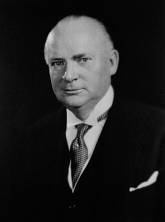
Canada’s Prime Minister, 1930 to 1935
A rich Conservative lawyer who won the 1930 election by promising to end the Depression. Instead it got worse. In 1932 he set up the relief camps, where jobless single men worked for 20 cents a day. People named the horse-pulled cars they used when they could not afford gas "Bennett buggies." He refused the trekkers’ demands and had the RCMP stop them in Regina. Voters blamed him, and he lost badly in 1935.
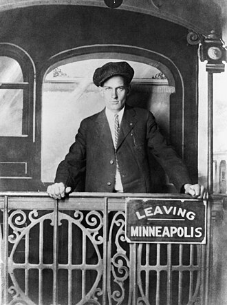
Leader of the On-to-Ottawa Trek, 1935
A union organizer who led the relief camp strikers out of Vancouver on freight trains toward Ottawa. He was one of the 8 leaders who met Bennett. The meeting turned into a yelling match, and Evans called Bennett a liar before he was escorted out. The Regina Riot started on July 1, 1935, when police moved in to arrest the trek leaders.
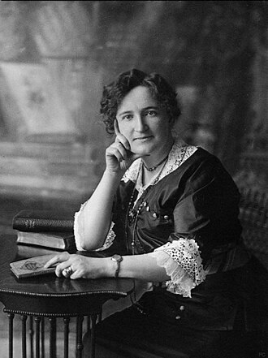
Women’s rights fighter and writer
She fought for women’s right to vote. Manitoba gave women the vote in 1916, the first province to do so, and she helped make that happen. She strongly supported prohibition because she believed drinking hurt women and families. She was also one of the Famous Five, who won the 1929 Persons Case that made women legal "persons."
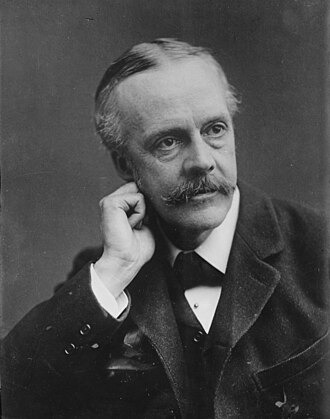
British politician, former British PM
At the 1926 Imperial Conference his report, the Balfour Report, said Britain and the dominions like Canada were equal and not under one another. It was only an idea until the Statute of Westminster made it law in 1931.
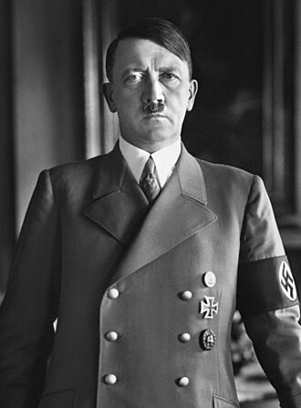
Nazi dictator of Germany, 1933 to 1945
Leader of the Nazi Party. He falsely blamed Jews for Germany losing WWI and hated the Treaty of Versailles. He was appointed Chancellor on Jan 30, 1933, and the Enabling Act made him a dictator. He broke the Treaty by sending troops into the Rhineland (1936), took the Sudetenland at Munich (1938), and invaded Poland on Sept 1, 1939, which started WW2. He was responsible for the Holocaust. He died by suicide on April 30, 1945.
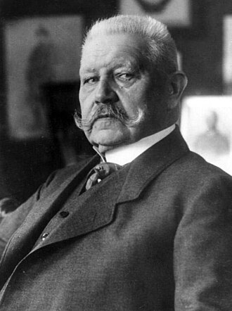
President of Germany, 1925 to 1934
A famous WWI field marshal who became president. He did not like Hitler, but on Jan 30, 1933 he appointed him Chancellor anyway, thinking others could control him. That is why Hitler was never actually voted into power. Hindenburg died in 1934, and Hitler took over his powers too.
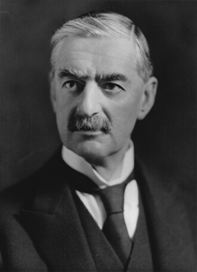
British Prime Minister, 1937 to 1940
The face of appeasement. He gave Hitler what he wanted to avoid another war, and at Munich (Sept 29, 1938) he agreed to give Hitler the Sudetenland. He came home promising "peace for our time." After Germany invaded Poland, he declared war on Sept 3, 1939. Churchill replaced him in May 1940.
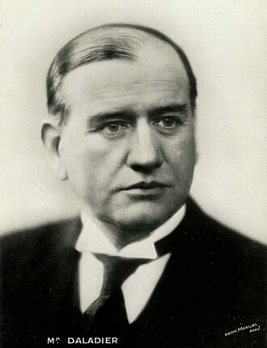
Prime Minister of France
He signed the Munich Agreement with Chamberlain, Hitler and Mussolini. Like Chamberlain, he followed appeasement. France declared war on Germany on Sept 3, 1939.
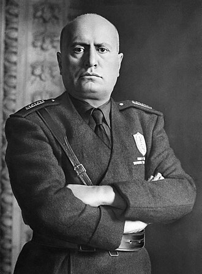
Fascist dictator of Italy, 1922 to 1943
Called "Il Duce" (the leader). He was Hitler’s ally and was at Munich in 1938. After the Allies, including Canada, invaded Sicily on July 10, 1943, he was overthrown and arrested on July 24, 1943. Italy’s new leader asked the Allies for peace.
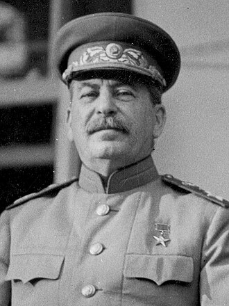
Communist dictator of the Soviet Union
On Aug 23, 1939 he signed the Nazi-Soviet Pact with Hitler, and they promised not to attack each other and split Poland. Hitler broke the deal with Operation Barbarossa on June 22, 1941. After that the Soviets fought on the Allied side, and Soviet soldiers liberated Auschwitz on Jan 27, 1945.
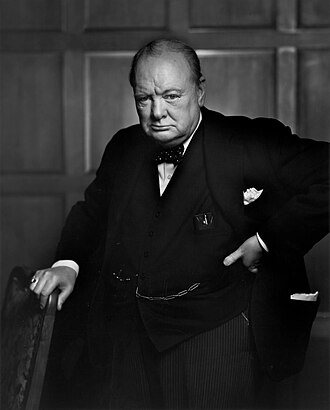
British Prime Minister from May 10, 1940
He took over from Chamberlain right as Germany attacked France. He refused to make peace with Hitler and led Britain through the Dunkirk rescue and the Battle of Britain, when Britain stood almost alone. His speeches kept people fighting.
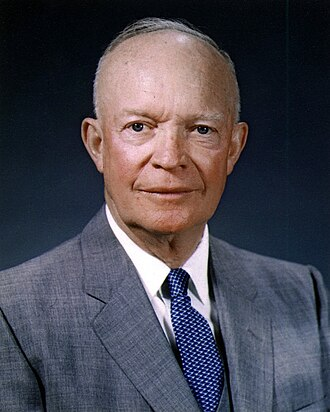
US general, Supreme Allied Commander
He was in charge of the whole D-Day invasion (Operation Overlord) on June 6, 1944, including the Canadians at Juno Beach. He later became President of the United States.
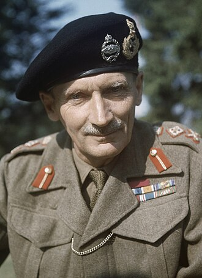
British general, "Monty"
He commanded the Allied ground forces in the Battle of Normandy. He and Eisenhower expected the breakout to take a few weeks, but it took all summer of 1944. Canadian troops fought under his command.
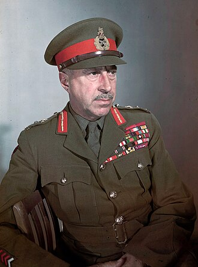
Canadian general
He backed the plan for the Dieppe Raid in 1942, partly because Canadians at home wanted their army to see action. Later he led the First Canadian Army in Normandy and in freeing the Netherlands.
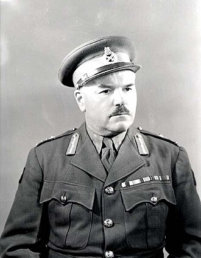
Canadian general at Dieppe
Major-General Hamilton Roberts led the 2nd Canadian Infantry Division in the Dieppe Raid on Aug 19, 1942. The raid was a disaster: 907 Canadians were killed and 1,946 captured. Many blamed him, and he never led troops in battle again.
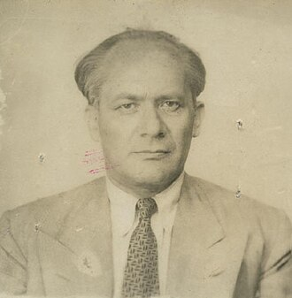
Polish Jewish lawyer
He escaped the Nazis, but dozens of his family members were killed in the Holocaust. In 1944 he created the word "genocide," meaning the deliberate killing of a whole group of people. He pushed the UN to pass the Genocide Convention in 1948.
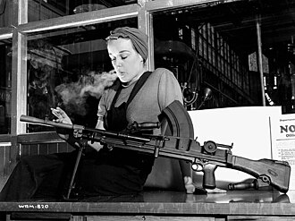
"Ronnie, the Bren Gun Girl," 1941
A real factory worker in Toronto who made Bren machine guns. The National Film Board took photos of her at work and used them as propaganda. The goal was to make factory war work look proud and normal for women, so more women would take those jobs. She is Canada’s version of "Rosie the Riveter."
Photos from Wikimedia Commons (free licences): Richard Bedford Bennett (cropped).jpg; Slim Evans.jpg; Nellie McClung.jpg; A.J. Balfour LCCN2014682753 (cropped).jpg; Hitler portrait crop (cropped)(2).jpg; Bundesarchiv Bild 183-C06886, Paul v. Hindenburg (cropped)(2).jpg; Neville-Chamberlain.jpg; Édouard Daladier.jpg; Mussolini mezzobusto.jpg; StalinCropped1943.jpg; Sir Winston Churchill - 19086236948 (restored).jpg; Dwight D. Eisenhower, official photo portrait, May 29, 1959.jpg; General Sir Bernard Montgomery in England, 1943 TR1036 (cropped).jpg; Crerar e010750463-v8.jpg; Ham-Roberts-PA-153531lrg.jpg; Raphael Lemkin, Photograph 6 (cropped).jpg; VeronicaFoster-RonnieBrenGunGirl-smoke.jpg.
Lesson 1
Lesson 2
Lesson 3
Lesson 4
Lesson 5
Lesson 6
Lesson 7
Lesson 8
Lesson 9
Lesson 10
Lesson 11
Lesson 12
Extra
Questions on the key people and the pictures from this unit. Green means right, red means wrong. Use Shuffle questions and answers to mix it up.
1. What does this picture of flappers reveal about women in the 1920s?
D. Flappers rejected old rules just as women won the vote and were declared 'persons.' (Lesson 1)
2. Who is this person?
A. R.B. Bennett: Canada’s Prime Minister, 1930 to 1935. A rich Conservative lawyer who won the 1930 election by promising to end the Depression. Instead it got worse. In 1932 he set up the relief camps, where jobless single men worked for 20 cents a day. People named the horse-pulled cars they used when they could not afford gas "Bennett buggies." He refused the trekkers’ demands and had the RCMP stop them in Regina. Voters blamed him, and he lost badly in 1935.
3. On what date was this photo of the crowd on Wall Street taken?
C. October 29, 1929 was Black Tuesday, the official start of the Great Depression. (Lesson 2)
4. Which person is this? “A union organizer who led the relief camp strikers out of Vancouver on freight trains toward Ottawa. He was one of the 8 leaders who met Bennett. The meeting turned into a yelling match, and Evans called Bennett a liar before he was escorted out. The Regina Riot started on July 1, 1935, when police moved in to arrest the trek leaders.”
B. Arthur “Slim” Evans: Leader of the On-to-Ottawa Trek, 1935.
5. R.B. Bennett was Prime Minister when which law was passed in 1931?
D. The Statute of Westminster became law on December 11, 1931, while Bennett was PM. (Lesson 3)
6. Who is this person?
C. Nellie McClung: Women’s rights fighter and writer. She fought for women’s right to vote. Manitoba gave women the vote in 1916, the first province to do so, and she helped make that happen. She strongly supported prohibition because she believed drinking hurt women and families. She was also one of the Famous Five, who won the 1929 Persons Case that made women legal "persons."
7. When did the clash between police and trekkers in this photo happen?
C. The Regina Riot happened on Canada Day, July 1, 1935, and ended the On-to-Ottawa Trek. (Lesson 4)
8. Which person is this? “At the 1926 Imperial Conference his report, the Balfour Report, said Britain and the dominions like Canada were equal and not under one another. It was only an idea until the Statute of Westminster made it law in 1931.”
D. Arthur Balfour: British politician, former British PM.
9. What did the four leaders at this Munich meeting give Hitler?
B. The Munich Agreement of September 29, 1938 gave Hitler the Sudetenland, part of Czechoslovakia. (Lesson 5)
10. Who is this person?
A. Adolf Hitler: Nazi dictator of Germany, 1933 to 1945. Leader of the Nazi Party. He falsely blamed Jews for Germany losing WWI and hated the Treaty of Versailles. He was appointed Chancellor on Jan 30, 1933, and the Enabling Act made him a dictator. He broke the Treaty by sending troops into the Rhineland (1936), took the Sudetenland at Munich (1938), and invaded Poland on Sept 1, 1939, which started WW2. He was responsible for the Holocaust. He died by suicide on April 30, 1945.
11. What was the Battle of Britain, the battle this Spitfire fought in?
D. From July to October 1940 Hitler tried to bomb Britain into giving up, and he failed. (Lesson 6)
12. Which person is this? “A famous WWI field marshal who became president. He did not like Hitler, but on Jan 30, 1933 he appointed him Chancellor anyway, thinking others could control him. That is why Hitler was never actually voted into power. Hindenburg died in 1934, and Hitler took over his powers too.”
B. Paul von Hindenburg: President of Germany, 1925 to 1934.
13. How many Canadians were sent to defend Hong Kong, like the soldiers arriving in this photo?
C. In October 1941, 1,975 Canadians sailed from Vancouver to defend Hong Kong. (Lesson 7)
14. Who is this person?
C. Neville Chamberlain: British Prime Minister, 1937 to 1940. The face of appeasement. He gave Hitler what he wanted to avoid another war, and at Munich (Sept 29, 1938) he agreed to give Hitler the Sudetenland. He came home promising "peace for our time." After Germany invaded Poland, he declared war on Sept 3, 1939. Churchill replaced him in May 1940.
15. What event and date does this picture show?
A. Canadians landed at Juno Beach on D-Day, June 6, 1944. (Lesson 9)
16. Which person is this? “He signed the Munich Agreement with Chamberlain, Hitler and Mussolini. Like Chamberlain, he followed appeasement. France declared war on Germany on Sept 3, 1939.”
D. Édouard Daladier: Prime Minister of France.
17. Why do the trials shown in this photo matter?
D. The Nuremberg Trials showed that leaders can be held responsible for crimes against humanity. (Lesson 11)
18. Who is this person?
A. Benito Mussolini: Fascist dictator of Italy, 1922 to 1943. Called "Il Duce" (the leader). He was Hitler’s ally and was at Munich in 1938. After the Allies, including Canada, invaded Sicily on July 10, 1943, he was overthrown and arrested on July 24, 1943. Italy’s new leader asked the Allies for peace.
19. How many Canadians died freeing the Netherlands, where this crowd is celebrating?
A. More than 7,600 Canadians died freeing the Netherlands, and the Dutch still thank Canada. (Lesson 12)
20. Which person is this? “On Aug 23, 1939 he signed the Nazi-Soviet Pact with Hitler, and they promised not to attack each other and split Poland. Hitler broke the deal with Operation Barbarossa on June 22, 1941. After that the Soviets fought on the Allied side, and Soviet soldiers liberated Auschwitz on Jan 27, 1945.”
B. Joseph Stalin: Communist dictator of the Soviet Union.
touch_appPick a lesson from the list to open it.
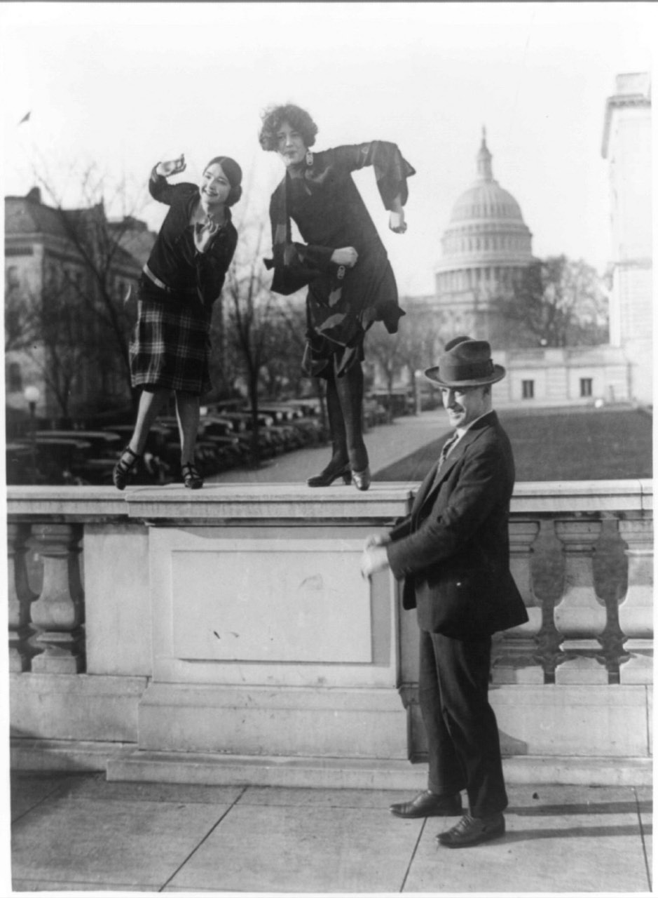
Lesson 1 · 1920s (prohibition 1901 to 1948)
Big question: What was prohibition and how did it affect Canadians? How did women's identity change, and what influence did jazz have?
In the 1920s flappers and jazz broke old rules, while prohibition banned alcohol but failed because people kept drinking and gangsters got rich.
The 1920s were a time of big social change, and this lesson covers three parts of it. Prohibition was a ban on alcohol that started in PEI in 1901 and spread across Canada, pushed by the temperance movement, who believed alcohol caused poverty, crime and abuse. People got around it with doctor's prescriptions, illegal bars called speakeasies and rum running into the US, gangsters got rich, and the ban fell apart by 1930 (except in PEI, which held on until 1948). At the same time, flappers (young women who rejected old rules) and jazz music (created by African Americans) showed a new, freer attitude, especially for women, who had just won the vote.
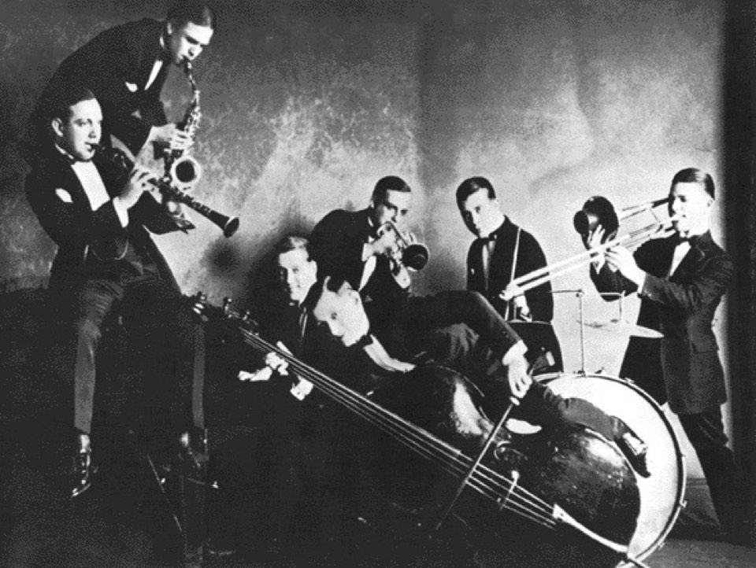
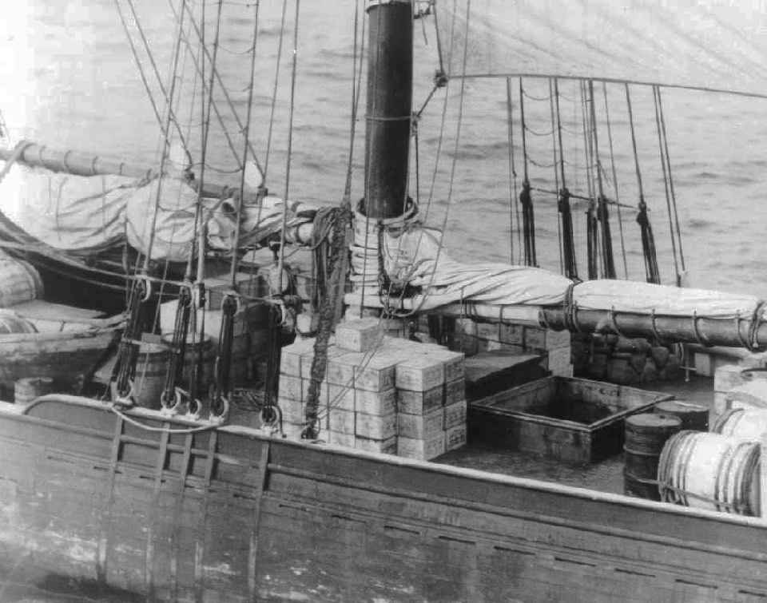
| Key term / person | Meaning |
|---|---|
| Prohibition | A law that made alcohol illegal |
| Temperance | Avoiding alcohol; the movement wanted bars and taverns closed |
| "The Noble Experiment" | Nickname for prohibition; supporters thought it would end poverty, crime, disease and abuse |
| Loophole | A legal way around a rule (alcohol "for illness" with a prescription) |
| Speakeasy | An illegal bar during prohibition |
| Rum running | Smuggling alcohol from Canada into the US |
| Nellie McClung | Women's rights leader who also supported prohibition |
| Flapper | Young 1920s woman with short hair and skirts who rejected old rules for women |
| Jazz | African American music of the early 1900s built on improvisation and "swing" |
Test tip: Know the dates 1901, by 1930, 1933, 1948 and why it failed (gangsters got rich). For a flapper picture, PIR: prominent (shocking and new), impact on how women saw themselves, reveals women becoming more independent as they won the vote.
Tap an answer. Green means right, red means wrong.
1. In 1901, which province became the first to ban alcohol province-wide?
A. PEI was the first province to ban alcohol province-wide in 1901.
2. What did the temperance movement work to do?
C. Temperance means avoiding alcohol, and the movement worked for generations to close bars and taverns.
3. In the late 1800s, how many bars did Montreal have compared to its population?
B. Montreal had 1 bar per 70 people, while Toronto had 1 per 150.
4. What nickname did supporters give prohibition?
D. Supporters called prohibition "The Noble Experiment" because they thought it would end poverty, crime, disease and abuse.
5. What was a speakeasy?
C. Speakeasies were illegal bars that opened all over the country during prohibition.
6. What was rum running?
A. Rum running meant smuggling alcohol from Canada into the US, which also had prohibition.
7. Which group was NOT a supporter of the temperance movement?
D. The Original Creole Orchestra was a jazz band, not a temperance group.
8. Which famous women's rights leader also strongly supported prohibition?
B. Nellie McClung fought for women's rights and strongly supported prohibition.
9. Which of these was a loophole, a legal way around prohibition?
B. With a doctor's prescription you could legally buy alcohol "for illness."
10. Why did people turn against prohibition?
D. People turned against prohibition because gangsters were making huge profits from it.
11. By 1930, alcohol was legal again everywhere in Canada except which province?
A. By 1930 the provinces had repealed their laws, except PEI.
12. In what year did the USA end prohibition?
C. The USA ended prohibition in 1933.
13. When did PEI finally end prohibition?
D. PEI was the last to end prohibition, in 1948.
14. How did many Canadian distilleries get rich during prohibition?
B. Distilleries could legally make alcohol for export, and many got rich selling to US gangsters.
15. Who created jazz?
C. Jazz was created by African Americans in the early 1900s, mixing African and European traditions.
16. In a scrapbook story, a Hamilton man hid bottles under his coat. How much did he sell each one for?
A. The Hamilton man sold the bottles strapped under his coat for $10 each.
17. Which features describe jazz?
A. Jazz is known for improvisation, a rhythm called "swing," and strong emotion.
18. What do flappers reveal about women in the 1920s?
D. Flappers came as women won the vote and were declared "persons," showing women becoming more independent.
19. The Original Creole Orchestra, with cornet player Freddie Keppard, came from which city?
C. The Original Creole Orchestra came from New Orleans and toured Western Canada.
20. In the late 1800s, why did a parent drinking away the pay hurt a family so badly?
B. There was no social welfare back then, so a parent who drank away the pay left the family in poverty.
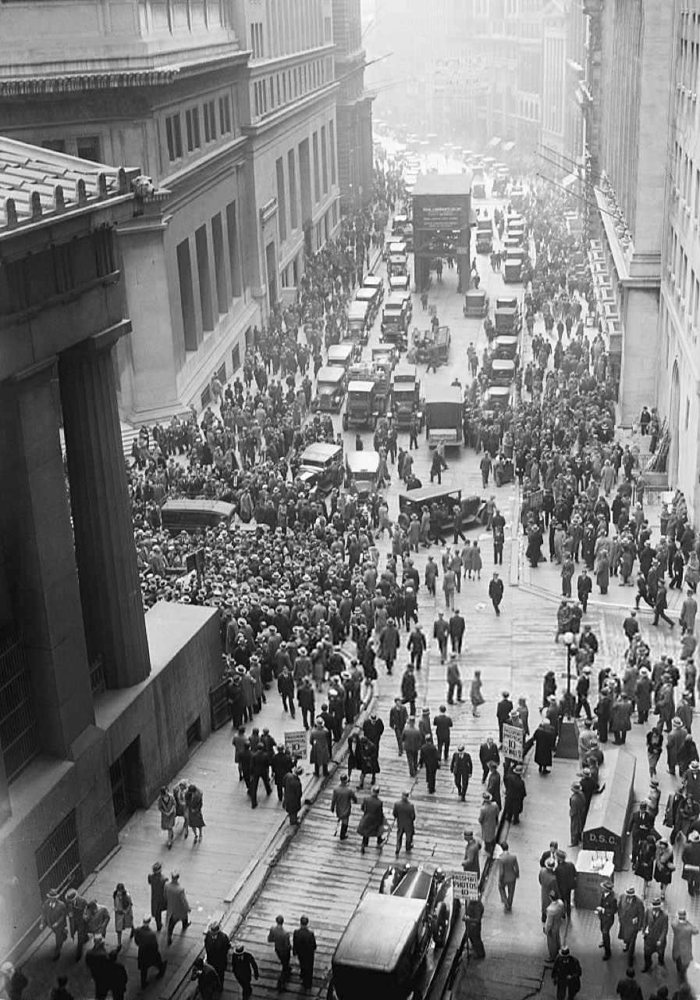
Lesson 2 · 1929 to 1939
Big question: What were the causes and consequences of the 1929 stock market crash and the Depression that followed?
When the stock market crashed in 1929, loans failed, banks closed and exports collapsed, so by 1933, 27% of Canadians had no job.
The 1920s boom ended suddenly on Black Tuesday, October 29, 1929, when the stock market crashed. Many people had bought stocks with borrowed money (buying on margin), so when prices collapsed they could not repay their loans, banks lost their money, and people rushed to pull out their savings. This lesson explains that chain reaction and why Canada was hit especially hard: its biggest customer, the US, stopped buying Canadian goods, prices for lumber, cattle and wheat fell, and drought ruined Prairie farms. By 1933, the worst year of the Great Depression, 27% of Canadians had no job.
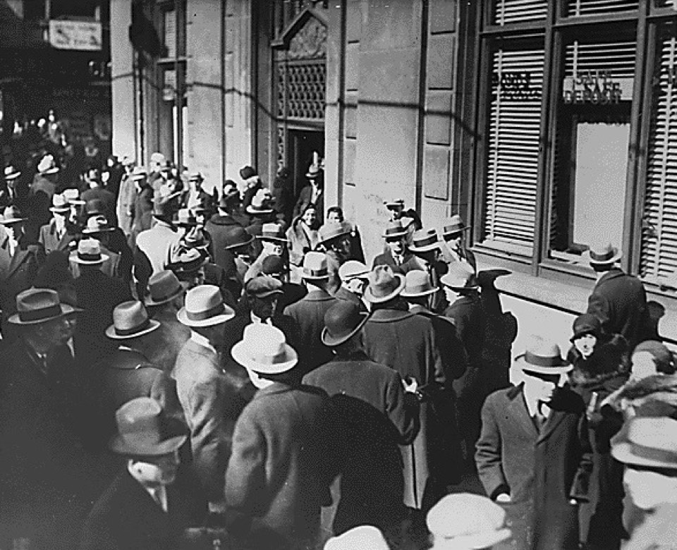
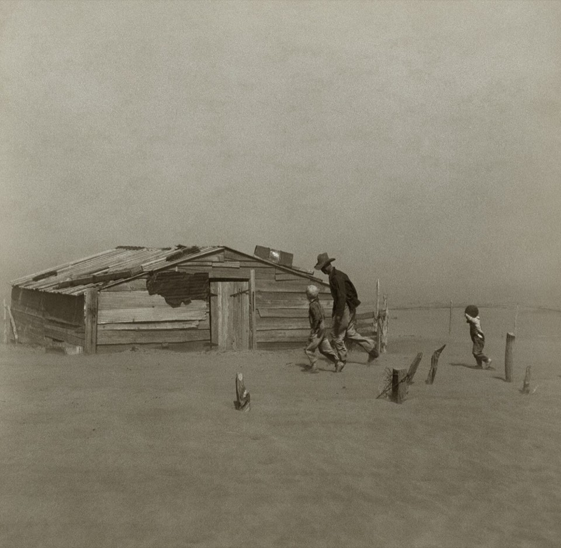
| Key term / person | Meaning |
|---|---|
| Black Tuesday | Oct 29, 1929, the day the stock market crashed |
| Great Depression | The huge economic crisis of the 1930s |
| Stock | A small share of ownership in a company |
| Buying on margin | Buying stocks with mostly borrowed money |
| Bankrupt | Having no money left to pay what you owe |
| Bank run / bank panic | Many people rush to take out savings at once and the bank runs out of money |
| GNP | Gross national product: total value of everything a country produces |
| Export | A product sold to another country |
Test tip: "Why the crash?" Give the chain: prices fell, margin buyers could not repay, banks froze, bank run. "Effect on Canadians?" Use numbers: 27% unemployed in 1933, GNP down 40%, cattle down 63%, Prairie drought. A Prairie farm diary, 1933 is a strong PERSAT choice.
Tap an answer. Green means right, red means wrong.
1. What was the date of Black Tuesday, when the stock market crashed?
A. The stock market crashed on October 29, 1929, the official start of the Great Depression.
2. What does buying on margin mean?
C. Buying on margin means paying a small part of a stock's price and borrowing the rest from a bank or broker.
3. Which was the worst year of the Depression, and what share of Canadians were unemployed?
B. 1933 was the worst year, with 27% of Canadians unemployed.
4. By how much did Canada's GNP shrink from 1929 to 1939?
D. Canada's GNP shrank 40% from 1929 to 1939.
5. What is GNP?
C. GNP means gross national product, the total value of everything a country produces.
6. Why did banks lose money when the market crashed?
A. Banks had invested customers' money in stocks, so they lost money too.
7. What caused the second panic after the crash?
D. When banks stopped withdrawals, people rushed to take out their savings, causing a bank run.
8. Who was Canada's biggest trading partner?
B. The United States was Canada's biggest trading partner, so its crash hit Canada hard.
9. How did Canada's car exports change from 1929 to 1931?
B. Car exports dropped from 102,000 in 1929 to 13,000 in 1931.
10. By how much did cattle prices fall?
D. Cattle prices fell 63%.
11. By how much did lumber prices fall from 1929 to 1932?
A. Lumber prices fell 32% from 1929 to 1932.
12. How did Canadian company profits change after 1929?
C. Company profits fell from $398 million in 1929 to $98 million.
13. Which is NOT a reason Prairie farmers were hit hardest?
D. Stock prices never recovered after the crash, while wheat prices, drought and poor soil really did hurt farmers.
14. Where did many Prairie farmers move to escape the Depression?
B. Many left farms in southern Alberta, Saskatchewan and Manitoba for BC and northwest Alberta.
15. What happened to margin buyers after the crash?
C. Margin buyers lost everything and could not repay their loans, so many went bankrupt.
16. Why did stock prices keep falling during the panic?
A. In the panic everyone tried to sell, but nobody wanted to buy.
17. What does bankrupt mean?
A. Bankrupt means having no money left to pay what you owe.
18. In the 1920s, about how much did a Ford touring car cost?
D. A Ford touring car cost about $455, and buying on credit was normal.
19. How long did the Great Depression last?
C. People expected a short crisis, but it lasted until the late 1930s.
20. By how much did the US GNP shrink from 1929 to 1939?
B. The US GNP shrank 37%, a little less than Canada's 40%.
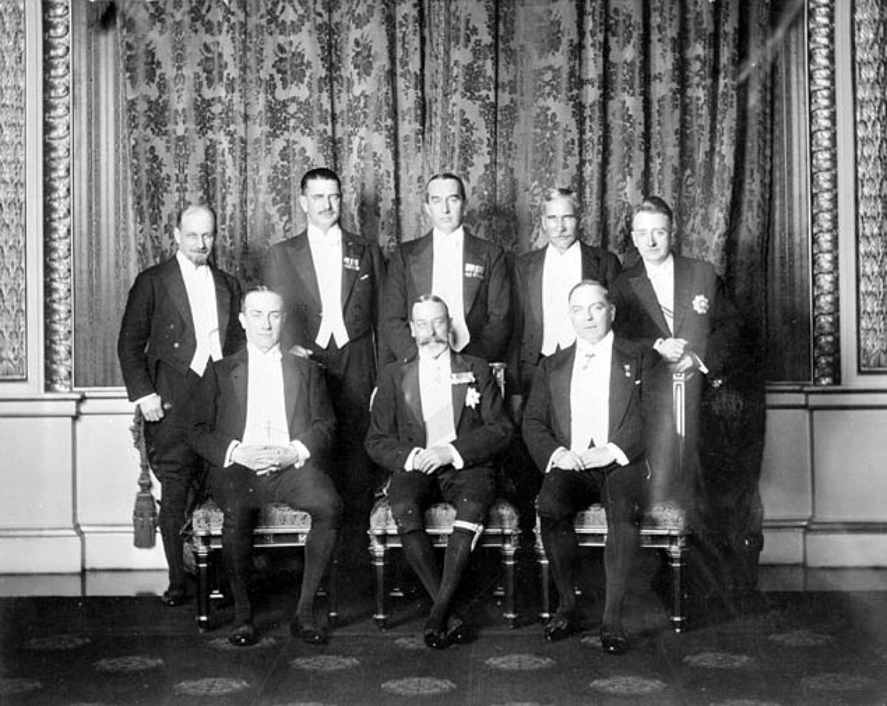
Lesson 3 · 1926 and 1931
Big question: What was the Statute of Westminster, and what did it mean for Canada and the British Empire?
The 1931 Statute of Westminster turned the 1926 Balfour Report into law, so Britain could no longer make Canada's laws.
Even after Confederation in 1867, Canada was not fully independent, because Britain could still block its laws. This lesson follows how that changed. The Balfour Report (1926) said Britain and its dominions, like Canada, were equal, but it was only an idea. The Statute of Westminster (December 11, 1931) turned that idea into law: Britain could no longer make laws for Canada, and Canada could run its own foreign policy. Canada still needed Britain's approval to change its constitution until the Canada Act of 1982. This matters later in the unit, because it is why Canada could declare war on Germany on its own in 1939.
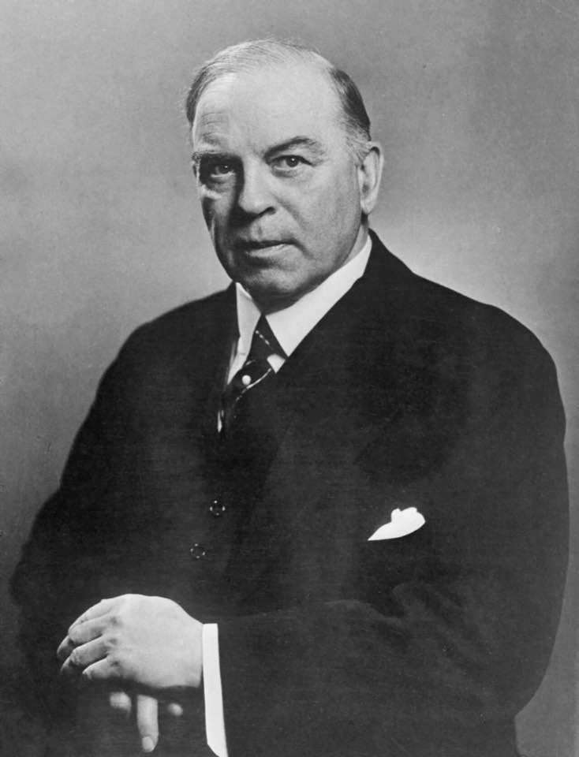
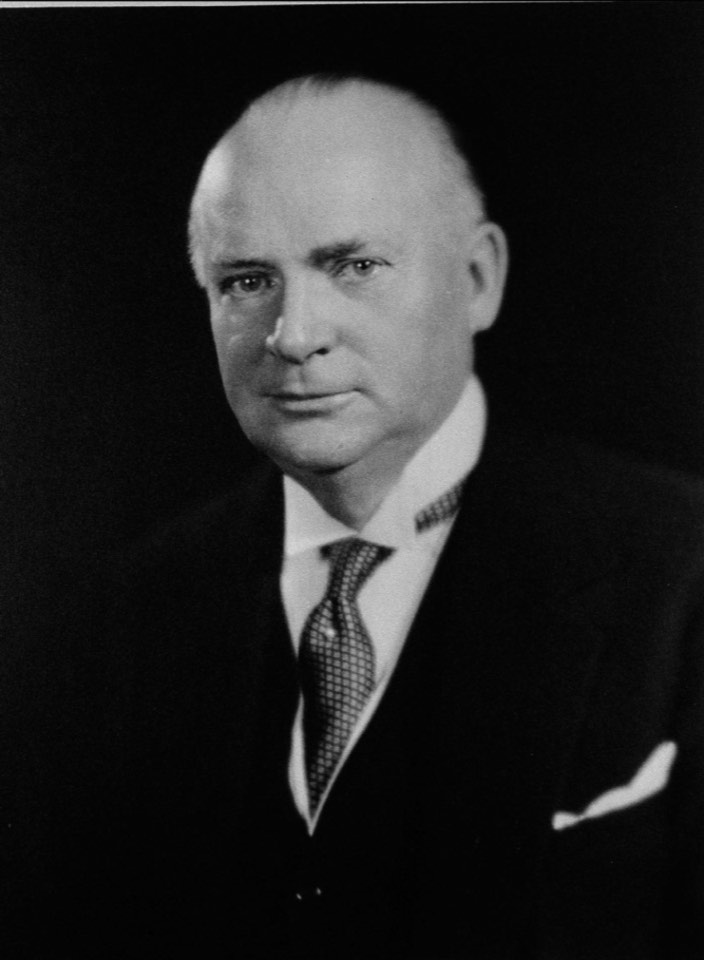
| Key term / person | Meaning |
|---|---|
| Dominion | A self-governing country still part of the British Empire |
| Autonomy | The power to govern yourself |
| BNA Act (1867) | British law that created Canada as a dominion |
| Arthur Balfour | Former British PM who wrote the 1926 report |
| Balfour Report (1926) | Said dominions were equal to Britain; only an idea |
| Statute of Westminster (1931) | Law that made the Balfour Report official and gave dominions legal independence |
| Commonwealth | Group of countries that used to be part of the British Empire |
| Foreign policy | How a country deals with other countries |
| The Crown | The British king or queen |
Test tip: Don't mix up the dates: 1926 = report (idea), 1931 = statute (law), 1982 = constitution. Because of the Statute, Canada declared war on Germany on its own on September 10, 1939, a week after Britain (Lesson 5).
Tap an answer. Green means right, red means wrong.
1. In what year was the Statute of Westminster passed?
A. The British Parliament passed the Statute of Westminster in 1931.
2. In what year was the Balfour Report written?
C. The Balfour Report came out in 1926.
3. What did the BNA Act of 1867 do?
B. The BNA Act (1867) made Canada a self-governing dominion.
4. On what date did Canada gain full legal independence in making laws?
D. Canada gained full legal independence in making laws on December 11, 1931.
5. Why was the Balfour Report only a first step?
C. The Balfour Report was a huge step but only an idea, since no laws changed yet.
6. What does it mean that the Statute "gave the Balfour Report teeth"?
A. The Statute turned the Balfour Report into law.
7. Which was NOT a result of the Statute of Westminster for Canada?
D. Britain still controlled changes to Canada's constitution until the Canada Act 1982.
8. Which law finally gave Canada control of its constitution?
B. Britain controlled changes to Canada's constitution until the Canada Act 1982.
9. According to the Balfour Report, what were the dominions?
B. The Balfour Report said dominions were self-governing communities equal to Britain and each other.
10. Who was Arthur Balfour?
D. Arthur Balfour was a British politician who was UK Prime Minister from 1902 to 1905.
11. What was the Balfour Declaration of 1917?
A. The 1917 Balfour Declaration said Britain supported a Jewish homeland in Palestine.
12. What did the Entente Cordiale of 1904 do?
C. The Entente Cordiale (1904) helped make Britain and France allies.
13. Which dominion refused the Statute, went back to direct British rule and joined Canada in 1949?
D. Newfoundland refused the Statute, returned to direct British rule and joined Canada in 1949.
14. When did Australia accept the Statute of Westminster?
B. Australia accepted the Statute in 1942, and its last ties ended with the Australia Act 1986.
15. When did New Zealand adopt the Statute of Westminster?
C. New Zealand did not want it at first but adopted it in 1947.
16. What happened with South Africa after the Statute?
A. South Africa gained independence in 1931, left the Commonwealth in 1961 and rejoined in 1994.
17. What is a dominion?
A. A dominion is a self-governing country that is still part of the British Empire.
18. What does autonomy mean?
D. Autonomy means the power to govern yourself.
19. Why does the Statute of Westminster matter for the start of WWII?
C. Because of the Statute, Canada declared war on its own on September 10, 1939, a week after Britain.
20. After 1867, why were Canadians unhappy with Britain's power?
B. Britain could block any change that did not help the British Empire, which made Canadians unhappy.
Lesson 4 · 1935
Big question: What was the On-to-Ottawa Trek, who was involved, and why is it important?
In 1935 jobless relief camp workers rode trains toward Ottawa to protest, got stuck in Regina, where a riot ended it, and Bennett lost the election.
During the Depression, the government sent jobless single men to relief camps, where they did hard work for just 20 cents a day. In 1935 the workers went on strike and rode freight trains from Vancouver toward Ottawa to protest to Prime Minister R.B. Bennett. This lesson tells the story of the On-to-Ottawa Trek: the trekkers were stopped in Regina, their leaders' meeting with Bennett turned into a shouting match, and the Regina Riot on July 1, 1935 ended the protest. It also explains Bennett buggies (cars pulled by horses because people could not afford gas) and how anger at Bennett helped him lose the 1935 election.
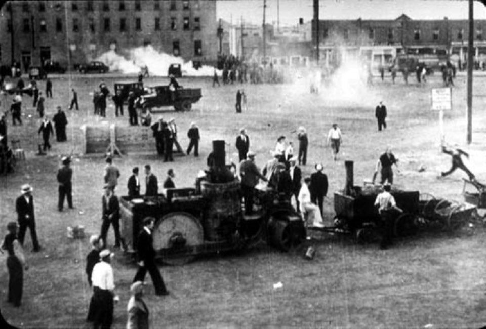
| Key term / person | Meaning |
|---|---|
| R.B. Bennett | Prime Minister of Canada during the Depression, 1930 to 1935 |
| Arthur "Slim" Evans | A leader of the trek; called Bennett a liar |
| Relief camps | Government work camps for jobless men, 20 cents a day |
| On-to-Ottawa Trek | 1935 train trip by relief camp workers from Vancouver toward Ottawa to protest |
| Regina Riot | July 1, 1935 clash between police and trekkers in Regina |
| RCMP | Royal Canadian Mounted Police |
| Extortionist | Someone who uses threats to get what they want |
| Bennett buggy | A car pulled by horses because the owner could not afford gas |
Test tip: Bennett buggy photo is a classic image question. PIR: prominent (named to mock the PM), impact (car owners could not afford gas), reveals how poor people were and how much they blamed Bennett. Trek dates: April strike, June 14 Regina, July 1 riot.
Tap an answer. Green means right, red means wrong.
1. How much were men paid in the federal relief camps?
A. Relief camp workers were paid only 20 cents a day.
2. From which city did the On-to-Ottawa trekkers start riding trains?
C. A few thousand men rode trains from Vancouver toward Ottawa.
3. When did the trekkers reach Regina?
B. The trekkers reached Regina, Saskatchewan, on June 14, 1935.
4. When did the Regina Riot happen?
D. The Regina Riot happened on Canada Day, July 1, 1935.
5. Why did relief camp workers strike in April 1935?
C. Thousands struck over conditions, low pay and boring routine.
6. What deal did two federal cabinet ministers offer in Regina?
A. The deal sent 8 leaders to Ottawa to meet PM R.B. Bennett while the rest stayed in Regina.
7. Which trek leader called Bennett a liar and was escorted out?
D. Leader Arthur "Slim" Evans called Bennett a liar and was escorted out.
8. What did Bennett call the trek leaders at the meeting?
B. The meeting became a yelling match, and Bennett called them radicals and extortionists.
9. What is an extortionist?
B. An extortionist is someone who uses threats to get what they want.
10. What were the casualties of the Regina Riot?
D. 1 police officer was killed, and 40 protesters and 5 civilians were wounded (45 total).
11. How many protesters were arrested in the Regina Riot?
A. 130 protesters were arrested.
12. How many seats did Bennett's party have before and after the 1935 election?
C. Bennett's party dropped from 134 seats to 69 in the 1935 election.
13. Which statement about the Regina Riot is NOT true?
D. The movement fell apart and never got past Regina.
14. What was a Bennett buggy?
B. A Bennett buggy was a car pulled by horses because the owner could not afford gas.
15. Why were they called Bennett buggies?
C. People named them to mock Bennett, whom they blamed for the Depression.
16. How many cars were sold in 1922, before many sat useless after 1929?
A. 4.6 million cars were sold in 1922, but after 1929 gas went up and was rationed.
17. Who was R.B. Bennett?
A. R.B. Bennett was Canada's Prime Minister during the Depression, 1930 to 1935.
18. What was the main goal of the On-to-Ottawa Trek?
D. The trekkers wanted to protest on the steps of Parliament and get the PM's attention.
19. What happened to the trek movement after the Regina Riot?
C. After the riot, the movement fell apart and never got past Regina.
20. How long did the relief camp workers strike before taking their complaints to Ottawa?
B. After two months of striking with no results, they took their complaints to Ottawa.
Lesson 5 · 1933 to 1939
Big question: Why was Nazi aggression left unchecked before World War Two?
Hitler kept breaking the Treaty of Versailles, Britain and France kept giving in, and when he invaded Poland in September 1939 the Second World War began.
After WWI, Germans were humiliated and poor because of the Treaty of Versailles, and Adolf Hitler won support by promising to rebuild Germany's pride and power. This lesson follows how Hitler broke the treaty step by step: sending troops into the Rhineland (1936), taking over Austria (1938), and getting the Sudetenland from Czechoslovakia at the Munich Agreement (1938). Britain and France kept giving in, a policy called appeasement, because of fear of another war, guilt about Versailles and some sympathy for Germany. When Germany invaded Poland on September 1, 1939, the Second World War began, and Canada declared war on its own on September 10.
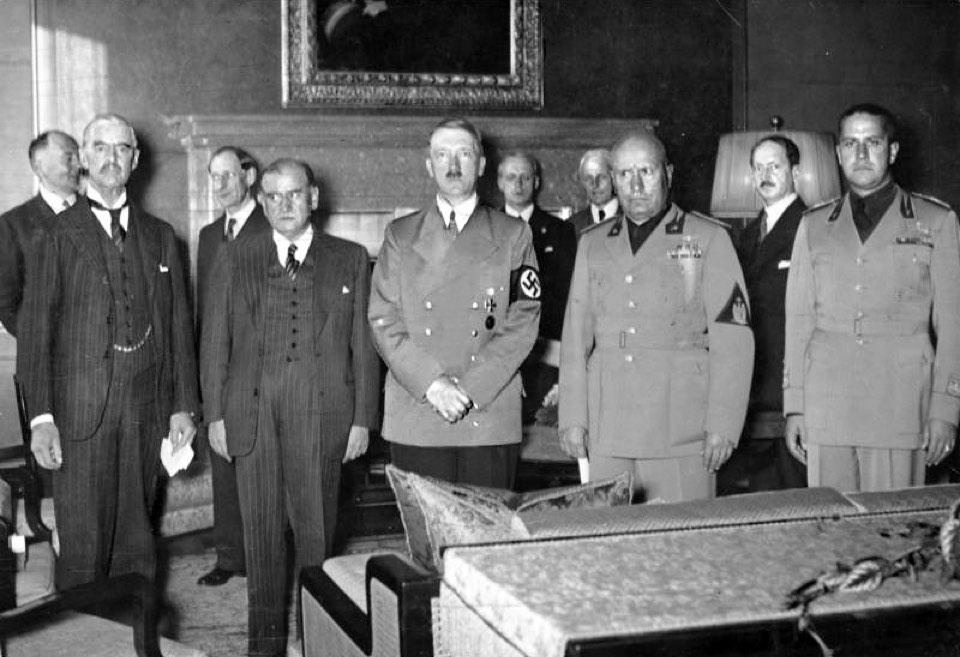
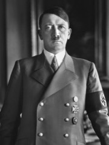
Adolf HitlerNazi dictator who kept breaking the Treaty of Versailles| Key term / person | Meaning |
|---|---|
| Appeasement | Giving an aggressive country what it wants to avoid war |
| Treaty of Versailles | 1919 peace deal after WWI that punished Germany |
| Rhineland | German land near France meant to stay free of troops; Hitler sent troops in, 1936 |
| Annex | To take over another country or territory and make it part of your own |
| Sudetenland | Part of Czechoslovakia that Hitler got in the Munich Agreement |
| Munich Agreement | Sept 29, 1938 deal that gave Hitler the Sudetenland |
| Satellite state | A country controlled by a more powerful one (Slovakia, by Germany) |
| Danzig | Polish city Hitler wanted, which led to the invasion of Poland |
| Blitzkrieg | "Lightning war": a fast attack using tanks, infantry and planes together |
| Neville Chamberlain | British PM who appeased Hitler and said "peace for our time" |
| Édouard Daladier | French PM at the Munich Agreement |
| Benito Mussolini | Italian dictator who wrote the plan for the Munich Agreement |
Test tip: Review Question 5 is this lesson. Know the rules Hitler broke (Rhineland, Austria, Sudetenland, rest of Czechoslovakia), the 3 reasons for appeasement (Fear, Guilt, Sympathy) and the war dates Sept 1, 3 and 10, 1939. Chamberlain picture, PIR: prominent (a PM promising peace), impact (appeasement let Hitler grow into a world war), reveals how afraid people were of another war.
Tap an answer. Green means right, red means wrong.
1. When did German troops march into the Rhineland?
A. German troops marched into the Rhineland on March 7, 1936.
2. What did the Munich Agreement give Hitler?
C. The Munich Agreement gave Hitler the Sudetenland, part of Czechoslovakia.
3. Why did many Germans love Hitler?
B. From 1933 to 1939 Hitler rebuilt the economy and military, and each broken Versailles rule gave Germans back pride.
4. What was the Treaty of Versailles?
D. The Treaty of Versailles was the 1919 peace deal that punished Germany after WWI.
5. Who brought the written plan that everyone accepted at Munich?
C. Mussolini, the Italian dictator, brought the written plan everyone accepted.
6. What did Chamberlain say when he came home from Munich?
A. On September 30, 1938, Chamberlain said he believed it was "peace for our time."
7. Who was NOT at the table for the Munich Agreement?
D. The Munich meeting had Hitler, Chamberlain, Daladier and Mussolini, not Stalin.
8. Why did Hitler join the Spanish Civil War in 1936?
B. Hitler joined on the Fascist side to fight communism and test his new army tactics.
9. What is appeasement?
B. Appeasement means calming an aggressor by giving it what it wants, to avoid an expensive, bloody war.
10. What were the three reasons the world kept giving in to Hitler?
D. The memory trick for appeasement is Fear, Guilt, Sympathy.
11. What was the "guilt" reason for appeasement?
A. Guilt meant many people thought the Treaty of Versailles had been too harsh on Germany.
12. What did Germany do in March 1939?
C. In March 1939 German troops took the rest of Czechoslovakia, less than six months after Munich.
13. Which is an example of a satellite state from this lesson?
D. Slovakia became a German satellite state, a country controlled by Germany.
14. Which Polish city did Hitler want, leading to the invasion of Poland?
B. Hitler wanted Danzig, and when Poland refused, he used force.
15. When did Britain and France declare war on Germany?
C. Britain and France declared war on Germany on September 3, 1939.
16. When did Canada declare war on Germany?
A. Canada declared war on September 10, 1939, its first time doing so on its own.
17. What made it possible for Canada to declare war on its own?
A. The Statute of Westminster gave Canada control of its foreign policy.
18. What was Blitzkrieg?
D. Blitzkrieg means "lightning war," a fast attack with tanks, motorized infantry and planes together.
19. Because of Blitzkrieg, about how long did it take for Poland to fall?
C. Because of Blitzkrieg, Poland fell in about one month.
20. Why was Hitler actually angry about the Munich Agreement?
B. Hitler wanted to march in as a "liberator" rather than obey the other powers.
Lesson 6 · 1939 to 1941
Big question: What happened after the outbreak of war?
Hitler split Poland with Stalin, swept across Western Europe and bombed Britain, but Dunkirk and the Battle of Britain kept Britain fighting, and Barbarossa failed.
This lesson covers the first two years of WWII. Hitler and Stalin signed the Nazi-Soviet Pact, split Poland between them, and Germany then conquered most of Western Europe using fast blitzkrieg attacks. The British army was nearly trapped but was rescued at Dunkirk, and Britain, led by Winston Churchill, refused to surrender. Germany then tried to bomb Britain into giving up in the Battle of Britain, where Canadian pilots helped, and failed. In June 1941 Hitler broke his pact and invaded the Soviet Union (Operation Barbarossa), but the huge distances, mud and freezing winter stopped him.
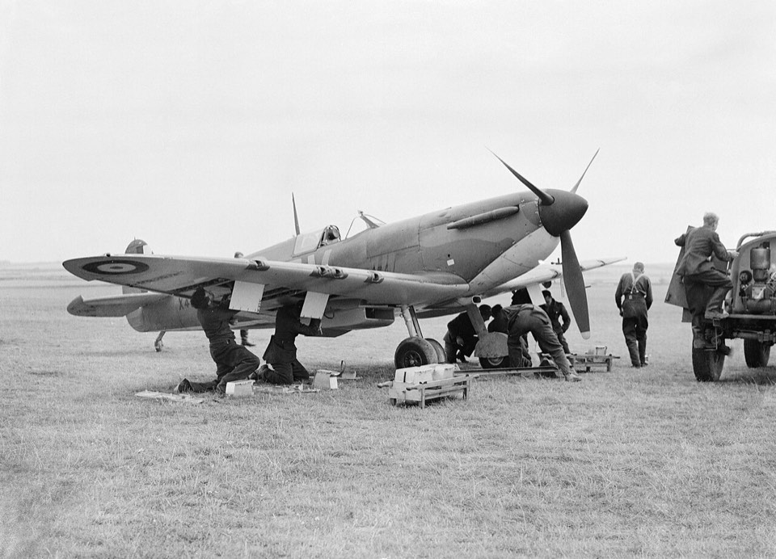
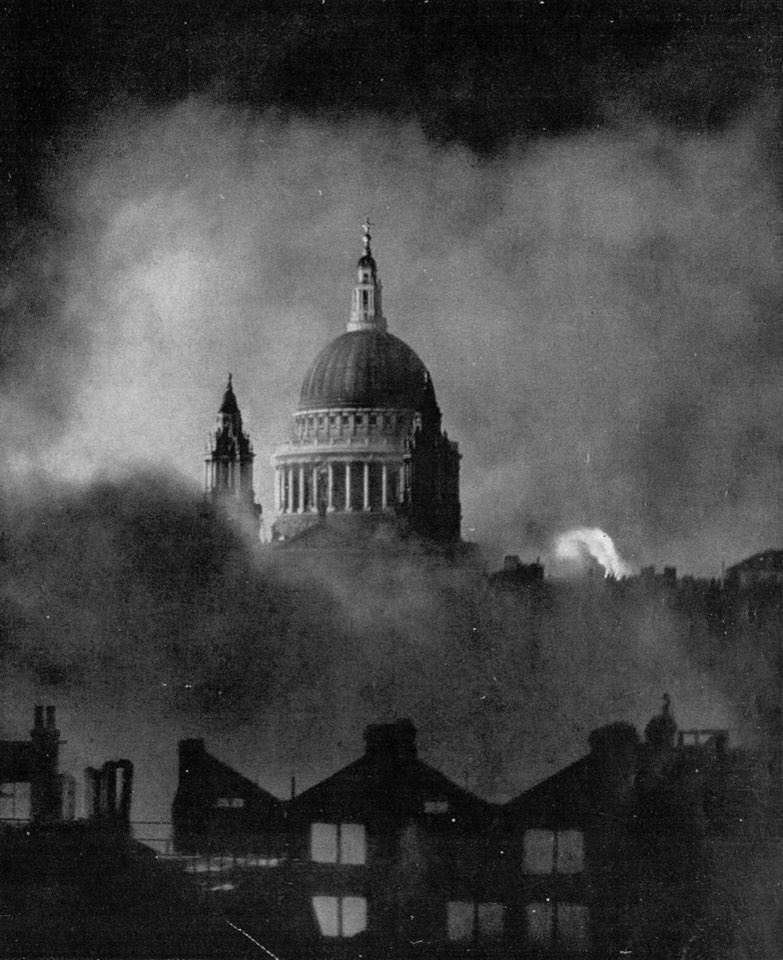
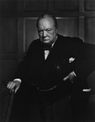
Winston ChurchillBritish PM from May 10, 1940: "we shall never surrender"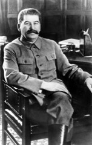
Joseph StalinSoviet leader who made a deal with Hitler, then was invaded| Key term / person | Meaning |
|---|---|
| Joseph Stalin | Communist leader of the Soviet Union |
| Treaty of Non-Aggression | Aug 23, 1939 deal: Germany and the Soviet Union promise not to attack each other |
| Winston Churchill | British PM from May 10, 1940, who promised Britain would "never surrender" |
| Operation Dynamo | The Miracle at Dunkirk: rescue of 338,226 Allied soldiers from Dunkirk, France, 1940 |
| Battle of Britain | Germany's 1940 bombing campaign against Britain, which failed |
| RAF / RCAF | Royal Air Force (Britain) / Royal Canadian Air Force |
| Operation Barbarossa | Germany's invasion of the Soviet Union on June 22, 1941 |
| Artillery | Large guns that fire shells over long distances |
Test tip: Don't mix up the two June 22s: 1940 Germany controls Western Europe, 1941 Barbarossa begins. Learn 338,226 (Dunkirk) and Aug 26, 1940 (Canada's first air fight). Dunkirk photo, PIR: prominent (called a "miracle"), impact (Britain's army survived), reveals ordinary people in small boats saving their country.
Tap an answer. Green means right, red means wrong.
1. When did Germany and the Soviet Union sign the Treaty of Non-Aggression?
A. The Nazi-Soviet Pact was signed on August 23, 1939.
2. Why did the Nazi-Soviet Pact matter?
C. The pact meant Hitler could attack Poland without worrying about the Soviets.
3. How was Poland split on September 29, 1939?
B. Germany and the Soviets split Poland, with the Nazis taking the west and the Soviets the east.
4. When did Winston Churchill become Britain's Prime Minister?
D. Winston Churchill became Britain's Prime Minister on May 10, 1940.
5. Operation Dynamo is better known as what?
C. Operation Dynamo is better known as the Miracle at Dunkirk.
6. How many Allied soldiers were rescued at Dunkirk?
A. 338,226 Allied soldiers were rescued from Dunkirk.
7. Why was Dunkirk called a "miracle"?
D. Britain's army could not be replaced, and the rescue let it escape to defend Britain.
8. What was Churchill's message in his June 4, 1940 speech?
B. Churchill said Britain would never surrender and the "New World" would one day come to the rescue.
9. When did the first Canadian soldiers sail for Europe?
B. The first Canadian soldiers sailed for Europe in December 1939.
10. Which country was NOT under German control by June 22, 1940?
D. Britain stood almost alone in Western Europe and was never conquered.
11. What was the Battle of Britain?
A. In the Battle of Britain, Hitler tried to bomb Britain into giving up before invading.
12. When did No. 1 Fighter Squadron become the first RCAF unit to fight enemy planes?
C. On August 26, 1940, No. 1 Fighter Squadron attacked German bombers over southern England.
13. Why did Hitler quit the Battle of Britain by October 31, 1940?
D. By October 31, Hitler saw he could not break the RAF or the British people.
14. When did Operation Barbarossa begin?
B. Operation Barbarossa began on June 22, 1941.
15. How many German soldiers did Hitler send in Operation Barbarossa?
C. Hitler sent 3.8 million soldiers into the Soviet Union.
16. What happened on April 6, 1941?
A. On April 6, 1941, the Nazis invaded Greece and Yugoslavia.
17. Which agreement did Hitler break by launching Operation Barbarossa?
A. Attacking the Soviet Union broke the Treaty of Non-Aggression.
18. Which is NOT a reason Operation Barbarossa failed?
D. Germany sent 4,389 aircraft, so a lack of planes was not the problem.
19. What problem did German trains have in the Soviet Union?
C. Soviet railway tracks were a different size from German trains, which hurt supply lines.
20. What is artillery?
B. Artillery means large guns that fire shells over long distances.
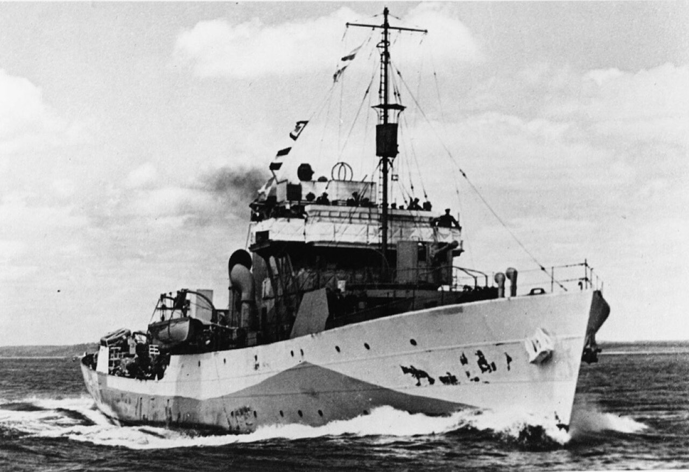
Lesson 7 · 1939 to 1945
Big question: As Hitler rapidly expanded over Europe, Japan rapidly expanded over Asia. How did Canada aid in the defence of Hong Kong?
Canada's navy guarded supply convoys across the Atlantic from U-boat wolf packs, and 1,975 Canadians fought to defend Hong Kong from Japan in December 1941.
This lesson covers two very different parts of Canada's war. The Battle of the Atlantic lasted the entire war: German submarines (U-boats) hunted the convoys of ships carrying supplies from North America to Britain, often in groups called wolf packs, and Canada's navy grew enormously to protect those convoys. U-boats even sank ships in the St. Lawrence River. Meanwhile, in December 1941, 1,975 Canadian soldiers helped defend the British colony of Hong Kong when Japan attacked. They were badly outnumbered and kept fighting until they were overrun, and many who survived became prisoners of war for over three and a half years in brutal camps.
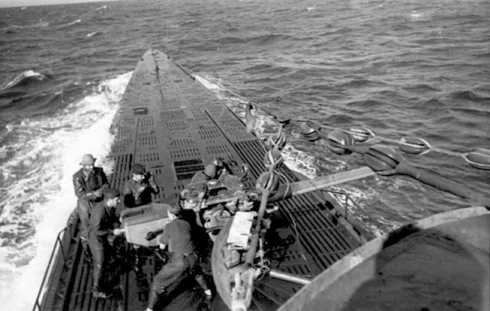
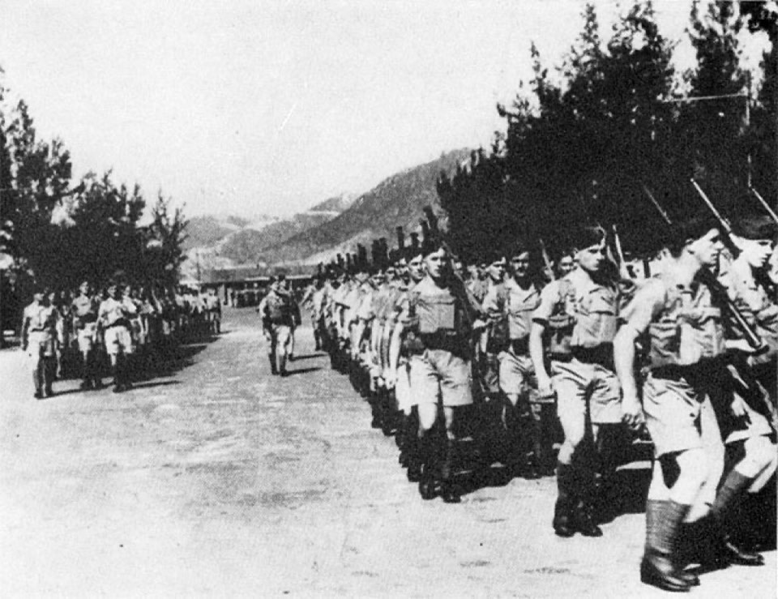
| Key term / person | Meaning |
|---|---|
| Battle of the Atlantic | 1939 to 1945 fight to control shipping routes between North America and Europe |
| Convoy | A group of supply ships travelling together with warships to protect them |
| U-boat | A German submarine |
| Admiral Dönitz | German commander of the U-boats |
| Wolf pack | A group of U-boats that hunted and attacked convoys together |
| Black Pit | The area of the mid-Atlantic that Allied planes could not reach |
| SS Athenia | Passenger ship sunk on the first day of the Battle of the Atlantic |
| SS Caribou | Ferry sunk by a U-boat in Canadian waters in 1942 |
| General Maltby | British general in charge of defending Hong Kong |
| Gin Drinkers' Line | 18 km of defences on the Hong Kong mainland |
| Garrison | The troops stationed to defend a place, or the base itself |
| Pillbox | A small concrete bunker |
| POW | Prisoner of war |
Test tip: For "How did Canada aid in the defence of Hong Kong?" hit 5 points: 1,975 sailed from Vancouver; Maltby could put 3 battalions on the Gin Drinkers' Line; Japan attacked Dec 8, 1941; they fought until overrun; 290 killed, 493 wounded, 3.5+ years as POWs, 550+ never home. Hong Kong also makes a strong PERSAT diary (P: British colony attacked by Japan; S: POW hunger and cruelty; T: pillboxes vs planes).
Tap an answer. Green means right, red means wrong.
1. When did the Battle of the Atlantic take place?
C. The Battle of the Atlantic lasted the whole war, from 1939 to 1945, making it the longest continuous battle of WWII.
2. What was a U-boat?
D. U-boats were German submarines that tried to sink Allied convoys.
3. What was a convoy?
A. Convoys were groups of supply ships protected by warships as they crossed the Atlantic.
4. Which passenger ship was torpedoed by U-30 on September 3, 1939, hours after Britain declared war?
B. U-30 sank the SS Athenia off Ireland on the first day of the Battle of the Atlantic.
5. About how many Canadians died in the Battle of the Atlantic?
C. Of the 70,000+ Allied dead in the Atlantic, 4,600 were Canadian.
6. Where did Atlantic convoys gather in Canada?
D. Convoys gathered in Halifax and Sydney, Nova Scotia, with St. John's, Newfoundland, also sending ships.
7. When did the first convoy, HX-1, leave Halifax?
A. HX-1 left Halifax on September 16, 1939, escorted by British cruisers and two Canadian destroyers.
8. Who was the German commander of the U-boats who used the wolf pack tactic?
D. Admiral Dönitz commanded the U-boats and used wolf packs to attack convoys.
9. How did a wolf pack attack work?
A. In a wolf pack the U-boats spread across convoy routes, gathered when one spotted a convoy, and torpedoed several ships almost at once.
10. What was the Black Pit?
B. Many attacks happened in the Black Pit because Allied planes could not reach it to protect convoys.
11. How many ships did U-boats sink in the Gulf of St. Lawrence and the St. Lawrence River in the 1942 season?
B. U-boats entered the St. Lawrence in May 1942 and sank 21 ships that season.
12. Why was the 1942 U-boat attack in the St. Lawrence a big deal for Canada?
C. The U-boat attacks in 1942 brought war to Canada's inland waters for the first time since the War of 1812.
13. Which ferry was sunk by a U-boat in Canadian waters in 1942?
A. The ferry SS Caribou was one of the 21 ships sunk in the St. Lawrence in 1942.
14. When did 1,975 Canadians sail from Vancouver to defend Hong Kong?
D. The 1,975 Canadians sailed from Vancouver in October 1941, about two months before Japan attacked.
15. Why could British General Maltby put three battalions on the Hong Kong mainland instead of one?
C. With the two Canadian battalions added, Maltby had enough troops to put three battalions on the mainland.
16. What was the Gin Drinkers' Line?
C. The Gin Drinkers' Line was 18 km of trenches and concrete bunkers across rough hills on the mainland.
17. What did Japanese planes attack first at 8 a.m. on December 8, 1941?
B. Japanese planes hit Kai Tak Airport first and easily destroyed the few RAF planes there.
18. Who were the first Canadian casualties in Hong Kong?
A. Japanese planes hit the nearly empty camp at Sham Shui Po, wounding two Royal Canadian Signals men.
19. What were Canada's battle losses in Hong Kong?
D. The Canadians fought until overrun and lost 290 killed and 493 wounded.
20. Which statement about the Canadians captured at Hong Kong is NOT true?
B. The survivors were POWs for more than 3.5 years, not a few weeks.
Lesson 8 · 1942 to 1943
Big question: How did Canadians assist in the Dieppe Raid and the Invasion of Sicily?
The Dieppe Raid of 1942 was a costly Canadian failure that taught lessons for D-Day, and in 1943 Canadians helped invade Sicily and topple Mussolini.
This lesson covers two attacks in Europe. The Dieppe Raid (August 19, 1942) was a test attack on the French coast, mostly by Canadians, and it was a disaster: the Germans were ready, the tanks got stuck, and in about nine hours more than 900 Canadians were killed and nearly 2,000 captured. But the mistakes taught the Allies lessons they used on D-Day. A year later, Canadians took part in Operation Husky, the invasion of Sicily (July 10, 1943), which was Canada's first major offensive of the war. It helped knock Italy out of the war, and Mussolini was overthrown on July 24, 1943.
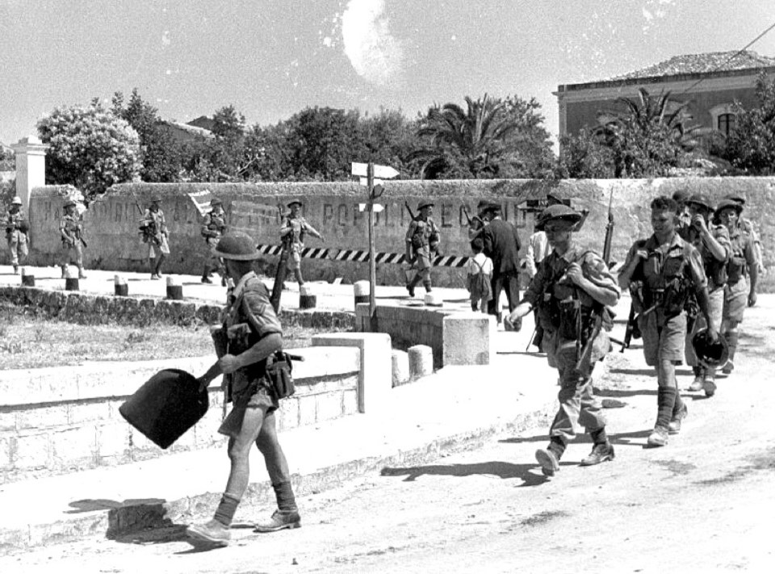
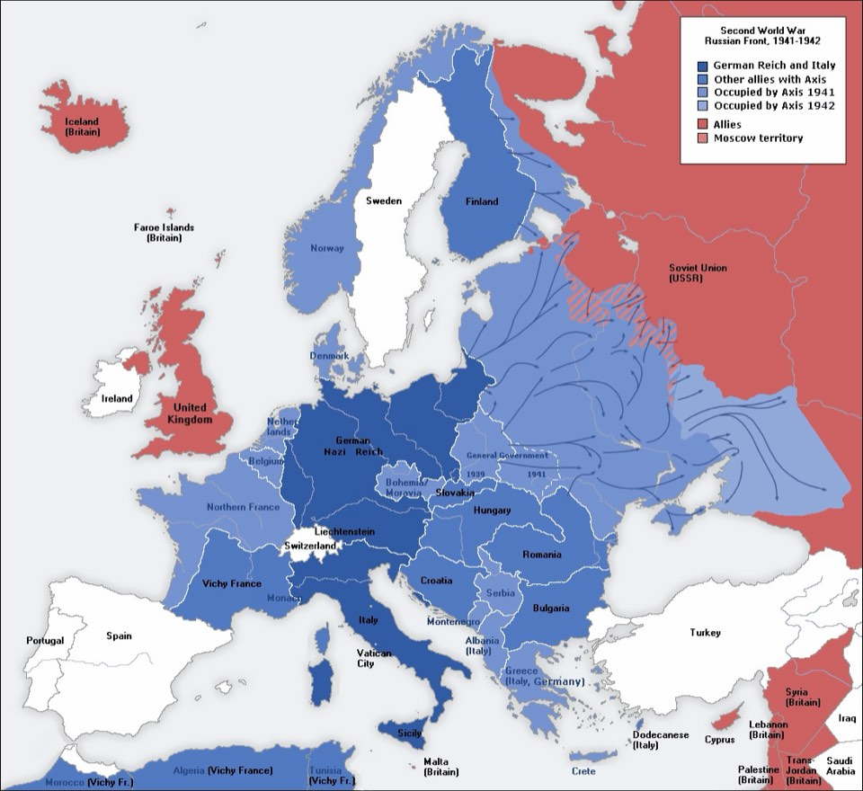
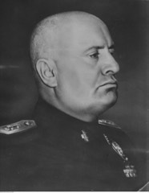
Benito MussoliniItalian dictator, overthrown and arrested July 24, 1943| Key term / person | Meaning |
|---|---|
| Operation Jubilee | Code name for the Dieppe Raid, Aug 19, 1942 |
| Amphibious assault | An attack launched from the sea onto land |
| "Fortress Europe" | Hitler's heavily defended coast of German-controlled Europe |
| Combined operation | Navy, air force and army attacking together |
| Louis Mountbatten | British naval officer who planned the Dieppe Raid |
| Maj.-Gen. J.H. Roberts | Led the 2nd Canadian Infantry Division at Dieppe ("a piece of cake") |
| Lt.-Gen. Harry Crerar | Canadian commander who supported the Dieppe plan |
| Operation Husky | Allied invasion of Sicily, July 10, 1943 |
| Operation Mincemeat | British trick using a dead body with fake plans to fool Germany |
| Axis powers | Germany, Italy and Japan, the countries fighting the Allies |
| Albert Kesselring | German general who said the Germans in Sicily were basically fighting alone |
| Pietro Badoglio | Italy's new leader after Mussolini, who asked the Allies for peace |
Test tip: Dieppe (1942) was a raid and the Army's first battle in Europe; Sicily (1943) was Canada's first major offensive. Dieppe failed (no surprise, too little firepower) but taught lessons used on D-Day. Dieppe photo, PIR: prominent (huge news in Canada), impact (fewer than half came back), reveals how eager Canadians were to fight and how costly poor planning was.
Tap an answer. Green means right, red means wrong.
1. What was the code name for the Dieppe Raid?
A. Operation Jubilee was the code name for the Dieppe Raid of August 19, 1942.
2. When did the Dieppe Raid take place?
D. Canadian troops landed at Dieppe on August 19, 1942.
3. Who planned the Dieppe Raid?
C. Louis Mountbatten, a senior British naval officer and relative of the Royal Family, planned the raid.
4. What was the main goal of the Dieppe Raid?
B. The raid was meant to test an attack from the sea on Hitler's heavily defended coast.
5. About how many of the roughly 6,000 soldiers at Dieppe were Canadian?
B. Dieppe had about 6,000 soldiers: 4,963 Canadians, 1,075 British and 15 French.
6. Which Canadian division did most of the fighting at Dieppe?
C. The 2nd Canadian Infantry Division, led by Maj.-Gen. J.H. Roberts, did most of the fighting.
7. Who told his men "Don't worry men, it'll be a piece of cake" before Dieppe?
B. Roberts said the raid would be a piece of cake, and the line haunted him for years.
8. Which regiment landed on Green Beach on time, in the dark?
A. The South Saskatchewan Regiment reached Green Beach on time while it was still dark.
9. What problem did the Essex Scottish and Royal Hamilton Light Infantry face on Red and White Beaches?
C. The Calgary Tanks arrived late, so the troops in front of the town landed with no tank support.
10. How long did the Dieppe Raid last?
A. The raid was over by midday, after about 9 hours.
11. What were the Canadian losses at Dieppe?
A. Dieppe cost 907 Canadians killed, 2,460 wounded and 1,946 captured.
12. Which of these was NOT a reason the Dieppe Raid failed?
B. The storm happened during the Sicily invasion; Dieppe failed because of no surprise and too little firepower.
13. Why does the Dieppe Raid still matter even though it failed?
D. Planners used the lessons of Dieppe, like the need for surprise and firepower, to plan D-Day.
14. What was Operation Mincemeat?
D. British spies left a dead body with fake plans off Spain for the Germans to find.
15. Because of Operation Mincemeat, where did Germany move troops instead of Sicily?
C. Germany believed the fake plans and moved troops to Sardinia and Corsica.
16. How did the storm before the Sicily invasion help the Allies?
B. The storm nearly delayed the attack, but it fooled the enemy into thinking no attack was coming.
17. Why is Sicily called Canada's first major offensive of WWII, even though Dieppe came first?
D. Dieppe was a raid, so Operation Husky in 1943 counts as Canada's first major offensive.
18. When did Operation Husky, the invasion of Sicily, begin?
C. Operation Husky began before sunrise on July 10, 1943.
19. How many Allied troops landed in Sicily over 3 days?
D. Over 3 days, 3,000+ ships landed 150,000+ troops, covered by 4,000+ aircraft.
20. After Mussolini was overthrown on July 24, 1943, who became Italy's new leader and asked the Allies for peace?
A. Pietro Badoglio replaced Mussolini, asked for peace and pulled out Italian troops.
Lesson 9 · 1944
Big question: How did Canadians assist in D-Day Normandy?
On June 6, 1944, 14,000+ Canadians stormed Juno Beach in the biggest sea invasion ever, then fought all summer until Normandy was won on August 21.
D-Day, June 6, 1944, was the largest invasion from the sea in history, when the Allies landed in Normandy, France, to start freeing Western Europe. This lesson explains how the Allies fooled Germany into expecting the attack somewhere else (Pas de Calais), and Canada's role: about 14,000 Canadians landed at Juno Beach, supported by Canadian ships and air squadrons. It then follows the long, bloody Battle of Normandy that summer, which ended when Canadians helped close the Falaise Gap in August 1944, and explains the cost in Canadian casualties.
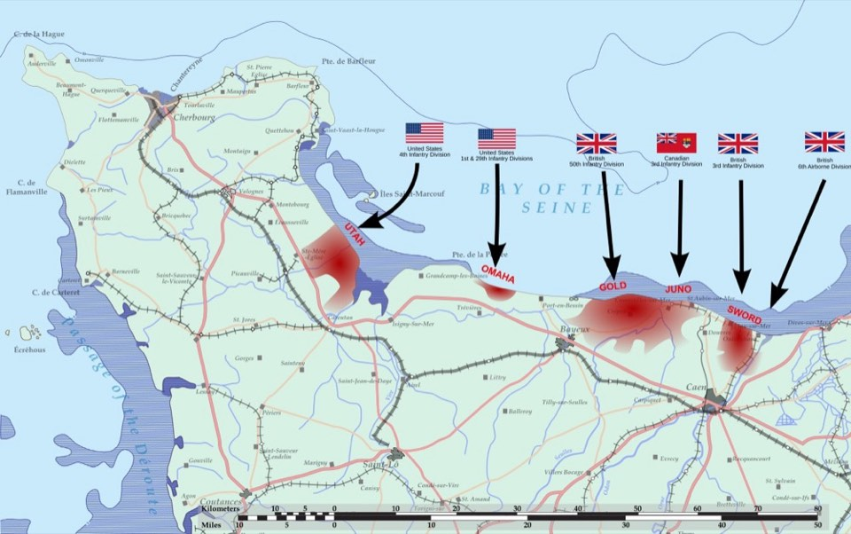
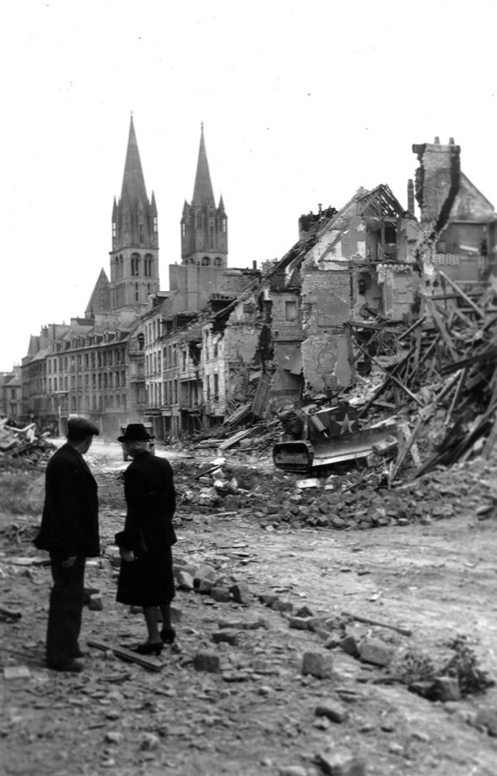
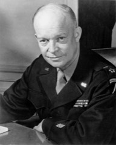
Dwight EisenhowerUS general, supreme commander of the D-Day invasionNot in your notes The other four beach names (Utah, Omaha, Gold, Sword) are extra. You only need Juno.
| Key term / person | Meaning |
|---|---|
| D-Day | The day an attack begins. Here, June 6, 1944 |
| Operation Overlord | Code name for the Allied invasion of Normandy |
| Juno Beach | The Normandy beach Canadians attacked |
| Amphibious / seaborne invasion | An attack launched from the sea onto land |
| Atlantic Wall | Hitler's defences along the coast of Europe |
| Second front | A new area of fighting, here in Western Europe |
| Pas de Calais | Where Germany expected the invasion (shortest crossing) |
| Pincer movement | Attacking from two sides to trap the enemy |
| Falaise Gap | Escape route closed by Canadian, Polish and US troops on Aug 20, 1944 |
| Panzer | German armoured (tank) units |
| Dwight Eisenhower | US general, supreme commander of the invasion |
| Bernard Montgomery | British general in Normandy |
| Lockie Fulton | Royal Winnipeg Rifles major; Carpiquet was his "worst day of the entire war" |
Test tip: Memorize Canada's D-Day number code: 14,000 soldiers, 110 ships, 10,000 sailors, 15 squadrons. Keep casualties apart: D-Day itself was 1,074 Canadian casualties (359 killed); all of Normandy was 18,700+ (5,000+ killed). Germany expected the attack at Pas de Calais. Juno photo, PIR: prominent (largest sea invasion in history), impact (14,000 Canadians landed, 5,000+ died in Normandy), reveals young, untested soldiers doing a huge job.
Tap an answer. Green means right, red means wrong.
1. What was the Atlantic Wall?
B. Hitler built the Atlantic Wall to defend the coast of Europe.
2. Which leader pressured Britain and the US to open a second front by invading France?
A. Soviet leader Joseph Stalin pushed Britain and the US to open a second front.
3. Who was the supreme commander of the D-Day invasion?
D. Eisenhower became supreme commander in summer 1943.
4. What was the code name for the Allied invasion of Normandy?
B. Operation Overlord was the Allies' largest seaborne invasion in history.
5. Why did Germany expect the invasion at Pas de Calais?
D. Pas de Calais was the shortest crossing, so Germany expected the attack there.
6. How did the Allies trick Germany about where they would land?
C. The fake army in southeast England pointed Germany at Pas de Calais while the real army gathered in the southwest.
7. What does "casualty" mean?
C. A casualty includes the killed, wounded, captured and missing, so casualty numbers are bigger than death numbers.
8. Which Normandy beach did the Canadians attack on D-Day?
A. Canadians attacked Juno Beach; Green, Blue and Red were Dieppe beaches.
9. Which Canadian division attacked Juno Beach?
B. The 3rd Canadian Infantry Division, most with no combat experience, attacked Juno Beach.
10. About how many Canadians landed at Juno Beach?
B. About 14,000 Canadians landed at Juno Beach.
11. What did the Royal Canadian Navy send for D-Day?
C. The Royal Canadian Navy sent 110 ships and 10,000 sailors.
12. How many RCAF squadrons of fighters and fighter-bombers took part in D-Day?
A. The RCAF sent 15 squadrons of fighters and fighter-bombers.
13. What did the 1st Canadian Parachute Battalion do on D-Day?
C. The 1st Canadian Parachute Battalion parachuted behind German lines with British and US paratroopers.
14. Which Royal Winnipeg Rifles major called the July 4 attack on Carpiquet Airport his "worst day of the entire war"?
B. Major Lockie Fulton was his company's only surviving officer after Carpiquet.
15. Which of these was NOT a lesson from Dieppe used on D-Day?
A. D-Day used surprise, deception and huge air and sea support, the lessons Dieppe taught.
16. What is a pincer movement?
D. At Falaise, Allied forces pushed from the north and circled from the west to trap the Germans.
17. Which forces closed the Falaise Gap on August 20, 1944, trapping the German army?
D. American, Canadian and Polish forces closed the gap on August 20, 1944.
18. When did the Battle of Normandy end?
C. The Battle of Normandy ended on August 21, 1944, after the Falaise Gap closed.
19. How many Canadian casualties were there on D-Day itself?
A. D-Day alone cost 1,074 Canadian casualties, 359 of them killed; 18,700+ was the total for all of Normandy.
20. Why does D-Day show that Canada had grown as a fighting nation?
D. Having its own beach, paratroopers, ships and squadrons proved Canada had grown as a fighting nation.
Lesson 10 · 1933 to 1945
Big question: How did the Nazis brainwash the German people to support the Final Solution?
From 1933 the Nazis took Jewish rights away one step at a time, using blame, propaganda and fear, until about 6 million Jews were murdered.
The Holocaust was the Nazi murder of about 6 million Jews, along with millions of others. This lesson shows how it happened step by step. When Hitler took power in 1933, the Nazis used propaganda to blame Jews for Germany's problems, took away their rights with laws like the Nuremberg Laws (1935), and attacked Jewish homes, shops and synagogues on Kristallnacht (1938). During the war this turned into mass murder, first by killing squads and then in death camps in Poland like Auschwitz, as part of the Nazi plan they called the Final Solution.
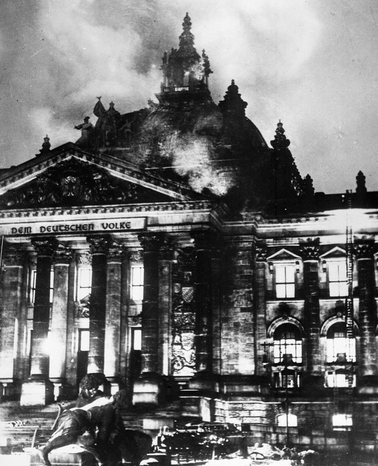
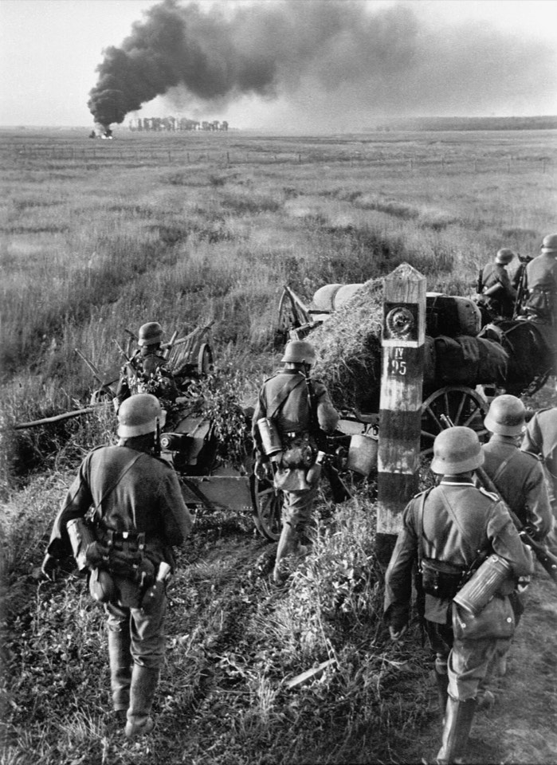
| Key term / person | Meaning |
|---|---|
| Holocaust | The Nazi murder of about 6 million Jews during WWII |
| Final Solution | The Nazi plan to kill all Jews in Europe |
| Propaganda | Information used to make people believe something |
| Indoctrinate | To teach someone to accept ideas without questioning them |
| Scapegoat | A group unfairly blamed for problems |
| Der Stürmer | Nazi newspaper; motto "The Jews are our misfortune" |
| Reichstag Fire Decree | Feb 28, 1933: took free speech, press and assembly from Nazi opponents |
| Enabling Act | Mar 23, 1933: gave Hitler dictator powers |
| Concentration camp | Prison camp where people were held, forced to work and often died |
| Death camp | A camp built mainly to murder people |
| Nuremberg Laws | 1935 laws that took away Jews' citizenship and rights |
| Kristallnacht | "Night of Broken Glass," Nov 9, 1938 attack on Jewish homes, shops and synagogues |
| Einsatzgruppen | Nazi killing squads that followed the army |
| Reinhard Heydrich | Helped organize the Final Solution |
Test tip: Know the Timeline of Persecution. Enabling Act (1933) = power for Hitler; Nuremberg Laws (1935) = rights taken from Jews. Trick date: Dachau opened March 22, one day before the Enabling Act (March 23).
Tap an answer. Green means right, red means wrong.
1. When did Hitler become Chancellor of Germany?
A. Hitler became Chancellor on January 30, 1933, and the Nazi Party took over Germany.
2. Hitler falsely claimed Jews "stabbed Germany in the back" in WWI. What does it mean to make a group a scapegoat?
B. A scapegoat is a group unfairly blamed for problems, as the Nazis did to Jews.
3. Besides Jews, which group did the Nazis NOT list among the people they called "undesirables"?
B. The Nazis targeted communists, Roma, disabled people, gay people and intellectuals; the SS were Nazis themselves.
4. What was Der Stürmer?
D. Der Stürmer was a Nazi newspaper with the motto "The Jews are our misfortune."
5. What did the Reichstag Fire Decree of February 28, 1933 do?
A. The Reichstag Fire Decree removed free speech, press and assembly for Nazi opponents.
6. What opened at Dachau on March 22, 1933?
C. The SS opened the first concentration camp at Dachau one day before the Enabling Act.
7. What did the Enabling Act of March 23, 1933 do?
A. The Enabling Act gave Hitler the power to make any law, making him a dictator.
8. Which of these did NOT happen to Jews in Germany between April and October 1933?
B. Jews lost their citizenship later, under the Nuremberg Laws of 1935.
9. Why did the Nazis set up Nazi schools?
A. Nazi schools were used to indoctrinate, or brainwash, children.
10. What did the Nuremberg Laws of September 15, 1935 do?
D. Under the Nuremberg Laws, Jews lost citizenship and could not marry or have relationships with non-Jews.
11. What happened on Kristallnacht, the "Night of Broken Glass," on November 9, 1938?
B. On Kristallnacht hundreds of synagogues and Jewish shops were attacked, and 20,000 Jews were arrested and sent to camps.
12. After Kristallnacht, what were Jews forced to do?
C. The Nazis forced Jews to pay 1 billion marks for the damage done to them.
13. What event in 1941 marked the start of the mass murder of Jews?
D. When Germany invaded the Soviet Union in 1941, the mass murder of Jews began.
14. Who were the Einsatzgruppen?
B. The Einsatzgruppen followed the German army and murdered Jews in mass shootings.
15. What happened at Babi Yar, near Kyiv, Ukraine?
A. At Babi Yar the Nazis murdered 33,000 Jews in two days.
16. Who helped organize the Final Solution, the Nazi plan to murder all Jews in Europe?
C. Reinhard Heydrich helped organize the Final Solution using death camps with gas chambers.
17. How many death camps did the Nazis build, and where were they?
D. There were 6 death camps, all in Poland; the largest were Auschwitz, Treblinka and Belzec.
18. Why did most people stay quiet about the death camps?
C. Secrecy and distance, plus fear of being sent to the camps, kept most people quiet.
19. What did the Nazis do in January 1945 as the Soviets pushed them out of Poland?
D. The Nazis tried to hide their crimes by destroying evidence and forcing prisoners on death marches.
20. Why is the exact number of Jews murdered in the Holocaust unknown?
C. Because bodies were burned, the count comes from Nazi documents, which estimate about 6 million Jews murdered from 1941 to 1945.
Lesson 11 · 1932 to 1948
Big question: How did the Jewish genocide change the way we look at humanity?
Hitler was appointed, not elected, and after the Holocaust the world answered with the Nuremberg Trials, the Genocide Convention, the UDHR and Israel.
This lesson looks at how Hitler got power and how the world responded after the Holocaust. Hitler was never elected by a majority: the Nazis' best result in a free election was 37%, and President Hindenburg appointed him Chancellor in 1933. It also explains the Nazis' racist beliefs about an Aryan master race. After the war, top Nazi leaders were put on trial at Nuremberg, and the world created new protections: Raphael Lemkin invented the word genocide, and in 1948 the United Nations created the Universal Declaration of Human Rights and the Genocide Convention, the same year Israel was created.
| Key term / person | Meaning |
|---|---|
| Genocide | Deliberate killing of a group because of race, religion or nationality |
| Aryan race | The Nazis' false idea of a superior "pure" German race |
| Lebensraum | "Living space": Nazi plan to take land in Eastern Europe |
| Lebensborn | Nazi breeding program to grow the "pure" population |
| SA (Brownshirts) | The Nazis' violent street army |
| Nuremberg Trials | Trials of Nazi leaders for war crimes, 1945 to 1946 |
| Crimes against humanity | Terrible acts against civilians, like mass murder |
| UDHR | Universal Declaration of Human Rights, created by the UN in 1948 |
| Adolf Hitler | Nazi leader and dictator of Germany |
| Heinrich Himmler | Head of the SS, which ran the death camps |
| Joseph Goebbels | Head of Nazi propaganda |
| Paul von Hindenburg | German president who appointed Hitler Chancellor |
| Raphael Lemkin | Polish-Jewish lawyer who created the word "genocide" (1944) |
Test tip: "Hitler was elected Chancellor" is false: the Nazis peaked at 37% and Hindenburg appointed him. Remember the 1948 triple: UDHR, Israel and the Genocide Convention.
Tap an answer. Green means right, red means wrong.
1. What was the Nazis' best result in a free election?
D. The Nazis peaked at 37% in July 1932 and never had majority support.
2. How did Hitler become Chancellor on January 30, 1933?
D. Hitler was not voted in; Hindenburg appointed him Chancellor.
3. Who beat Hitler in the 1932 presidential election?
D. Hitler lost the 1932 presidential election to Paul von Hindenburg.
4. Why did powerful conservative politicians push for Hitler to become Chancellor?
D. Conservatives thought they could control Hitler, and they were wrong.
5. What were emergency decrees?
C. Emergency decrees let the Nazis make orders without going through parliament.
6. Who were the SA, or "Brownshirts"?
A. The SA used violence and intimidation to help the Nazis destroy democracy.
7. What did the Nazi goal of Lebensraum mean?
C. Lebensraum means living space, the plan to take land in Eastern Europe.
8. What was Lebensborn?
C. Lebensborn tried to grow the "pure" population through breeding programs and kidnapping.
9. Which of these was NOT one of the 5 Nazi goals for the "Aryan race"?
B. The Nazis wanted to invade Eastern Europe for Lebensraum, not make peace with it.
10. What was the "Aryan race"?
B. The Aryan race was a false Nazi idea used to justify persecution.
11. When were the Nuremberg Trials held?
C. The Nuremberg Trials ran from November 20, 1945 to October 1, 1946.
12. At the Nuremberg Trials, how many top Nazi leaders were sentenced to death?
A. The results were 12 death sentences, 3 life in prison, 4 given 10 to 20 years and 3 not guilty.
13. Why were Hitler, Himmler and Goebbels not put on trial at Nuremberg?
B. The main Holocaust planners killed themselves before they could be tried.
14. Why do the Nuremberg Trials matter?
A. The trials showed that leaders can be held responsible for crimes against humanity.
15. Who created the word "genocide" in 1944?
A. Raphael Lemkin created the word "genocide" in 1944.
16. Where does the word "genocide" come from?
A. Genocide combines the Greek genos, meaning race or tribe, with the Latin -cide, meaning killing.
17. What is the UDHR?
D. The UN created the UDHR in 1948 to protect every person's rights and dignity.
18. What did the UN Genocide Convention of 1948 do?
B. The 1948 Genocide Convention made genocide a crime under international law.
19. What happened in 1948 for many Jewish survivors who had lost their homes?
C. In 1948 Israel was created in part of British-controlled Palestine, leading to ongoing conflict there.
20. What was Joseph Goebbels's role in Nazi Germany?
B. Goebbels ran Nazi propaganda; Himmler was head of the SS.
Lesson 12 · 1944 to 1945
Big questions: 1. What was life like in the Jewish concentration camps? 2. How did Canadians help in liberating the Netherlands?
Soviets freed Auschwitz on January 27, 1945, while Canadians cleared the Scheldt and freed the Netherlands, losing 7,600+ lives before V-E Day, May 8, 1945.
This lesson covers the end of the war in Europe. Canadians fought to clear the Scheldt estuary so supply ships could reach the port of Antwerp, then spent the winter and spring of 1945 freeing the Netherlands, where people were starving during the Hunger Winter. Over 7,600 Canadians died there, and the Dutch still thank Canada today. Meanwhile, as the Soviets advanced, the Nazis tried to hide their crimes and forced prisoners on death marches, and Soviet soldiers liberated Auschwitz on January 27, 1945. Germany surrendered on V-E Day, May 8, 1945.
| Key term / person | Meaning |
|---|---|
| Auschwitz | The largest Nazi death and concentration camp, in Oświęcim, Poland |
| Death march | A forced walk of prisoners in which many died |
| Liberation | Freeing people or a place from enemy control |
| Battle of the Bulge | Germany's last major attack in the West (Ardennes Offensive), Dec 1944 to Jan 1945 |
| Operation Market Garden | Failed Sept 1944 air attack at Arnhem to cross the Rhine |
| Scheldt estuary | The river mouth connecting Antwerp to the sea |
| Hunger Winter | The 1944 to 45 famine in the Netherlands |
| V-E Day / V-J Day | Victory in Europe (May 8, 1945) / Victory over Japan (August 1945) |
| Harry Crerar | General who led the First Canadian Army |
| Guy Simonds | Lt.-Gen. who led the Battle of the Scheldt |
| Ivan Martynushkin | Soviet soldier at Auschwitz: "We knew nothing" |
Test tip: Don't mix up who freed what: Soviets liberated Auschwitz (Jan 27, 1945); Canadians liberated the Netherlands. Know Canada's 3 roles in the Bulge: paratroopers, guarding Antwerp, RCAF. Liberation photo, PIR: Auschwitz (44,000 shoes, shock around the world, reveals Nazi cruelty and cover-up); Netherlands (7,600+ dead, Hunger Winter, Dutch still thank Canada).
Tap an answer. Green means right, red means wrong.
1. Which army was given the job of freeing the Netherlands from September 1944 to April 1945?
D. The First Canadian Army was given the job of freeing the Netherlands.
2. What was Operation Market Garden?
C. Operation Market Garden tried to cross the Rhine at Arnhem in September 1944 and failed.
3. Why did the Allies need to clear the Scheldt estuary?
D. The Allies needed a big port, and ships could not reach Antwerp until the Scheldt was cleared.
4. Who led the Battle of the Scheldt?
B. Guy Simonds led the Scheldt battle, while Harry Crerar led the First Canadian Army.
5. What made fighting at the Scheldt so hard?
D. Soldiers attacked from small boats and along roads under fire on flooded land below sea level.
6. How many Allied soldiers were killed, wounded or missing at the Scheldt?
D. The Battle of the Scheldt cost 13,000 Allied casualties.
7. When did the first Allied supply ships reach Antwerp?
A. The estuary was cleared on November 8, and the first supply ships reached Antwerp on November 28.
8. Where was Auschwitz, the largest Nazi death and concentration camp?
A. Auschwitz was in Oświęcim, Poland.
9. How did the Nazis try to cover up their crimes at Auschwitz in late 1944?
C. The Nazis destroyed gas chambers, buildings and records, and murdered most Jewish prisoners who worked in the gas chambers.
10. What was the Battle of the Bulge?
C. The Battle of the Bulge, December 1944 to January 1945, was Germany's last major attack in the West.
11. Which of these was NOT one of Canada's roles in the Battle of the Bulge?
A. Canada helped with paratroopers, guarding Antwerp and the RCAF; the 1st Canadian Parachute Battalion was the only Canadian ground unit sent in.
12. Up to how many prisoners died on the death marches from Auschwitz in January 1945?
D. The SS forced prisoners to walk west in freezing weather, and up to 15,000 died.
13. About how many very sick prisoners were left behind at Auschwitz with no food, fuel or water?
B. About 9,000 very sick prisoners were left behind when the SS forced the others to march.
14. When was Auschwitz liberated?
C. Auschwitz was liberated on January 27, 1945.
15. Who liberated Auschwitz?
B. Soviet scouts found Auschwitz by accident; it was not in their orders.
16. What did the liberators find at Auschwitz?
C. The liberators found 44,000 pairs of shoes and other belongings, plus piles of ash and starving prisoners.
17. Which Soviet soldier said "We knew nothing" but remembered the prisoners' faces, "especially their eyes"?
B. Ivan Martynushkin was one of the Soviet soldiers who found Auschwitz.
18. What was the Hunger Winter?
A. During the Hunger Winter millions of Dutch starved, and Canadians brought food, fuel and aid.
19. How many Canadians died freeing the Netherlands?
B. More than 7,600 Canadians died freeing the Netherlands, and the Dutch still thank Canada.
20. What happened on V-E Day, May 8, 1945?
A. V-E Day, Victory in Europe, was the day Germany surrendered.
Extra · 1939 to 1945
Big question: How did the Canadian government use propaganda to get Canadians to support the war effort? Not in your notes
In WWII the Canadian government used posters, films and radio to raise money, recruit men and women, save resources and control information.
Propaganda is information used to make people believe or do something, usually by showing only one side and playing on emotions. This extra lesson explains how Canada's government used it at home during WWII: posters, films from the National Film Board and radio convinced people to lend money through Victory Bonds, join the military or work in factories, save resources through rationing and salvage, and keep quiet about secrets. It also shows how women's roles changed, using Ronnie, the Bren Gun Girl, as the famous example of women's war work.
Not in your notes Your notes skip this topic, but review question 8 asks it. Check with your teacher if anything differs from class.
| Key term / person | Meaning |
|---|---|
| Propaganda | Information used to make people believe something, usually one-sided |
| Victory Bond | A citizen's loan to the government for the war, paid back with interest |
| War Savings Stamps | Small stamps children could buy to help fund the war |
| Rationing | Limiting how much of a product each person can buy |
| Salvage | Collecting used materials (metal, rubber, fat) to reuse for the war |
| Censorship | When the government blocks or cuts information |
| Home front | Civilians and their work at home during a war |
| Wartime Information Board | Government office (1942) managing war information |
| National Film Board (NFB) | Made war films and newsreels, created 1939 |
| CWAC / WRCNS | Canadian Women's Army Corps (1941) / Women's Royal Canadian Naval Service, "Wrens" (1942) |
| Ronnie, the Bren Gun Girl | Veronica Foster, factory worker who became the face of women's war work (1941) |
Test tip: Give at least three ways: Victory Bonds (money), recruitment posters for men and women (people), and rationing/salvage (resources). Name Ronnie the Bren Gun Girl as an example for full marks.
Tap an answer. Green means right, red means wrong.
1. What is propaganda?
C. Propaganda is information meant to make people believe something, and it usually shows only one side.
2. Which of these is NOT how propaganda usually works?
A. Propaganda is usually one-sided, so it does not show all sides fairly.
3. When was the National Film Board (NFB) created?
A. The NFB was created in 1939.
4. Which war film series did the NFB show in theatres?
A. The NFB made war films and newsreels like Canada Carries On.
5. What did the Wartime Information Board (1942) do?
B. The Wartime Information Board managed war information and kept track of public opinion.
6. How did CBC radio help with wartime propaganda?
C. CBC radio carried war news and messages right into Canadian homes.
7. What was a Victory Bond?
C. Buying a Victory Bond meant lending money to the government, which paid it back with interest.
8. What did Victory Bond money pay for?
D. Victory Bond money paid for weapons, ships, planes and soldiers.
9. What could children buy to help fund the war?
D. Children could buy small War Savings Stamps to help pay for the war.
10. Why did Victory Bond posters show the enemy threatening Canadian homes and families?
B. Showing the enemy threatening families made buying bonds feel like a way to protect them.
11. What was the CWAC, created in 1941?
B. The CWAC was the Canadian Women's Army Corps, one of the first women's military units.
12. Who were the "Wrens"?
C. The Wrens were the Women's Royal Canadian Naval Service, created in 1942.
13. Who was Ronnie, the Bren Gun Girl?
A. Ronnie was Veronica Foster, a real factory worker who became the face of women's war work in 1941.
14. Why were Ronnie the Bren Gun Girl's photos used?
D. Her photos encouraged more women to take factory jobs making weapons and supplies.
15. When did rationing begin in Canada, and how did it work?
B. Rationing began in 1942, using ration book coupons, and gasoline was also limited.
16. What did salvage campaigns collect?
C. Salvage campaigns collected used materials to turn into war materials.
17. What was censorship during the war?
A. Soldiers' letters were read and anything that could help the enemy was cut.
18. What did posters warning that "careless talk could cost lives" want people to do?
D. These posters warned that talking carelessly could leak secrets to the enemy.
19. What is the "home front"?
B. The home front means civilians and the work they do at home during a war.
20. Using PIR, what does a WWII Canadian poster reveal?
D. Posters reveal the values the government promoted and show women's roles changing.
What was prohibition?
Why was prohibition enacted, and who was responsible for it?
What were some outcomes of prohibition?
When did prohibition end?
What was Black Tuesday, and how did it happen?
Why was there a stock market crash?
What was buying on margin?
How did the stock market crash affect Canadians?
What was the Statute of Westminster?
Why was it created?
Who were the important individuals in the creation of this Statute?
How did this Statute affect Canada and Canadians?
What was the On-to-Ottawa Trek?
Why did it occur, and what were the goals?
Who was involved?
How did the On-to-Ottawa Trek conclude?
How was Hitler allowed to gain power?
Why was he loved by the German people?
How did Hitler break the Treaty of Versailles?
Why did the other world powers allow Hitler to break the Treaty of Versailles?
When and how did WWII begin?
What happened after the outbreak of war?
What was the Miracle at Dunkirk?
What was the Battle of Britain?
What was Operation Barbarossa?
How did Canada aid in the defence of Hong Kong?
What is D-Day?
What is V-E Day?
How did Canada contribute to D-Day?
What happened after D-Day?
What was the conclusion of D-Day?
What was the Battle of the Bulge?
How was the Nazi death camp (Auschwitz) liberated?
What happened to Mussolini and Hitler?
What is propaganda?
How did the Canadian government use propaganda during WWII? Not in your notes
In which ways did the Canadian government try to get Canadians to support the war effort? Not in your notes
What was the Timeline of Persecution leading up to the Holocaust?
What were the Enabling Act and the Nuremberg Laws?
How did the Nazi Party develop the Final Solution?
What were some of the consequences in the aftermath of the Holocaust?
| Person | Why they matter |
|---|---|
| Nellie McClung | Women's rights leader and major supporter of prohibition. |
| Freddie Keppard | Cornet player, Original Creole Orchestra (New Orleans); brought jazz to Western Canada on tours in 1914, 1916 and as late as 1921. |
| James "Slap Rags" White and Millard Thomas | American jazz pianists who settled in Montreal; the Black community of St-Henri built a jazz scene lasting about 35 years. |
| Arthur Balfour | British PM (1902 to 1905), Foreign Secretary (1916 to 1919). Balfour Report (1926): dominions equal to Britain. Balfour Declaration (1917): Jewish homeland in Palestine. |
| R.B. Bennett | Canada's Depression PM (1930 to 1935). Stopped the On-to-Ottawa Trek, mocked with "Bennett Buggies," party fell from 134 seats to 69 in 1935. |
| Arthur "Slim" Evans | Leader of the On-to-Ottawa Trek (1935); called Bennett a liar and was escorted out. |
| Paul von Hindenburg | German president; beat Hitler in the 1932 election, then appointed him Chancellor on January 30, 1933. |
| Adolf Hitler | Nazi dictator. Broke the Treaty of Versailles, invaded Poland September 1, 1939, main Holocaust planner. Killed himself before trial (Not in your notes Berlin bunker, April 30, 1945). |
| Neville Chamberlain | British PM who appeased Hitler; signed the Munich Agreement (September 29, 1938): "peace for our time." |
| Édouard Daladier | French PM who signed the Munich Agreement with Chamberlain. |
| Benito Mussolini | Fascist dictator of Italy; wrote the Munich plan. Overthrown and arrested July 24, 1943. Not in your notes Executed by partisans April 28, 1945. |
| Joseph Stalin | Soviet communist leader. Nazi-Soviet Pact (August 23, 1939); invaded in Barbarossa (1941); pushed for a second front in France. |
| Winston Churchill | British PM from May 10, 1940. After Dunkirk: "We shall fight on the beaches... we shall never surrender." |
| Admiral Karl Dönitz | German U-boat commander in the Battle of the Atlantic; used "wolf pack" attacks on convoys. Not in your notes Hitler's successor; led Germany's surrender in May 1945. |
| General Maltby | British general defending Hong Kong (1941); Canadians let him put three battalions on the Gin Drinkers' Line. |
| Louis Mountbatten | Senior British naval officer (Royal Family relative) who came up with the Dieppe Raid as a "combined operation." |
| Harry Crerar | Canadian general; backed the Dieppe plan wanting action; later led the First Canadian Army, including freeing the Netherlands. |
| J.H. Roberts | Major-General, 2nd Canadian Infantry Division at Dieppe: "Don't worry men, it'll be a piece of cake." |
| Albert Kesselring | German general in Italy; said the Italian army was so weak in Sicily that Germans fought basically alone. |
| Pietro Badoglio | Took over Italy after Mussolini fell (July 1943); asked the Allies for peace and pulled out Italian troops. |
| Dwight Eisenhower | American general, supreme commander of Operation Overlord (D-Day). |
| Bernard Montgomery | British general; with Eisenhower expected to cross France in weeks after D-Day. It took all summer. |
| Major Lockie Fulton | Royal Winnipeg Rifles officer at Juno Beach; only officer in his company to survive Carpiquet (July 4, 1944), his "worst day of the entire war." |
| Guy Simonds | Canadian Lt.-General who led the Battle of the Scheldt (October to November 1944), opening Antwerp. |
| Reinhard Heydrich | Nazi leader who helped organize the Final Solution and designed death camps with huge gas chambers. |
| Heinrich Himmler | Head of the SS, ran the death camps; one of three main Holocaust planners; killed himself before trial. |
| Joseph Goebbels | Head of Nazi propaganda; one of three main Holocaust planners; killed himself before trial. |
| Raphael Lemkin | Polish-Jewish lawyer who created the word "genocide" in 1944. |
| Ivan Martynushkin | Soviet soldier at Auschwitz liberation (January 27, 1945): "We knew nothing"; remembered prisoners' eyes. |
| Georgi Elisavetskii | One of the first Soviets into Auschwitz: prisoners "fell on their knees, kissed the flaps of our overcoats." |
| Veronica Foster ("Ronnie the Bren Gun Girl") | Not in your notes Toronto Bren gun factory worker; Canada's 1941 poster symbol of women's war work. |
| 1901 | PEI is the first province to ban alcohol province-wide. |
| 1904 | A west-end Toronto neighbourhood bans alcohol. |
| 1914, 1916, 1921 | Original Creole Orchestra (Freddie Keppard) tours Western Canada, bringing jazz north. |
| 1917 | Balfour Declaration: Britain supports a Jewish homeland in Palestine. |
| 1919 | Treaty of Versailles leaves Germany ruined. |
| 1920s | Alcohol illegal across Canada; flappers and jazz define the Roaring Twenties. |
| 1922 | 4.6 million cars sold. |
| 1926 | Balfour Report: dominions equal to Britain. |
| Oct 29, 1929 | Black Tuesday: crash starts the Great Depression. |
| By 1930 | Alcohol legal again everywhere in Canada except PEI. |
| 1930 | R.B. Bennett becomes PM (to 1935). |
| 1931 | Car exports fall to 13,000 (from 102,000 in 1929). |
| Dec 11, 1931 | Statute of Westminster: Canada makes its own laws. |
| 1932 | Hitler loses election to Hindenburg; Nazis peak at 37% (July), drop to about 33% (November). |
| 1933 | Worst Depression year: 27% unemployed. USA ends prohibition. |
| Jan 30, 1933 | Hindenburg appoints Hitler Chancellor. |
| Feb 1933 | Der Stürmer spreads anti-Jewish propaganda. |
| Feb 28, 1933 | Reichstag Fire Decree ends free speech, press, assembly. |
| Mar 22, 1933 | First concentration camp opens at Dachau. |
| Mar 23, 1933 | Enabling Act: Hitler gets dictator powers. |
| Apr to Oct 1933 | Jews banned from schools and many jobs; boycotts of Jewish businesses. |
| Apr 1935 | Relief camp workers go on strike. |
| Jun 14, 1935 | On-to-Ottawa trekkers reach Regina. |
| Jul 1, 1935 | Regina Riot: 1 officer killed, 45 wounded, 130 arrested. |
| Sep 15, 1935 | Nuremberg Laws strip Jews of German citizenship. |
| 1935 | Bennett's party loses election: 134 seats to 69. |
| Mar 7, 1936 | German troops enter the Rhineland. |
| 1936 | Spanish Civil War begins; Hitler joins the Fascist side. |
| 1938 | Hitler annexes Austria. |
| Sep 29, 1938 | Munich Agreement gives Hitler the Sudetenland; "peace for our time." |
| Nov 9, 1938 | Kristallnacht, "Night of Broken Glass." |
| Mar 1939 | Germany takes the rest of Czechoslovakia. |
| Aug 23, 1939 | Nazi-Soviet Pact (Treaty of Non-Aggression). |
| Sep 1, 1939 | Germany invades Poland. WWII begins. |
| Sep 3, 1939 | Britain and France declare war. U-30 sinks the SS Athenia; Battle of the Atlantic begins (to 1945). |
| Sep 10, 1939 | Canada declares war, its first on its own. |
| Sep 16, 1939 | First convoy, HX-1, leaves Halifax. |
| Sep 29, 1939 | Germany and USSR divide Poland. |
| Dec 1939 | First Canadian soldiers sail for Europe. |
| May 10, 1940 | Churchill becomes British PM. |
| May 26 to Jun 4, 1940 | Dunkirk: 338,226 soldiers rescued. |
| Jun 4, 1940 | Churchill's "never surrender" speech. |
| Jun 22, 1940 | Germany controls Denmark, Norway, Belgium, Luxembourg, the Netherlands and France. |
| Jul 10 to Oct 31, 1940 | Battle of Britain. |
| Aug 26, 1940 | No. 1 Fighter Squadron: first RCAF unit to fight enemy planes. |
| Apr 6, 1941 | Nazis invade Greece and Yugoslavia. |
| Jun 22, 1941 | Operation Barbarossa: invasion of the USSR. |
| 1941 | Babi Yar: 33,000 Jews murdered in two days by the Einsatzgruppen. |
| Oct 1941 | 1,975 Canadians sail from Vancouver for Hong Kong. |
| Dec 8, 1941 | Japan attacks Hong Kong. |
| Dec 24, 1941 | Japanese soldiers overrun a hospital, killing wounded Canadians. |
| Early 1942 | Mass gassings begin in death camps. |
| May 1942 | U-boats enter the St. Lawrence; 21 ships sunk that season, including the SS Caribou. |
| Aug 19, 1942 | Dieppe Raid: 907 Canadians killed, 1,946 captured. |
| Summer 1943 | Allies agree to invade France the next year. |
| Jul 10, 1943 | Operation Husky: Sicily, Canada's first major offensive. |
| Jul 24, 1943 | Mussolini overthrown and arrested. |
| 1944 | Lemkin creates the word "genocide." |
| Jun 6, 1944 | D-Day: 14,000+ Canadians at Juno Beach or by parachute. |
| Jul 4, 1944 | Canadians attack Carpiquet Airport near Caen. |
| Aug 20, 1944 | Falaise Gap closed by American, Canadian and Polish forces. |
| Aug 21, 1944 | Battle of Normandy ends; way to Paris open. |
| Sep 1944 to Apr 1945 | First Canadian Army frees the Netherlands; 7,600+ Canadians die. |
| Sep 1944 | Operation Market Garden fails at Arnhem. |
| Oct to Nov 1944 | Battle of the Scheldt: 13,000 killed, wounded or missing. |
| Nov 8, 1944 | Scheldt estuary (wide river mouth linking Antwerp to the sea) cleared. |
| Nov 28, 1944 | First Allied supply ships reach Antwerp. |
| Late 1944 | Soviets push Nazis out of Poland; Nazis destroy evidence at Auschwitz. |
| 1944 to 1945 | Hunger Winter in the Netherlands. |
| Dec 16, 1944 to Jan 25, 1945 | Battle of the Bulge, Germany's last major attack in the west. |
| Jan 1945 | Auschwitz death marches; up to 15,000 die. |
| Jan 27, 1945 | Soviets liberate Auschwitz. |
| Mar to Apr 1945 | Canadians free the rest of the Netherlands. |
| Apr 28, 1945 | Not in your notes Mussolini executed by partisans. |
| Apr 30, 1945 | Not in your notes Hitler dies by suicide in his Berlin bunker. |
| May 8, 1945 | V-E Day: Germany surrenders. |
| Aug 1945 | Atomic bombs on Hiroshima and Nagasaki; V-J Day. |
| Sep 2, 1945 | Japan signs surrender. WWII ends. |
| Nov 20, 1945 to Oct 1, 1946 | Nuremberg Trials. |
| 1948 | UN adopts UDHR and Genocide Convention; Israel created; PEI ends prohibition. |
Everything I got wrong, with the right answer and where to review it. Mix-ups to remember: Axis (Germany, Italy, Japan) vs Allies; V-E Day (Europe) vs V-J Day (Japan); Canada lost Hong Kong.
3. What was most important about The Battle of the Bulge?
I put: a) It proved that both the Axis and Allies had a strong resolve to win the war.
Answer: d) It was the last major Nazi offensive.
The Battle of the Bulge (Dec 16, 1944 to Jan 25, 1945) was Germany’s last major attack in the West. Review Lesson 12
4. During WWII, which countries made up the Allied Powers?
I put: a) Japan, Germany and Italy
Answer: d) America, Great Britain, The Soviet Union and Canada
Japan, Germany and Italy were the Axis powers. The Allies were America, Great Britain, the Soviet Union and Canada.
9. V-E Day is the day in which ______________________ is remembered.
I put: b) Japan’s defeat
Answer: d) Nazi Germany’s defeat
V-E Day means Victory in Europe: Germany surrendered on May 8, 1945. Japan’s defeat is V-J Day. Review Lesson 12
10. What are the characteristics of blitzkrieg?
I put: c) a superweapon that Hitler was trying to create
Answer: a) A lightning war with quick violent attacks by air and land
Blitzkrieg means “lightning war”: tanks, soldiers in trucks and planes attacking together, fast. Review Lesson 5
12. In the 1930s Hitler helped fight a civil war in:
I put: b) Italy
Answer: a) Spain
In 1936 Hitler joined the Spanish Civil War on the Fascist side, to fight communism and test his army. Review Lesson 5
15. Hitler gave up his plan of invading Great Britain because
I put: b) the German Air Force
Answer: d) he could not defeat the British Air Force
In the Battle of Britain (1940) Hitler could not break the RAF, so he gave up by October 31. Review Lesson 6
16. Which Enemy Aliens in Canada were persecuted the worst?
I put: b) German
Answer: a) Japanese
Japanese Canadians were treated the worst: they were sent to internment camps.
18. The Miracle at Dunkirk was…
I put: b) when Canada won the Battle of Hong Kong
Answer: c) the evacuation of Allied troops from northern France to Great Britain
Operation Dynamo rescued 338,226 Allied soldiers from Dunkirk, France, in 1940. Canada lost Hong Kong. Review Lesson 6
20. The greatest factor for Hitler hating the Jews was
I put: a) a Jewish doctor couldn’t save Hitler’s Mom’s life
Answer: d) the ‘stab in the back’ theory
Hitler falsely claimed Jews “stabbed Germany in the back” to lose WWI, making them a scapegoat. Review Lesson 10
What I wrote: The picture shows a horse towing a car on it’s back. This image is significant because it depicts the life of a rich person back in the day. Only the wealthiest of people would be able to have these types of transportation. This is important because it shows how people used to live. In today’s life, even the most average people have cars, but in the 1900s, they certainly wouldn’t.
What was wrong: It shows poverty, not wealth. This is a Bennett buggy: in the Great Depression people couldn’t afford gas, so they hitched horses to their cars and named them after PM R.B. Bennett to mock him.
This is a Bennett buggy from the Great Depression. After 1929 gas went up and was rationed, so people who couldn’t afford it pulled their cars with horses and named them after PM R.B. Bennett, whom they blamed. Prominent: the nickname spread across Canada. Impact: it shows how hard life was when 27% of Canadians had no job in 1933. Revealing: people were poor and angry, which helped Bennett lose the 1935 election.
What I wrote: Arthur Balfour was a politician fighting for Canada’s independence. He implied that Canada should be able to form rules by itself. Britain still had control over Canada at this time, and they were able to implement rules, laws, and new systems. Although, the Balfour report didn’t meet the goal. The Statute of West Minister later sealed this idea, helping Canada finally become a fully independent country.
What was wrong: Balfour was a British politician and former British PM, not someone fighting for Canada. Add the dates (report 1926, Statute of Westminster Dec 11, 1931). Canada wasn’t fully independent: Britain controlled its constitution until 1982.
Arthur Balfour was a British politician and former British Prime Minister. His 1926 Balfour Report said dominions like Canada were equal to Britain, but it was only an idea. The 1931 Statute of Westminster made it law, so Britain could no longer make laws for Canada and Canada ran its own foreign policy. Impact: Canada declared war on its own on Sept 10, 1939. Revealing: Canada was becoming independent, though Britain kept the constitution until 1982.
What I wrote: This poster states “Help Me to keep him pure, Please vote against the sale of liquors”. This was prominent at the time because many people were “rum running” basically smuggling alcohol from Canada to America. The government saw this and probably thought it was important to address this, so he put up posters to try to get less people to do this.
What was wrong: This is temperance propaganda asking people to vote for prohibition to protect families and children. It’s about why people wanted the ban, not rum running (which came after the ban).
This is temperance propaganda pushing for prohibition: a mother and baby ask voters to ban alcohol to keep him “pure.” Groups like the Women’s Christian Temperance Union blamed alcohol for poverty, crime and abuse. Impact: PEI banned alcohol in 1901 and by the 1920s it was illegal across Canada. Revealing: people saw alcohol as a threat to families, and women led the movement.
For 5/5: name the event and the date, then use PIR (prominence, impact, revealing) with real facts and numbers.
Great Depression entry (dated Sept 15, 1930)
Fix: 27% unemployment was 1933, not 1930, so date it 1933 (historical perspective). Add Black Tuesday (Oct 29, 1929), buying on margin, banks closing, Prairie drought, relief camps at 20 cents a day, R.B. Bennett and Bennett buggies. Review Lesson 2
Munich Agreement entry (dated Sept 10, 1939)
Fix: Sept 10, 1939 is when Canada declared war. Munich was Sept 29, 1938. Add Chamberlain, Daladier and Mussolini, appeasement (fear, guilt, sympathy) and “peace for our time.” In 1938 many people believed it meant peace. Review Lesson 5
For full marks: longer entries, one PERSAT detail each, names, dates and numbers, and only what your character could know on that date.
Check your understanding with the exact questions from the real test. Tap an answer: green means right, red means wrong. Use Shuffle questions to mix up the order, and the lesson button under each answer takes you to the notes.
1. What is the name of the Canadian beachhead at Normandy?
C. About 14,000 Canadians landed at Juno Beach on D-Day, June 6, 1944. (Lesson 9)
2. Buying on margin was:
A. Buying on margin meant paying a small part of a stock’s price and borrowing the rest. (Lesson 2)
3. What was most important about The Battle of the Bulge?
D. The Battle of the Bulge (Dec 16, 1944 to Jan 25, 1945) was Germany’s last major attack in the West. (Lesson 12)
4. During WWII, which countries made up the Allied Powers?
D. The Allies were America, Great Britain, the Soviet Union and Canada. Japan, Germany and Italy were the Axis.
5. During the late 1930s, Hitler “bullied” Europe. In order to avoid another World War, what policy did Great Britain adopt?
A. Appeasement meant giving Hitler what he wanted to avoid another war. (Lesson 5)
6. The Balfour Report was:
D. The 1926 Balfour Report said dominions were equal to Britain; the 1931 Statute of Westminster made it law. (Lesson 3)
7. Where did the On-To-Ottawa Trek end?
C. The trek was stopped in Regina and ended with the Regina Riot on July 1, 1935. (Lesson 4)
8. Why was the depression especially hard for Canadians in the prairies?
B. Drought, poor soil and low wheat prices hit Prairie farmers hardest. (Lesson 2)
9. V-E Day is the day in which ______________________ is remembered.
D. V-E Day (Victory in Europe) is May 8, 1945, when Nazi Germany surrendered. Japan’s defeat is V-J Day. (Lesson 12)
10. What are the characteristics of blitzkrieg?
A. Blitzkrieg means “lightning war”: tanks, soldiers in trucks and planes attacking together, fast. (Lesson 5)
11. What was rum-running?
B. Rum running was smuggling alcohol from Canada into the US during prohibition. (Lesson 1)
12. In the 1930s Hitler helped fight a civil war in:
A. In 1936 Hitler joined the Spanish Civil War on the Fascist side. (Lesson 5)
13. The Munich Agreement gave Germany the right to
B. The Munich Agreement (Sept 29, 1938) gave Hitler the Sudetenland in Czechoslovakia. (Lesson 5)
14. Which kind of propaganda did the Canadian government NOT use against Canadians?
D. Canada used propaganda for Victory Bonds, recruiting soldiers and getting women into war work. It did not use pro-communist propaganda.
15. Hitler gave up his plan of invading Great Britain because
D. In the Battle of Britain (1940) Hitler could not break the RAF, so he gave up by October 31. (Lesson 6)
16. Which Enemy Aliens in Canada were persecuted the worst?
A. Japanese Canadians were treated the worst: they were sent to internment camps.
17. Which one of these military events was a Canadian disaster?
D. The Dieppe Raid (Aug 19, 1942) was a disaster: 907 Canadians killed and 1,946 captured. (Lesson 8)
18. The Miracle at Dunkirk was…
C. Operation Dynamo rescued 338,226 Allied soldiers from Dunkirk, France, in 1940. (Lesson 6)
19. What were the Nuremberg Laws?
B. The Nuremberg Laws (Sept 15, 1935) took away Jewish Germans’ citizenship. (Lesson 10)
20. The greatest factor for Hitler hating the Jews was
D. Hitler falsely claimed Jews “stabbed Germany in the back” to lose WWI, making them a scapegoat. (Lesson 10)
The Unit 2 test is out of 55: Part 1 Knowledge /20 (20 multiple choice), Part 2 Inquiry /15 (3 pictures x 5 marks, PIR), Part 3 Communication /20 (pick 2 of 4, diary or letter, PERSAT). Try each question first, then tap Show answer. The lesson number tells you where to review.
1. During prohibition, what was "rum running"?
B. Smuggling alcohol into the US, which also had prohibition. Canadian distilleries could still legally make alcohol for export, and many got rich selling to American gangsters. (Lesson 1)
2. Which province was the first to ban alcohol province-wide (1901) and the last to end prohibition (1948)?
C. PEI went "dry" first in 1901. By 1930 alcohol was legal everywhere else in Canada, but PEI kept prohibition until 1948. (Lesson 1)
3. What does "buying on margin" mean?
D. Millions bought stocks with borrowed money. When prices crashed on Black Tuesday they lost everything and could not repay, so banks failed too. (Lesson 2)
4. In 1933, the worst year of the Great Depression, about what percent of Canadians were unemployed?
A. 27% had no job in 1933. Traps: 40% is how much Canada's GNP shrank from 1929 to 1939; 63% is how far cattle prices fell. (Lesson 2)
5. What did the Statute of Westminster (1931) give Canada?
B. Britain could no longer make laws for Canada, Canada could cancel old British laws and run its own foreign policy. It made the 1926 Balfour Report into law. Trap A: Britain kept control of constitution changes until the Canada Act 1982. (Lesson 3)
6. How much were men in the federal relief camps paid?
D. 20 cents a day, with terrible living conditions and a boring routine. That is why thousands went on strike in April 1935. (Lesson 4)
7. How did the On-to-Ottawa Trek end?
A. Regina Riot, July 1, 1935: 1 police officer killed, 40 protesters and 5 civilians wounded, 130 arrested. The movement fell apart. Bennett's party later fell from 134 seats to 69. (Lesson 4)
8. What did Hitler get from the Munich Agreement of September 29, 1938?
C. Chamberlain, Daladier and Mussolini gave Hitler the Sudetenland (part of Czechoslovakia). Rhineland was 1936, Austria was annexed earlier in 1938, Danzig led to the invasion of Poland. (Lesson 5)
9. When did Canada declare war on Germany, its first declaration of war on its own?
C. Germany invaded Poland Sept 1, Britain and France declared war Sept 3, Canada decided on its own Sept 10, 1939, thanks to the Statute of Westminster. (Lesson 5)
10. How many Allied soldiers were rescued in the Miracle at Dunkirk (Operation Dynamo)?
D. 338,226 escaped from Dunkirk, France, May 26 to June 4, 1940, on everything from destroyers to 15-foot fishing boats. (Lesson 6)
11. Canada sent 1,975 soldiers to defend Hong Kong in 1941. How many never came home?
C. 290 killed in the fighting, 493 wounded, and many more died in over 3.5 years as prisoners of war. In total more than 550 never came home. (Lesson 7)
12. About how many Canadians were killed in the Dieppe Raid on August 19, 1942?
B. 907 killed, 2,460 wounded, 1,946 captured in about 9 hours. Traps: 359 killed on D-Day, 5,000+ killed in Normandy, 7,600+ killed in the Netherlands. (Lesson 8)
13. What was a major result of the invasion of Sicily (Operation Husky, July 10, 1943)?
A. Two weeks after the landings Mussolini was overthrown. New leader Pietro Badoglio asked for peace and pulled out Italian troops. Canada's first major offensive of the war. (Lesson 8)
14. Which D-Day beach did the 3rd Canadian Infantry Division attack on June 6, 1944?
D. Juno Beach. More than 14,000 Canadians landed or parachuted into France that day. (Lesson 9)
15. How did the Allies trick Germany before D-Day?
B. The dummy army made Germany expect the attack at Pas de Calais, the shortest crossing. Trap A: that was Operation Mincemeat, used before Sicily. (Lesson 9)
16. Which 1933 law gave Hitler dictator powers so he could make any law he wanted?
C. Enabling Act (March 23, 1933) made him dictator. Reichstag Fire Decree (Feb 28, 1933) took away free speech, press and assembly. Nuremberg Laws came in 1935. (Lesson 10)
17. How did Hitler become Chancellor of Germany?
A. Nazis never won a majority (best was 37%, July 1932) and Hitler lost the 1932 presidential election. Conservatives pushed Hindenburg to appoint him, thinking they could control him. (Lesson 11)
18. Who created the word "genocide" in 1944?
D. Polish-Jewish lawyer Raphael Lemkin: Greek genos (race or tribe) + Latin -cide (killing). The UN Genocide Convention (1948) made it an international crime. (Lesson 11)
19. Who liberated Auschwitz, and when?
B. Soviet scouts found it by accident on January 27, 1945 (not in their orders). About 9,000 very sick prisoners had been left behind. (Lesson 12)
20. Why did the First Canadian Army fight the Battle of the Scheldt (October to November 1944)?
A. Antwerp was free, but Germans held the river to the sea. Canadians cleared it by November 8 (13,000 killed, wounded or missing); first supply ships arrived November 28. Arnhem was the failed Operation Market Garden. (Lesson 12)
3 pictures x 5 marks = /15. For each: say what it shows and why it matters ("historical significance" = why anyone should still care today).
Test tip: identify the picture, cover P, I and R, and back each with specific facts. Vague answers ("it was sad") lose marks; names, dates and numbers win marks.
| Letter | Meaning | Ask yourself |
|---|---|---|
| P: Prominence | Was it a big deal at the time? Noticed, talked about, in newspapers, given a name? | Who noticed this back then, and how do I know? |
| I: Impact | How much did it change things? Count the people, how badly, how long. | How many? How deeply? For how long? (Use numbers!) |
| R: Revealing | What does it show about life, beliefs and values back then? A window into the past. | What does this tell me about how people lived, thought or felt? |
What it shows: Unemployed men from federal relief camps riding boxcars east from Vancouver in the On-to-Ottawa Trek, 1935, protesting 20 cents a day and terrible camp conditions; they wanted to protest on the steps of Parliament.
P: Big news. At Regina on June 14, two federal cabinet ministers met them, and eight leaders, including Arthur "Slim" Evans, met PM R.B. Bennett. The meeting became a yelling match.
I: Ended in the Regina Riot, July 1, 1935: 1 police officer killed, 40 protesters and 5 civilians wounded, 130 arrested. Bennett's party fell from 134 seats to 69 in the 1935 election.
R: Shows how desperate and angry Canadians were (27% unemployed in 1933), and that the government treated jobless men as "radicals" instead of helping them.
Significance: Ordinary Canadians stood up to their government, and their protest helped bring down a Prime Minister's government.
What it shows: The 3rd Canadian Infantry Division landing at Juno Beach on D-Day, June 6, 1944, in Operation Overlord, the Allied invasion of Normandy, France.
P: Largest seaborne invasion in history. Agreed to in summer 1943 with US General Dwight Eisenhower as supreme commander; a fake army of wooden tanks fooled Hitler into watching Pas de Calais.
I: 14,000+ Canadians landed or parachuted in, with 110 RCN ships, 10,000 sailors and 15 RCAF squadrons. 1,074 Canadian casualties, 359 killed. Opened a second front (new area of fighting in Western Europe); the Battle of Normandy ended August 21, 1944, opening the way to Paris and the Netherlands.
R: Shows how much Canada had grown as a nation: mostly inexperienced soldiers, yet given a whole beach. Also shows the Allies learned from Dieppe (1942).
Significance: Canada played a major role in the turning point that led to the defeat of Nazi Germany.
What it shows: Trapped Allied soldiers at Dunkirk, northern France, waiting for rescue in Operation Dynamo (May 26 to June 4, 1940) as Germany's blitzkrieg swept Western Europe.
P: Called the "Miracle at Dunkirk." On June 4, 1940, PM Winston Churchill said, "We shall fight on the beaches... we shall never surrender."
I: 338,226 soldiers saved. Britain's irreplaceable army escaped to defend Britain from invasion. Many believe this saved the Allies from complete destruction; Britain won the Battle of Britain later that year with help from RCAF pilots.
R: Shows total war (the whole country, including ordinary people, involved): every boat was used, from destroyers to 15-foot fishing boats. Also shows how fast Germany was winning: by June 22, 1940 it controlled six countries including France.
Significance: Without Dunkirk, Britain might have been forced out of the war, leaving no base for Canada and the Allies to fight back from.
What it shows: A Bennett Buggy: a car with its engine, windshield and windows removed, hitched to horses, during the Great Depression.
P: Common enough to get a nickname, mocking PM R.B. Bennett (1930 to 1935), whom people blamed for the Depression.
I: After Black Tuesday (Oct 29, 1929) the economy shrank 40% and 27% were unemployed in 1933. People who bought some of the 4.6 million cars sold in 1922 could not afford gas. Bennett's party fell from 134 seats to 69 in 1935.
R: Shows how fast Canadians fell from Roaring Twenties wealth (cars bought on credit) to poverty, how they made do, and their anger and humour toward the government.
Significance: It captures the Depression in one image: modern life going backwards to horse power.
Name it, date it, give one number, and you are halfway to 5 marks.
| Picture | What to say |
|---|---|
| A flapper (short hair, short skirt, 1920s) | Young women rejecting "prim and proper" rules: smoking, dancing to jazz, around when women won the vote. Reveals growing independence for women. |
| A rum runner or man with bottles under his coat | Prohibition did not stop drinking. Smuggling to the US, speakeasies and gangster profits turned people against it; ended by 1930 everywhere except PEI (1948). |
| Panicked crowd on Black Tuesday | Oct 29, 1929 crash. Buying on margin and bank runs wiped out savings and started the Depression (27% unemployed by 1933). |
| A Bennett Buggy | No money for gas, so cars pulled by horses, named to mock PM Bennett. |
| Relief camp or trekkers on boxcars | 20 cents a day, 1935 On-to-Ottawa Trek, Regina Riot July 1, Bennett loses election (134 seats to 69). |
| Chamberlain waving a piece of paper | Munich Agreement, Sept 29, 1938, "peace for our time." Shows appeasement, which failed when Hitler invaded Poland Sept 1, 1939. |
| Small boats at Dunkirk | Operation Dynamo, 1940. 338,226 rescued, some by 15-foot fishing boats. |
| Convoy of ships at sea | Battle of the Atlantic, longest continuous battle of the war. Canada escorted convoys from Halifax (first convoy HX-1, Sept 16, 1939) against U-boat wolf packs. 4,600 Canadians died. |
| Dieppe beach with wrecked tanks and bodies | Aug 19, 1942, Operation Jubilee. 907 killed, 1,946 captured in about 9 hours. Lessons helped plan D-Day. |
| Canadians landing at Juno Beach | June 6, 1944. 14,000+ Canadians, 110 ships, 15 RCAF squadrons. Start of the liberation of Western Europe. |
| Gate or railway at Auschwitz | Largest Nazi death camp, in Poland. Liberated by Soviets Jan 27, 1945. About 6 million Jews murdered. After: Nuremberg Trials, UDHR (1948), UN Genocide Convention (1948) made genocide an international crime. |
| Dutch crowds cheering Canadians | Liberation of the Netherlands (Sept 1944 to April 1945). 7,600+ Canadians died; they brought food during the Hunger Winter; the Dutch still thank Canada. |
| A wartime poster (Victory Bonds, "Ronnie the Bren Gun Girl," recruitment) Not in your notes | Government propaganda to get people to buy bonds, work in factories, ration and enlist. Reveals the whole country, including women, was part of a total war. |
Pick 2 of the 4 topics. Write a short diary, letter or memoir as someone living through the event. Each is worth 10 marks (/20 total).
| Letter | Means | Example details |
|---|---|---|
| P: Political | Government, leaders, laws, wars, treaties, elections | PM R.B. Bennett, Chamberlain and appeasement, Churchill's speech, Eisenhower, Statute of Westminster, the 1935 election |
| E: Economic | Money, jobs, prices, food, supplies | 20 cents a day, 27% unemployed in 1933, Bennett Buggies, the Hunger Winter, Victory Bonds |
| R: Religious | Beliefs, values, prayer, church, right and wrong | Temperance groups like the Women's Christian Temperance Union, a padre's (army chaplain's) service before battle, praying for a son overseas, persecution of Jewish people |
| S: Social | Family, friends, community, how people treated each other, class, gender | Flappers breaking rules, families losing savings when banks closed, men far from home in relief camps, Dutch crowds cheering Canadians |
| A: Arts and culture (daily life) | Music, newspapers, songs, clothes, food, an ordinary day | Jazz in Montreal's St-Henri, singing on boxcars, reading casualty lists in the paper, rations |
| T: Technology | Machines, weapons, transport, communication | Trains and boxcars, U-boats and convoys, landing craft, tanks, radio, blitzkrieg |
| Plan item | Your idea |
|---|---|
| Who am I? (name, age, job, hometown) | ________________________ |
| Date and place at the top | ________________________ |
| Diary, letter or memoir? Who is it to? | ________________________ |
| 3 facts or statistics from the notes | 1. ________ 2. ________ 3. ________ |
| 2 real people I will mention | ________________________ |
| P / E / R / S / A / T (one detail each) | P ___ E ___ R ___ S ___ A ___ T ___ |
| Feelings (fear, anger, pride, hope) | ________________________ |
| Perspective check: what would I NOT know yet? | ________________________ |
Letter from a relief camp striker. Regina, Saskatchewan. July 4, 1935.
Dear Mother,
I am safe, so please stop worrying. You will have read about the trouble here on Dominion Day, and I want you to hear the truth from your own son. S
Back in April a few thousand of us went on strike in the federal relief camps. We worked all day for 20 cents and lived in conditions fit for nobody. E After two months on strike with no answer, we decided to take our case straight to Ottawa. We climbed onto the boxcars in Vancouver and rode east, crowded onto the roofs of the freight trains. T At night somebody would start a song and the whole roof would join in. A
We reached Regina on June 14. Two of Mr. Bennett's cabinet ministers met us and made a deal: eight of our leaders could go to Ottawa if the rest of us stayed here, where a big force of RCMP was waiting. Slim Evans went. He says the meeting was a shouting match. Bennett called us radicals and extortionists, and Slim called the Prime Minister a liar to his face and was marched out of the building. P
Then came July 1. The police and our boys fought right in the streets of Regina. A policeman was killed, and I am sorry for it. They say 40 of our boys and 5 townspeople were hurt and 130 were thrown in jail. The sidewalks were covered in broken glass. S
I know the minister at your church calls us troublemakers. I prayed hard that night, and I still believe God wants a man to have honest work at honest pay. R Out here on the Prairies, drought and low wheat prices have driven families off their farms, and I passed more Bennett Buggies than real cars. Two years ago more than one Canadian in four had no job. E There has to be a federal election before long. I hope every working man remembers Regina when he marks his ballot. P
Your loving son,
Tom
Why it scores high: exact facts (20 cents a day, June 14, eight leaders, riot numbers), real people (Bennett, Slim Evans), all six PERSAT parts, and it stays in 1935: Tom says "Dominion Day" and only hopes Bennett will lose, because the election has not happened yet.
Diary of a private, Royal Hamilton Light Infantry. England. August 19, 1942, late at night, with a second entry on August 22.
We have waited in England so long that the boys joked that we were an army that would never fight. The papers at home kept asking when the Canadian Army would finally see action. S Today we found out.
Last night Major-General Roberts told us, "Don't worry men, it'll be a piece of cake." We believed him. Lord Mountbatten's plan, Operation Jubilee, was to use the navy, air force and army together: take Dieppe, hold it, wreck the harbour, then leave by sea. P We crossed the Channel in the dark with 237 ships and landing craft. T
We hit White Beach right in front of the town. The beach is flat, and the white chalk cliffs on each side are full of German guns and machine guns in concrete bunkers. The Calgary Tanks were supposed to land with us, but they were late. With no tanks and only a few light destroyers firing from offshore, we were pinned down on the stones. T The Essex Scottish were cut down beside us. The Jerries (our slang for the Germans) were ready. There was no surprise at all.
I said the Lord's Prayer more times today than in my whole life. R Around noon the order came to get back to the boats. I waded out and was dragged aboard. My best pal from Hamilton did not make it.
Before the war I rode the rails looking for any job during the Depression. I joined up partly for the steady pay and three meals a day. Today that felt like a terrible bargain. E
August 22. They have given us the count: 907 Canadians killed, 2,460 wounded and 1,946 taken prisoner. Fewer than half of us came back to England. S Mum will read the casualty lists in the paper before my letter reaches her. A Everyone is asking why there were no battleships, no cruisers and no heavy bombers. P The officers call it a hard lesson. I pray the generals truly learn it before the real invasion comes.
Why it scores high: real people (Roberts, Mountbatten) and units (RHLI, Essex Scottish, Calgary Tanks), explains the plan and why it failed, and the soldier only learns the casualty numbers in a later entry. Perspective: links to his Depression past and worries about a future invasion he cannot see yet.
Diary of a rifleman, Royal Winnipeg Rifles, 3rd Canadian Infantry Division. Normandy, France. June 6, 1944, near midnight, with a note on June 9.
I am writing this by flashlight in a ditch in France. Today was D-Day. S
For weeks our camp in southwest England was sealed off. Nobody could go in or out. We heard rumours of a whole fake army of wooden tanks in the southeast, built to make Jerry watch Pas de Calais. T General Eisenhower is in charge of the whole show, called Operation Overlord. The officers told us Stalin has wanted a second front for years, and now he has one. P
Last night the padre held a service on deck. Big tough men were crying and praying beside me. R Most of us have never been in a battle. All anyone could think about was Dieppe.
This time was different. The officers said 110 Royal Canadian Navy ships and 10,000 sailors were with us, and 15 RCAF squadrons of fighters and fighter-bombers were overhead all morning. Our 1st Canadian Parachute Battalion had already dropped behind the German lines in the night. T Our beach was Juno, one of five beaches along 100 km of coast. More than 14,000 Canadians landed or came down by parachute today. When the ramp dropped I jumped into water up to my chest and ran for Hitler's Atlantic Wall (the German defences along the coast).
I ate my cold rations, sharing a tin with a boy from Brandon who was seasick all the way across. A Every rifle and boat out here was paid for by people back home buying Victory Bonds and going without. E Not in your notes
June 9. We heard 1,074 Canadians were hit on D-Day and 359 were killed. S Montgomery says we will be across France in a few weeks. I hope he is right.
Why it scores high: packed with numbers (110 ships, 10,000 sailors, 14,000 Canadians, 1,074 casualties), names (Eisenhower, Stalin, Montgomery), and the tricks and plan from the lesson. Perspective: he only hears the casualty count days later and believes Montgomery, while you know it took all summer to break out of Normandy.
Diary of Anneke, age 15. A town in the Netherlands. April 1945, with a final entry on May 8, 1945.
Dear Diary, they are here. The Canadians are here!
The Germans have ruled us since 1940. This past winter was the worst of my life. People are calling it the Hunger Winter. There was no food and no fuel. Mother walked for days to farms to trade our good linen for a few potatoes, and we boiled sugar beets and even flower bulbs. E Not in your notes Papa burned the dining chairs to keep us warm. Two old men on our street did not wake up in February. S
Last week we heard explosions all night. The Germans blew up the bridge and the roads as they ran, and they flooded the fields behind them. T Then this morning Canadian tanks rolled into town. T The whole town poured into the street. Mrs. de Vries brought out the orange flag she had hidden for five years, and people sang and danced until dark. A A tall soldier from Ontario gave my little brother chocolate and white bread. He was too weak to finish it, and the soldier told us to eat slowly or we would be sick. S
The soldier said his army, the First Canadian Army under General Crerar, cleared the Scheldt River last autumn so ships could bring supplies into Antwerp. He said 13,000 of their men were killed, wounded or missing there. P He is not much older than my cousin. I cannot understand why boys from so far away would die for us.
At church on Sunday the bells rang for the first time in years. We prayed for the Canadians, and for the Cohen family from the bakery, who were taken away in 1942 and never came back. R
May 8, 1945. Germany has surrendered! The radio calls it V-E Day, Victory in Europe. P Mother says we must never forget Canada.
Why it scores high: a Dutch point of view, lesson facts (Hunger Winter, Germans blowing up bridges and flooding land, the Scheldt, 13,000 casualties, General Crerar, V-E Day May 8, 1945), and a respectful link to the Holocaust lesson. Anneke only learns about the Scheldt from a soldier, which keeps her perspective realistic.
CHC2D · Unit 3 · Test notes
Maturing as a nation: immigration, the baby boom, the post-war economy, the oil crises, French-English relations, the Cold War, women’s and Aboriginal rights and Canada-U.S. relations. Pictures first, short points, full notes when you need them.
CHC2D · Unit 3 project · Mrs. Diciero
Pick a Unit 3 topic, take a side, and prove it with 4 expert sources.
This is a “how much” thesis: you argue some change, not enough. That fits the Continuity & change concept perfectly.
Gold rows show what didn’t change. Those are what make your argument balanced.
All are from experts, museums, universities or the Government of Canada. The MLA citations are ready to copy. If a page shows an author’s name, add it to the front: Last, First.
The Canadian Encyclopedia, written by historians for Historica Canada. Use it for who started the commission, Florence Bird, and what it found.
Morris, Cerise. “Royal Commission on the Status of Women in Canada.” The Canadian Encyclopedia, Historica Canada, 15 June 2026, www.thecanadianencyclopedia.ca/en/article/royal-commission-on-the-status-of-women-in-canada. Accessed 24 Nov. 2026.
In-text: (Morris)
National Film Board of Canada, made by the NFB’s first all-Indigenous film crew. A primary source: real footage of the 1969 Akwesasne bridge protest over treaty rights.
Mitchell, Michael Kanentakeron, director. You Are on Indian Land. National Film Board of Canada, 1969. NFB, www.nfb.ca/film/you_are_on_indian_land/. Accessed 24 Nov. 2026.
In-text: (Mitchell 00:05:30) ← use the real time
Government of Canada, the actual report. A book-length primary source. Read the summary and recommendations; note page numbers.
Canada. Royal Commission on the Status of Women in Canada. Report of the Royal Commission on the Status of Women in Canada. Information Canada, 1970. Government of Canada Publications, publications.gc.ca/site/eng/469750/publication.html.
In-text: (Canada, Royal Commission 45) ← use the real page #
Diefenbaker Canada Centre, University of Saskatchewan. A university exhibit on how and why Aboriginal people got the vote in 1960.
“The Enfranchisement of Indigenous Peoples in Canada (1960).” Diefenbaker Canada Centre, University of Saskatchewan, 19 Nov. 2026, diefenbaker.usask.ca/exhibits/online-exhibits-content/the-enfranchisement-of-aboriginal-peoples-in-canada-en.php. Accessed 24 Nov. 2026.
In-text: (“Enfranchisement”) ← no author or pages listed
No Wikipedia. Every link is from historians, universities, national museums or the Government of Canada. ★ = strongest. You only need 4 for your notes, in 4 different types.
One paper page per source, with these subheadings. Write in point form and in your own words, highlight key words, and put the citation at the bottom.
The source says“…in response to a months-long campaign by a coalition of 32 women’s groups…”
In your own words• Laura Sabia + 32 women’s groups pushed for months → Pearson set up the Royal Commission, 1967 (Morris)
Clément, Dominique. “Human Rights Law.” Canada’s Human Rights History, historyofrights.ca/history/human-rights-law/4/. Accessed 24 Nov. 2026.
calendar_monthNo date listed on the page, so it’s left outIn-text: (Clément)open_in_newOpen websiteMorris, Cerise. “Royal Commission on the Status of Women in Canada.” The Canadian Encyclopedia, Historica Canada, 15 June 2026, www.thecanadianencyclopedia.ca/en/article/royal-commission-on-the-status-of-women-in-canada. Accessed 24 Nov. 2026.
calendar_monthLast edited 15 June 2026 (first published 7 Feb. 2006)In-text: (Morris)open_in_newOpen websiteCanada. Royal Commission on the Status of Women in Canada. Report of the Royal Commission on the Status of Women in Canada. Information Canada, 1970. Government of Canada Publications, publications.gc.ca/site/eng/469750/publication.html.
calendar_monthPublished 1970In-text: (Canada, Royal Commission 45) ← use the real page #open_in_newOpen website“The Enfranchisement of Indigenous Peoples in Canada (1960).” Diefenbaker Canada Centre, University of Saskatchewan, 19 Nov. 2026, diefenbaker.usask.ca/exhibits/online-exhibits-content/the-enfranchisement-of-aboriginal-peoples-in-canada-en.php. Accessed 24 Nov. 2026.
calendar_monthLast updated 19 Nov. 2026In-text: (“Enfranchisement”) ← no author or pages listedopen_in_newOpen websiteMitchell, Michael Kanentakeron, director. You Are on Indian Land. National Film Board of Canada, 1969. NFB, www.nfb.ca/film/you_are_on_indian_land/. Accessed 24 Nov. 2026.
calendar_monthReleased 1969In-text: (Mitchell 00:05:30) ← use the real timeopen_in_newOpen websiteSalomons, Tanisha. “Calder Case.” Indigenous Foundations, University of British Columbia, 2009, indigenousfoundations.arts.ubc.ca/calder_case/. Accessed 24 Nov. 2026.
calendar_monthPublished 2009In-text: (Salomons)open_in_newOpen websiteYour own words: each row lines up a source with the info that came from it. When you copy them onto your sheet, change the wording so it sounds like you. Keep the numbers, names and dates exactly the same, and write which source each one came from.
Women’s and Aboriginal rights
How much did their rights improve, 1945–1982?
Some. They won new rights, but not full equality.
It has to be about Canada, from Lessons 1 to 8, and easy to find 4 sources on.
Tap “Sample thesis” for a starting point. Your real thesis has to come from your own research.
How much did life change for women after the war?
compare_arrowsContinuity & changeThe women’s movement after WWII brought real change for Canadian women because the Royal Commission on the Status of Women pushed for equal pay and an end to gender discrimination, yet full equality still had not arrived by 1982.
Was cancelling the Avro Arrow the right decision?
conversion_pathCause & consequenceThe cancellation of the Avro Arrow in 1959 was a mistake for Canada because it destroyed 14,000 jobs and a world-leading industry, and it made Canada depend on the United States for its defence.
How significant was Pearson’s role in the Suez Crisis?
starSignificanceLester Pearson’s solution to the Suez Crisis was a turning point for Canada because it stopped a war that could have gone nuclear, and it gave Canada a new identity as a peacekeeping “middle power.”
Did Canada act independently from the U.S. in the Vietnam War?
visibilityPerspectiveCanada only partly acted independently during the Vietnam War, because Pearson refused to send combat troops, but Canadian factories still sold about $2.5 billion in war materials to the United States.
Was the War Measures Act in the October Crisis justified?
balanceEthical dimensionTrudeau’s use of the War Measures Act in 1970 went too far because it took away the rights of hundreds of innocent Quebecers, and it treated a small terrorist group as a threat to the whole province.
Was Canada’s 1947 immigration policy fair?
balanceEthical dimensionCanada’s 1947 immigration policy was unfair because it openly preferred British, American and northwestern European immigrants, and it kept limiting people from other parts of the world.
Nov 24, 25 and 26, on Mrs. Diciero’s template. You can’t do them at home, so walk in with your 4 sources already open.
Written by historians with PhDs, national museums, or the Government of Canada. Tap to open.
Shows the 1950s equal pay laws were “largely symbolic.” Great for what didn’t change for women.
Royal Commission, Indigenous suffrage, Calder case, residential schools and more. The author is named on the page.
Clips from the 1950s to 1980s. Or use the NFB film You Are on Indian Land (1969) as your video.
The actual report with its 167 recommendations. A book-length primary source.
Residential schools, the White Paper, the Calder case. Written for students by a university.
Search your topic for journal articles. Use the abstract and intro if the full text is locked.
Ask your teacher-librarian for the Gale or EBSCO login. Easy book or article source.
Counts as your book source. Write down the page numbers.
✎ full citation goes at the bottom of each page
Between 1945 and 1982, women and Aboriginal peoples won important new rights but not full equality because women gained a voice through the Royal Commission yet still faced unequal pay, and Aboriginal peoples won the vote while the Indian Act and residential schools continued.
Each block matches a section of the outline template. Tap one to see what goes in it.
Every outline row becomes 1–2 sentences. Keep every citation.
Clément, Dominique. “Human Rights Law.” Canada’s Human Rights History, historyofrights.ca/history/human-rights-law/4/. Accessed 24 Nov. 2026.
No author? Start with the “Page title.” No date published? Skip it. Put the list on its own page called Works Cited: centred, A to Z, double spaced, every line after the first indented.
Canada. Royal Commission on the Status of Women in Canada. Report of the Royal Commission on the Status of Women in Canada. Information Canada, 1970. Government of Canada Publications, publications.gc.ca/site/eng/469750/publication.html.
Clément, Dominique. “Human Rights Law.” Canada’s Human Rights History, historyofrights.ca/history/human-rights-law/4/. Accessed 24 Nov. 2026.
“The Enfranchisement of Indigenous Peoples in Canada (1960).” Diefenbaker Canada Centre, University of Saskatchewan, 19 Nov. 2026, diefenbaker.usask.ca/exhibits/online-exhibits-content/the-enfranchisement-of-aboriginal-peoples-in-canada-en.php. Accessed 24 Nov. 2026.
Mitchell, Michael Kanentakeron, director. You Are on Indian Land. National Film Board of Canada, 1969. NFB, www.nfb.ca/film/you_are_on_indian_land/. Accessed 24 Nov. 2026.
Morris, Cerise. “Royal Commission on the Status of Women in Canada.” The Canadian Encyclopedia, Historica Canada, 15 June 2026, www.thecanadianencyclopedia.ca/en/article/royal-commission-on-the-status-of-women-in-canada. Accessed 24 Nov. 2026.
Salomons, Tanisha. “Calder Case.” Indigenous Foundations, University of British Columbia, 2009, indigenousfoundations.arts.ubc.ca/calder_case/. Accessed 24 Nov. 2026.
Already in A to Z order. Skip “The” and quotation marks when sorting.
(Author Page) → (Smith 45). Last name + page number, no comma.
…32 women’s groups pushed for the commission (Morris). Websites have no pages, so just the name.
…women were paid less for the same work (Canada, Royal Commission 45). Use your real page #.
…status Indians won the vote in 1960 (“Enfranchisement”). Use a short title instead.
…the protest blocked the bridge (Mitchell 00:05:30). Use the time instead of a page.
EasyBib or Citation Machine can build entries for you. Always check them against the colours above.
The short version. Learn the dates first, then the key facts. Open Lessons for the pictures and diagrams.
Prime Minister of Canada
Made the first post-war immigration policy on May 1, 1947. It preferred British, American and Northwestern European immigrants because he believed they would assimilate easily and spoke similar languages.
Prime Minister of Canada
As foreign minister, created the first UN peacekeeping force in the 1956 Suez Crisis (Nobel Peace Prize 1957). As PM, signed the Auto Pact with Lyndon B. Johnson in 1965.
President of the United States
Signed the 1965 Auto Pact with Pearson.
Premier of Quebec
Liberal Premier who led the Quiet Revolution: hydro, pension plan, and schools taken from the Church (1964).
Priest and teacher
His 1960 book criticizing Quebec’s schools sold over 100,000 copies.
Quebec Minister of Labour
Kidnapped by the FLQ five days after James Cross during the October Crisis (1970).
British trade commissioner
Kidnapped by the FLQ on October 5, 1970; released in a deal that let five kidnappers leave Canada.
Prime Minister of Canada
"Just watch me" (1970); patriated the Constitution in 1982.
Parti Québécois leader
PQ Premier from 1976; Bill 101 (1977) and the 1980 referendum.
Soviet cipher clerk
In September 1945 he took 109 documents from the Soviet Embassy in Ottawa, exposing Soviet spies; 39 Canadians arrested, 11 convicted.
President of Egypt
Took control of the Suez Canal in summer 1956, triggering the Suez Crisis.
Soviet leader
Armed Egypt and threatened nuclear strikes on the West during the Suez Crisis.
Prime Minister 1957 to 1963
Cancelled the Avro Arrow on February 20, 1959; Aboriginal people got the federal vote under him in 1960.
Lesson 1
Lesson 2
Lesson 3
Lesson 4
Lesson 5
Lesson 6
Lesson 7
Lesson 8
Look at each picture and answer. Green means right, red means wrong. Use Shuffle questions and answers to mix it up.
1. Pier 21, the immigration building in this photo, is in which Canadian city?
A. The caption places Pier 21 in Halifax, Nova Scotia. (Lesson 1)
2. In 1945, why did Canada keep its immigration rules strict?
B. Canadians expected another depression and worried newcomers would take scarce jobs. (Lesson 1)
3. What actually opened Canada's doors to more immigrants after the war?
C. People had money but too few goods, so Canada needed labour. (Lesson 1)
4. Which group came in record numbers and was the 3rd largest group right after WWII?
D. Immigrants from the Netherlands fit King's preferred Northwestern European group. (Lesson 1)
5. On what date did Mackenzie King issue his immigration policy?
A. King's post-war immigration directive came on May 1, 1947. (Lesson 1)
6. Which immigrants did King's policy prefer?
B. King favoured groups from Britain, the US and Northwestern Europe. (Lesson 1)
7. Why did King prefer those groups?
C. King thought these groups would blend into Canadian culture more easily. (Lesson 1)
8. What changed in 1952, five years after King's policy?
D. In 1952 Canada revoked its enemy alien policy. (Lesson 1)
9. What does the 1960 Ford Frontenac symbolize in your notes?
A. The family car was the symbol of post-war consumerism. (Lesson 2)
10. Who signed the 1965 Auto Pact?
B. Prime Minister Pearson and President Johnson signed it in 1965. (Lesson 2)
11. After the Auto Pact, cars passed which industry as Canada's most important?
C. Cars and car parts passed pulp and paper as Canada's top industry. (Lesson 2)
12. Why did American car companies build branch plants in Canada?
D. Making products in Canada got around the tariffs on imports from the US. (Lesson 2)
13. What caused the gas shortage shown in this 1974 photo?
A. The 1973 embargo made gas scarce and expensive by 1974. (Lesson 2)
14. Why did OPEC put an oil embargo on Western countries in 1973?
B. OPEC punished countries, mostly the US and the Netherlands, that backed Israel. (Lesson 2)
15. By 1974, the price of a barrel of OPEC oil had risen from...
C. Oil went from $3 to $12 a barrel, four times higher. (Lesson 2)
16. What did many North Americans buy in record numbers during this crisis?
D. Japanese cars used less gas when fuel was scarce. (Lesson 2)
17. Which event in early 1979 slowed oil production and started the second crisis?
A. The Shah fled in January 1979 and oil production slowed during the revolution. (Lesson 2)
18. How many American diplomats were held hostage in Tehran, and for how long?
B. Protesters took the US embassy on November 4, 1979 and held 52 diplomats for 444 days. (Lesson 2)
19. What made the energy crisis worse in 1980?
C. With both countries' oil cut off, North Americans waited in line at record prices. (Lesson 2)
20. Who was the American-backed ruler who fled Iran in January 1979?
D. The Shah, Iran's king, fled in January 1979. (Lesson 2)
touch_appPick a lesson from the list to open it.
Lesson 1 · 1945 to 1964
Big question: How did history’s greatest conflict change Canadian identity? How did immigration change after WWII, and how did it change Canada’s demographics?
Canada feared immigration in 1945, but a spending boom created a worker shortage, so it opened its doors, mostly to British, American and Northwestern Europeans, while racism kept others out. War brides and the baby boom made Canada bigger and younger.
When WWII ended in 1945, Canada expected another depression and kept immigration strict, afraid newcomers would take jobs. Instead, Canadians had money to spend, there were not enough goods to buy, and the country needed workers, so Canada began opening its doors. This lesson explains how: Prime Minister Mackenzie King's 1947 policy welcomed mainly British, American and Northwestern European immigrants, and in 1952 Germans and Italians were allowed in again. It also shows the racism that remained, especially against Jewish and Asian immigrants, and two other big changes to Canada's population: about 45,000 British war brides who married Canadian soldiers, and the baby boom from 1946 to 1964.
| Key term / person | Meaning |
|---|---|
| Demographics | The makeup of the population: size, ages, backgrounds |
| Consumerism | People buying lots of goods and services |
| Assimilate | Blend into the main culture and act like everyone else |
| Enemy alien | Someone from a country Canada was at war with (Germans, Italians) |
| Gallup poll | A survey of public opinion (Oct 30, 1946) |
| War brides | Women, mostly British, who married Canadian soldiers and moved to Canada |
| Baby boomers | People born from 1946 to 1964 |
| Birth rate | Births per 1,000 people per year |
Tap an answer. Green means right, red means wrong. Each explanation has a button that takes you back to the notes, and Go back brings you right back to the question.
1. Why were Canada’s immigration rules strict in 1945?
B. Factories making war materials were closing, and people feared immigrants would take scarce jobs. (Lesson 1)
2. What kept Canadians working after the war factories closed?
A. Canadians spent money on houses, cars, appliances, school and travel. (Lesson 1)
3. After the war, Canada’s economic problem was a shortage of…
C. People had money but not enough goods, so Canada needed workers. (Lesson 1)
4. Who issued Canada’s first post-war immigration policy?
B. Prime Minister Mackenzie King. (Lesson 1)
5. When was King’s immigration directive?
C. May 1, 1947. (Lesson 1)
6. Which groups did King’s policy prefer?
B. British, Americans and Northwestern Europeans. (Lesson 1)
7. Why did King prefer those groups?
B. He believed they would blend in more easily. (Lesson 1)
8. Which group was the 3rd largest to move to Canada right after WWII?
A. Immigrants from the Netherlands came in record numbers. (Lesson 1)
9. What changed in 1952?
B. Germans and Italians were no longer treated as enemy aliens. (Lesson 1)
10. In the 1946 poll, which group did the most Canadians want kept out?
C. 60% wanted Japanese immigrants excluded. (Lesson 1)
11. What percent wanted Jewish immigrants kept out?
C. 49%. (Lesson 1)
12. What was surprising about the 1946 poll?
B. Right after the Holocaust, more Canadians preferred Germans over Jewish immigrants. (Lesson 1)
13. How did Jewish immigration become allowed?
B. Community pressure slowly changed the government’s position. (Lesson 1)
14. Why were there still legal barriers to Asian immigration?
B. Wartime propaganda fuelled racism toward Asians. (Lesson 1)
15. What percent of war brides came from Britain?
C. 93% came from Britain. (Lesson 1)
16. About how many British war brides moved to Canada?
B. About 45,000, out of roughly 48,000 marriages. (Lesson 1)
17. How many days did it take for the first Canadian soldier to marry an English woman?
B. Only 43 days. (Lesson 1)
18. Which years are the baby boom?
C. People born from 1946 to 1964. (Lesson 1)
19. From 1946 to 1959 the birth rate stayed between…
C. It jumped to 27.2 in 1946 and stayed between 27 and 28.5 until 1959. (Lesson 1)
20. What is the "timing" reason for the baby boom?
B. A woman’s typical first-marriage age fell from 23.2 (1940) to 21.1 (1965). (Lesson 1)
Lesson 2 · 1945 to 1982
Big question: How did Canada’s economy develop between 1945 and 1982?
After WWII Canadians went on a huge spending spree, American companies built branch plants in Canada, the 1965 Auto Pact made cars Canada’s top industry, and then two oil crises in the 1970s made gas scarce and expensive.
Instead of the depression people feared, the end of WWII brought a consumer boom: Canadians bought TVs, radios, appliances and especially cars. American businesses wanted in, so they built branch plants inside Canada to avoid tariffs. That created jobs, but the profits and top jobs went to the US. In 1965 the Auto Pact removed tariffs on cars and car parts between Canada and the US, tying the two economies together. Then in the 1970s, Canada’s dependence on foreign oil hurt: OPEC’s 1973 embargo and the 1979 to 1980 crises in Iran and Iraq caused gas shortages and record prices.
| Key term / person | Meaning |
|---|---|
| Consumerism | Buying lots of goods; a way to grow the economy and a lifestyle |
| Branch plant | A factory in Canada owned by a company in another country, usually the US |
| Parent company | The main company in the US that owns the branch plant and gets its profits |
| Tariff | A tax on goods brought in from another country |
| NAFTA | 1994 free trade deal between Canada, the US and Mexico |
| Auto Pact (APTA) | 1965 deal removing tariffs on cars and car parts between Canada and the US |
| OPEC | Organization of the Petroleum Exporting Countries; works together to control oil prices |
| Cartel | A group of producers that work together to control prices |
| Embargo | A ban or restriction on trade with a country |
| Shah | The king of Iran |
Tap an answer. Green means right, red means wrong. Each explanation has a button that takes you back to the notes, and Go back brings you right back to the question.
1. What happened to Canadian spending after WWII?
B. Consumption grew at a pace not seen since the early 1920s. (Lesson 2)
2. Which of these were Canadians buying after the war?
A. New products like TVs, radios, appliances and cars. (Lesson 2)
3. What fear did the spending boom erase?
B. People had expected a depression after the war. (Lesson 2)
4. What is a branch plant?
B. American-owned factories making and selling products inside Canada. (Lesson 2)
5. Why did American companies build branch plants in Canada?
A. Importing from the US meant paying big tariffs, so they built inside Canada instead. (Lesson 2)
6. Who got almost all the top jobs at branch plants?
B. Factory jobs went to Canadians, but upper-level jobs went to Americans. (Lesson 2)
7. Why did the Canadian government dislike branch plants?
B. Profits went to the parent company and were taxed by the US. (Lesson 2)
8. What closed the branch plant loopholes, and when?
C. The North American Free Trade Agreement in 1994. (Lesson 2)
9. Who signed the Auto Pact in 1965?
B. PM Pearson and President Johnson. (Lesson 2)
10. What did the Auto Pact remove between Canada and the US?
B. It removed tariffs on cars and car parts. (Lesson 2)
11. The Auto Pact added a new tariff on cars from which countries?
B. Japan, Germany and Britain. (Lesson 2)
12. After the Auto Pact, cars passed which industry as Canada’s most important?
C. Pulp and paper. (Lesson 2)
13. Where did most new car branch plants open?
A. Across southern Ontario. (Lesson 2)
14. What is OPEC?
B. The Organization of the Petroleum Exporting Countries, created in 1960. (Lesson 2)
15. Which country was NOT a founding member of OPEC?
C. The founders were Iraq, Iran, Kuwait, Saudi Arabia and Venezuela. (Lesson 2)
16. Why did OPEC put an oil embargo on Western countries in 1973?
A. Mostly the US and the Netherlands resupplied Israel. (Lesson 2)
17. By 1974, OPEC oil rose from…
B. $3 to $12, four times higher. (Lesson 2)
18. Why did North Americans buy Japanese cars during the oil crisis?
B. Japanese cars were more fuel efficient. (Lesson 2)
19. During the Iranian Revolution, how many American diplomats were held hostage, and for how long?
B. 52 diplomats for 444 days, after the US embassy in Tehran was taken on November 4, 1979. (Lesson 2)
20. What made the energy crisis worse in 1980?
B. The Iran–Iraq War. (Lesson 2)
Lesson 3 · 1960 to 1982
Big question: What events impacted the relationship between English and French Canada?
Quebec modernized in the Quiet Revolution, the FLQ turned to violence in the October Crisis, the Parti Québécois made French Quebec’s only official language and held a referendum on separating, and Trudeau patriated the Constitution in 1982.
English and French Canada had clashed since before Confederation in 1867. In the 1960s, Quebec was falling behind, so Premier Jean Lesage’s Quiet Revolution took schools away from the Catholic Church and modernized the province. Some separatists went further: in 1970 the FLQ (Front de Libération du Québec, the "Quebec Liberation Front") kidnapped James Cross and Pierre Laporte. In 1976 René Lévesque’s Parti Québécois (PQ, the "Quebec Party") won power, passed Bill 101 (1977) and held a referendum on leaving Canada in 1980, which lost about 60% to 40%. In 1982 Prime Minister Trudeau brought the Constitution home from Britain, even though Quebec and most other provinces opposed how he did it.
| Key term / person | Meaning |
|---|---|
| Quiet Revolution | 1960s period of fast change that modernized Quebec and took schools from the Church |
| Separatist | Someone who wants Quebec to leave Canada |
| FLQ | Front de Libération du Québec ("Quebec Liberation Front"), a violent separatist group |
| October Crisis | The 1970 FLQ kidnappings of James Cross and Pierre Laporte |
| Manifesto | A public statement of a group’s beliefs and goals |
| Parti Québécois (PQ) | "Quebec Party": René Lévesque’s party, which wanted independence for Quebec |
| Bill 101 | 1977 law making French Quebec’s only official language |
| Referendum | A vote by all the people on one question |
| Sovereignty | Full control over your own country |
| Patriation | Bringing Canada’s constitution home from Britain |
| Federalism | Power shared between the federal government and the provinces |
Tap an answer. Green means right, red means wrong. Each explanation has a button that takes you back to the notes, and Go back brings you right back to the question.
1. What sparked Quebec’s Quiet Revolution?
B. Schools were run by the Catholic Church and Quebec had one of the highest dropout rates. (Lesson 3)
2. Around what age did half of Quebec students leave school?
C. About half left around age 15. (Lesson 3)
3. Who criticized Quebec’s schools in a 1960 book that sold over 100,000 copies?
A. Priest and teacher Jean-Paul Desbiens, in The Impertinences of Brother Anonymous. (Lesson 3)
4. Which Premier led the Quiet Revolution reforms?
D. Liberal Jean Lesage. (Lesson 3)
5. Which was NOT one of the Lesage government’s reforms?
C. French as the only official language came with Bill 101 in 1977, under the PQ. (Lesson 3)
6. What happened in 1964?
A. The government took education away from the Catholic Church. (Lesson 3)
7. What happened to the Quiet Revolution after Lesage lost in 1966?
C. The reforms stayed in place. (Lesson 3)
8. What was the FLQ?
B. The Front de Libération du Québec, which set off about 200 bombs since 1964. (Lesson 3)
9. Who did the FLQ kidnap on October 5, 1970?
D. British trade commissioner James Cross, taken by FLQ members dressed as delivery men. (Lesson 3)
10. What did the FLQ demand for Cross?
A. The manifesto was read on Radio-Canada. (Lesson 3)
11. Who was kidnapped five days after Cross?
B. Pierre Laporte, the government’s senior Cabinet minister. (Lesson 3)
12. How did James Cross get released?
C. Five kidnappers were allowed to leave Canada; they later came back and were jailed. (Lesson 3)
13. Who got life sentences for murder after the October Crisis?
A. Bernard Lortie got 20 years for kidnapping. (Lesson 3)
14. Which famous line did Trudeau say during the FLQ crisis?
B. His answer to reporters at the height of the crisis in 1970. (Lesson 3)
15. Who led the Parti Québécois?
D. René Lévesque. (Lesson 3)
16. What did Bill 101 (1977) do?
A. It also protected the right to work and be served in French. (Lesson 3)
17. In the May 20, 1980 referendum, about what percent voted to separate?
B. About 40% voted to separate and about 60% voted to stay. (Lesson 3)
18. Why were many provinces upset about Trudeau’s plan to patriate the Constitution?
C. It was mostly a fight over federalism: where power should lie. (Lesson 3)
19. When did Queen Elizabeth II sign the Constitution Act in Ottawa?
D. April 17, 1982, on Parliament Hill. (Lesson 3)
20. What did the Constitution Act, 1982 include?
B. It was the final step to Canada’s full independence. (Lesson 3)
Lesson 4 · 1945 to 1953
Big question: What was the Cold War, and what was Canada’s role in it?
After WWII, the USA and the USSR became rival superpowers who never fought each other directly. Canada helped found the UN, uncovered Soviet spies in the Gouzenko Affair and fought in the Korean War.
WWII left most old world powers weak, so the capitalist democracy of the USA and the communist dictatorship of the USSR became the two superpowers. They didn’t trust each other, raced to build nuclear weapons and tried to spread their ideologies, but never fought directly, which is why it was called the “Cold” War. Canada played a part from the start: it was a founding member of the United Nations in 1945, the Gouzenko Affair in Ottawa exposed Soviet spies that same year, and Canada sent 6,000 personnel to the Korean War (1950 to 1953), the first major proxy war.
| Key term / person | Meaning |
|---|---|
| Cold War | Rivalry between the USA and USSR after WWII, with no direct fighting between them |
| Superpower | A country with huge military and economic power |
| Ideology | A system of beliefs about how society and government should work |
| Capitalism | Businesses are privately owned |
| Communism | The government controls the economy and property |
| Nuclear supremacy | Having the most and strongest nuclear weapons |
| United Nations (UN) | International group created in 1945 to keep world peace |
| Security Council | UN group of 5 permanent and 10 elected members |
| Cipher clerk | Someone who codes and decodes secret messages |
| Espionage | Spying |
| RCMP | Royal Canadian Mounted Police, Canada’s national police force |
| Proxy war | Two powers fight indirectly by backing other countries |
Tap an answer. Green means right, red means wrong. Each explanation has a button that takes you back to the notes, and Go back brings you right back to the question.
1. Which two countries became the superpowers after WWII?
B. The others were defeated or weakened by the war. (Lesson 4)
2. Why was it called the “Cold” War?
C. They never fought each other on a battlefield, though there was plenty of heated conflict. (Lesson 4)
3. What was the USA’s ideology?
A. The USSR was a communist dictatorship. (Lesson 4)
4. What new weapon made the superpowers compete for “nuclear supremacy”?
D. Both raced to have the most powerful nuclear weapons. (Lesson 4)
5. Why was the United Nations created?
B. It settles conflicts between countries quickly and fairly. (Lesson 4)
6. How many permanent members does the UN Security Council have?
C. China, France, Russia, the UK and the USA. (Lesson 4)
7. Which country is NOT a permanent member of the Security Council?
A. Canada has served as an elected member six times. (Lesson 4)
8. How often are the 10 non-permanent Security Council members voted in?
D. Every two years. (Lesson 4)
9. Which is one of the UN’s main goals?
B. Also: keep peace, build friendly relations and solve problems together. (Lesson 4)
10. What is Canada’s record in the UN?
C. It has also served on the Security Council six times. (Lesson 4)
11. Who was Igor Gouzenko?
A. He handled coded messages at the embassy in Ottawa. (Lesson 4)
12. Why did Gouzenko decide to stay in Canada?
B. He was told he was being sent back and didn’t want to go. (Lesson 4)
13. How many documents did Gouzenko take?
D. They exposed Soviet spying and efforts to steal nuclear secrets. (Lesson 4)
14. How did the RCMP and the Ottawa newspaper first react to Gouzenko?
B. At first nobody believed his story. (Lesson 4)
15. Why was PM Mackenzie King wary of helping Gouzenko?
C. It was a delicate political issue. (Lesson 4)
16. What happened because of Gouzenko’s documents?
A. Gouzenko and his family moved to Ontario under a new name. (Lesson 4)
17. Why is the Gouzenko Affair important?
D. It planted the first seed of mistrust between Canada and the USSR. (Lesson 4)
18. What happened at the start of the Korean War?
B. American forces then backed the South and pushed the North back. (Lesson 4)
19. How many Canadians served in Korea, and how many died?
C. 6,000 military personnel; 516 died. (Lesson 4)
20. What is a proxy war?
A. Korea was the first major proxy war of the Cold War. (Lesson 4)
Lesson 5 · 1945 to 1984
Big question: What was the Cold War, and what was Canada’s role in it?
The superpowers fought through other countries, like in the 1956 Suez Crisis. Canada’s Lester B. Pearson ended it by inventing UN peacekeeping, while M.A.D. kept the nuclear arms race from turning into nuclear war.
The USA and USSR kept avoiding a direct fight, so they backed opposite sides in other countries’ conflicts. In 1956 Egypt, armed by the USSR, took the Suez Canal from Britain and France. Britain, France and Israel invaded, and Khrushchev threatened nuclear war. Lester B. Pearson proposed replacing the invaders with UN troops, creating the first UN peacekeeping force and winning the Nobel Peace Prize. Meanwhile, both superpowers built huge nuclear arsenals, held back only by Mutually Assured Destruction. Canada supplied uranium, joined NATO and NORAD, hosted U.S. nuclear warheads and worked for arms control as a “middle power.”
| Key term / person | Meaning |
|---|---|
| Proxy war | Superpowers fight indirectly by backing opposite sides |
| Suez Canal | Canal in Egypt linking Europe and Asia by sea |
| B.F.I. | Britain, France and Israel, who invaded Egypt in 1956 |
| Condemnation | Strong public disapproval |
| Buffer zone | Neutral area that keeps two enemies apart |
| Ceasefire | An agreement to stop fighting |
| Peacekeeping | Neutral UN troops keeping peace between sides |
| Arms race | Competition to build more and stronger weapons |
| M.A.D. | Mutually Assured Destruction: a nuclear attack destroys both sides |
| NATO | North Atlantic Treaty Organization, Western military alliance (1949) |
| NORAD | North American Aerospace Defense Command, Canada–U.S. air defence (1958) |
| Middle power | Not a superpower, but influential through diplomacy |
| Non-Proliferation Treaty | Agreement to stop the spread of nuclear weapons |
Tap an answer. Green means right, red means wrong. Each explanation has a button that takes you back to the notes, and Go back brings you right back to the question.
1. How did the USA and USSR fight without fighting each other directly?
B. If their side won, they reaped most of the rewards. (Lesson 5)
2. When did the Suez Canal open, and who built it?
C. It was built in Egypt by the French. (Lesson 5)
3. About how much travel did the Suez Canal save ships?
A. Ships no longer had to go all the way around Africa. (Lesson 5)
4. Who led Egypt during the Suez Crisis?
D. President Nasser. (Lesson 5)
5. Why did Egypt seem to be “cozying up” to the Communist East?
B. Soviet weapons greatly upgraded the Egyptian army. (Lesson 5)
6. What did Nasser do in the summer of 1956?
A. Britain and France refused to give it up. (Lesson 5)
7. What does B.F.I. stand for?
C. The three countries that invaded Egypt. (Lesson 5)
8. When did the B.F.I. invade Egypt?
B. October 29, 1956. (Lesson 5)
9. What was the USA’s position on the invasion?
D. The USA publicly opposed the B.F.I. invasion. (Lesson 5)
10. What did Khrushchev threaten?
C. The world feared another global catastrophe. (Lesson 5)
11. What was Pearson’s idea?
A. UN troops would keep the sides apart while a ceasefire was worked out. (Lesson 5)
12. What is a buffer zone?
B. The UN peacekeepers acted as one. (Lesson 5)
13. How long after the UN approved Pearson’s idea did the first peacekeepers arrive?
C. 11 days later the first UN peacekeeping force replaced the B.F.I. troops. (Lesson 5)
14. Why were some Canadian politicians upset with Pearson?
B. Britain was not happy with the result. (Lesson 5)
15. What did Pearson win in 1957?
A. For creating UN peacekeeping. (Lesson 5)
16. What stopped the superpowers from using their nuclear weapons?
D. A strike would lead to both sides being destroyed. (Lesson 5)
17. Where did Canada mine and refine uranium?
B. Chalk River was where major nuclear research happened. (Lesson 5)
18. Which alliances did Canada join, and when?
C. NATO (1949) and NORAD (1958). (Lesson 5)
19. When did Canada host U.S. nuclear warheads?
A. BOMARC missiles and Starfighter bombs; Canadians were divided about it. (Lesson 5)
20. What is a “middle power”?
D. Canada pushed for arms control and signed the Non-Proliferation Treaty. (Lesson 5)
Lesson 6 · 1945 to 1990s
Big question: How did the rights of women and Aboriginal groups improve after WWII?
After WWII, women fought for equal pay and treatment at work, leading to the 1967 Royal Commission. Aboriginal peoples won the vote in 1960, residential schools began closing in 1969 and a 1973 court ruling recognized their land claims.
The first wave of the women’s movement had won political equality: being “persons” and the vote. The second wave, after WWII, fought for social and economic equality, because women at work were paid less, rarely promoted and pushed into teaching or office jobs. The 1967 Royal Commission on the Status of Women made 167 recommendations, and many became law. Aboriginal (Indigenous) Canadians also fought to protect their culture and be heard: they won the vote in 1960, the last group in Canada to get it. Residential schools started closing in 1969, though some stayed open into the 1990s, and in 1973 the Supreme Court recognized Aboriginal land claims.
| Key term | Meaning |
|---|---|
| First wave | Early women’s movement: political equality (persons, the vote) |
| Second wave | Post-WWII women’s movement: social and economic equality |
| Suffrage | The right to vote |
| Royal Commission on the Status of Women | 1967 study with 167 recommendations for women’s equality |
| Equal pay for equal work | Same pay for men and women doing the same job |
| Discrimination | Treating people unfairly because of who they are |
| Maternity leave | Time off work after having a baby, with your job kept |
| Assimilate | Force a group to give up its culture and fit in |
| Residential schools | Schools Indigenous children were forced to attend to assimilate them |
| Treaty | Formal agreement between the government and an Aboriginal group |
| Land claim | Legal claim to control traditional land |
| Common law | Law based on court decisions |
Tap an answer. Green means right, red means wrong. Each explanation has a button that takes you back to the notes, and Go back brings you right back to the question.
1. What did the first wave of the women’s movement focus on?
B. Being recognized as persons and winning the vote. (Lesson 6)
2. What were the two major achievements of the first wave?
C. Recognition as persons and women’s suffrage. (Lesson 6)
3. When did the second wave of the women’s movement begin?
A. It focused on social and economic equality. (Lesson 6)
4. Which was a problem women faced at work in the 1960s?
D. They were also rarely promoted to jobs with power. (Lesson 6)
5. Which jobs were women mostly encouraged to do?
B. Teachers or office workers. (Lesson 6)
6. When was the Royal Commission on the Status of Women created?
C. 1967. (Lesson 6)
7. How many recommendations did the Royal Commission make?
A. 167 ways to give women the same opportunities as men. (Lesson 6)
8. Which recommendation became law?
D. Also: employers can’t discriminate based on gender. (Lesson 6)
9. Which was an effect of the women’s movement?
B. Plus the right to return to their jobs after having kids. (Lesson 6)
10. Why did women delay marriage and having kids?
C. To establish a career first. (Lesson 6)
11. Like the French in Quebec, what did Aboriginal Canadians want after WWII?
A. They also wanted to be accepted as a founding nation. (Lesson 6)
12. When did Aboriginal people gain the right to vote?
D. 1960. (Lesson 6)
13. What was special about Aboriginal people getting the vote?
B. They were the last group to gain suffrage. (Lesson 6)
14. Why were First Nations children forced into residential schools?
C. To make them give up their culture. (Lesson 6)
15. What happened in 1950?
A. Ottawa took over from the Church. (Lesson 6)
16. When did the government start closing residential schools?
D. 1969, though some stayed open until the 1990s. (Lesson 6)
17. What changed for students when the schools started closing?
B. They could learn their own languages, culture and values. (Lesson 6)
18. Until when did some residential schools stay open?
C. Until the 1990s. (Lesson 6)
19. Why couldn’t Aboriginal groups control their land without a treaty?
A. A treaty is a formal agreement with the government. (Lesson 6)
20. What did the Supreme Court decide in 1973?
D. It forced the government to start negotiating land claim agreements. (Lesson 6)
Lesson 7 · 1942 to 1959
Big question: How did the relationship between Canada and the United States change during this time period?
The Cold War made Canada and the U.S. defence partners: they built the Pinetree Line (1954), the DEW Line (1957) and NORAD (1958). When Canada cancelled its own jet, the Avro Arrow (1959), it started depending on the U.S. for defence.
Canada and the U.S. share the longest undefended border in the world. During the Cold War, the U.S. feared a Soviet attack over the Arctic, so it needed Canada as a northern ally. After the Soviets got the atomic bomb and long-range bombers in 1949, the two countries built radar chains across Canada: the Pinetree Line in the south and the DEW Line in the Arctic. Canada also tried to build its own world-class interceptor jet, the Avro Arrow, but its cost jumped from $2 million to $12.5 million per plane. Diefenbaker cancelled it on February 20, 1959, 14,000 people lost their jobs, and Canada bought American missiles and jets instead. Many Arrow engineers moved to the U.S. and joined NASA.
Every point in the lesson explained slowly, in 6 parts with a recap after each: radar lines, NORAD, the Avro Arrow and how Canada came to depend on the U.S. About 13 minutes.
| Key term | Meaning |
|---|---|
| Undefended border | A border with no armies or forts guarding it |
| Radar | Uses radio waves to spot planes far away |
| Pinetree Line | Canada-U.S. radar chain across southern Canada (1954) |
| DEW Line | Distant Early Warning Line: Arctic radar from Alaska to Baffin Island (1957), paid by the U.S. |
| Outflank | Go around the side of a defence line |
| RCAF | Royal Canadian Air Force |
| Avro Arrow | Canada’s supersonic interceptor jet, cancelled Feb 20, 1959 |
| Interceptor | A fighter jet built to catch and shoot down bombers |
| NORAD | North American Air Defence Command: shared Canada-U.S. air defence (1958) |
| Brain drain | Skilled workers leaving for jobs in another country |
Tap an answer. Green means right, red means wrong. Each explanation has a button that takes you back to the notes, and Go back brings you right back to the question.
1. Canada and the U.S. share the world’s longest what?
B. The longest undefended border in the world. (Lesson 7)
2. What is the only war Canada and the U.S. have fought against each other?
B. The War of 1812, when Canada was still British. (Lesson 7)
3. Why did the U.S. need Canada as an ally in the Cold War?
B. Canada sits between the USSR and the U.S. across the Arctic. (Lesson 7)
4. What happened in 1949 that scared North America?
A. Now the Soviets could actually attack. (Lesson 7)
5. When did Canada first start building air-defence radar stations?
B. 1942, to defend against air attacks in WWII. (Lesson 7)
6. Where did the Pinetree Line run?
B. Across southern Canada: Vancouver, Alberta, northern Ontario, Quebec, Labrador. (Lesson 7)
7. How much did the Pinetree Line cost, and how much did Canada pay?
A. $450 million total, $150 million from Canada. (Lesson 7)
8. Why was the DEW Line needed after the Pinetree Line?
B. They needed earlier warning farther north, in the Arctic. (Lesson 7)
9. What does DEW stand for?
B. Distant Early Warning Line. (Lesson 7)
10. Who paid for the DEW Line?
C. The U.S. paid the whole cost. (Lesson 7)
11. When was the DEW Line finished, and what did it lead to?
B. 1957, the first step to NORAD. (Lesson 7)
12. What was the Avro Arrow?
B. Built by A.V. Roe of Canada to stop Soviet bombers. (Lesson 7)
13. In 1953, how many Arrows did the government plan to build, and at what price?
A. 600 planes at about $2 million each. (Lesson 7)
14. What did each Arrow actually end up costing?
C. $12.5 million each, over six times the plan. (Lesson 7)
15. In October 1958, how did the government try to save the Arrow?
B. Both attempts failed. (Lesson 7)
16. When was the Avro Arrow cancelled?
B. February 20, 1959. (Lesson 7)
17. Which Prime Minister cancelled the Arrow?
C. John Diefenbaker. (Lesson 7)
18. How many Canadian jobs were lost when the Arrow was cancelled?
B. About 14,000 jobs. (Lesson 7)
19. Where did many Arrow engineers end up?
B. They helped put the first astronauts on the moon. (Lesson 7)
20. Overall, how did the Canada-U.S. relationship change?
B. NORAD and buying U.S. weapons gave the U.S. a bigger say. (Lesson 7)
Lesson 8 · 1962 to 1976
Big question: What was the Cold War, and what was Canada’s role in it?
In the Cuban Missile Crisis (1962), Canada backed the U.S. by going to Defcon 3. In the Vietnam War, Canada refused to send combat troops, helped watch ceasefires and took in draft dodgers, but still sold the U.S. $2.5 billion in war materials.
On October 22, 1962, America found Soviet nuclear launch sites being built in Cuba, only 300 miles away. Kennedy blockaded Cuba, the world waited on the edge of nuclear war, and Canada had to decide whether to raise its alert to Defcon 3. Diefenbaker hesitated, then said yes. On October 27, Khrushchev backed down. Then came Vietnam, a proxy war between the communist North (backed by the USSR and China) and the South (backed by the U.S.). Over 500,000 U.S. troops fought there, the Viet Cong attacked from inside the South, and the war became so unpopular that Americans burned draft cards and fled to Canada. Pearson kept Canadian troops out, but Canadian factories still made money from the war.
Every point in the lesson explained slowly, in 6 parts with a recap after each: the Cuban Missile Crisis, the Vietnam War and Canada’s role in both. About 17 minutes.
| Key term | Meaning |
|---|---|
| Arms race | Competition to build more and bigger weapons |
| Blockade | Using ships to stop anything getting in or out of a place |
| Defcon 3 | A high level of military readiness the U.S. asked Canada to raise |
| Proxy war | A war where superpowers back opposite sides instead of fighting each other |
| Gulf of Tonkin Resolution | LBJ’s 1964 move to increase U.S. action in Vietnam |
| Viet Cong | The National Liberation Front: South Vietnamese fighting for the North |
| Tet Offensive | A major Viet Cong attack on U.S. troops from inside the South |
| My Lai Massacre | U.S. troops killed over 500 civilians in the village of My Lai |
| Ho Chi Minh Trail | Supply route from North Vietnam to fighters in the South |
| Conscription / draft | Forcing people to join the military |
| Draft dodgers | Americans who fled (often to Canada) to avoid the draft |
| ICSC / ICCS | International commissions (1954, 1973) that watched Vietnam ceasefires; Canada served on both |
| Defence Production Sharing Agreement | Deal that let Canadian factories sell war materials to the U.S. (~$2.5B) |
Tap an answer. Green means right, red means wrong. Each explanation has a button that takes you back to the notes, and Go back brings you right back to the question.
1. What did America discover on October 22, 1962?
B. Launch sites in communist Cuba, about 300 miles from the U.S. (Lesson 8)
2. Why did America feel safe from a Soviet attack in the early 1960s?
B. Until Cuba, Soviet missiles could not reach the American mainland. (Lesson 8)
3. How far was Cuba from the American shore?
B. About 300 miles. (Lesson 8)
4. What did President Kennedy do about the missile sites?
B. A naval blockade, plus a warning of further action. (Lesson 8)
5. What alert level did America ask Canada to raise its military to?
B. Defcon 3, a high level of military readiness. (Lesson 8)
6. Why was the Defcon decision hard for Canada?
B. Independence versus backing the U.S. (Lesson 8)
7. Who finally authorized Canada’s Defcon 3 alert?
B. Prime Minister John Diefenbaker, later in the week. (Lesson 8)
8. How did the Cuban Missile Crisis end?
B. War was avoided on October 27, 1962. (Lesson 8)
9. What is a proxy war?
B. Vietnam was a major proxy war of the Cold War. (Lesson 8)
10. Who supported communist North Vietnam?
B. The USSR and China. (Lesson 8)
11. Who led North Vietnam and who led South Vietnam?
A. Ho Chi Minh was communist; Thieu was democratic. (Lesson 8)
12. What happened in 1957 in Vietnam?
B. The U.S. took over from France. (Lesson 8)
13. What was the Gulf of Tonkin Resolution?
B. 1964, the start of the Vietnam War. (The slides say North Korea attacked, but it was North Vietnam.) (Lesson 8)
14. Who were the Viet Cong?
B. They attacked from inside the South, including the Tet Offensive. (Lesson 8)
15. What was the My Lai Massacre?
B. Frustration over not knowing the enemy led to atrocities. (Lesson 8)
16. What was the Ho Chi Minh Trail?
B. It ran through Laos and Cambodia, which both sides entered anyway. (Lesson 8)
17. What were “draft dodgers”?
B. Pearson welcomed them into Canada. (Lesson 8)
18. How did the Vietnam War end?
B. Vietnam is still united today. (Lesson 8)
19. How did Canada take part in Vietnam without fighting?
B. Pearson refused LBJ’s pressure to send combat troops. (Lesson 8)
20. How did Canada’s economy benefit from the war?
B. Officially against the war, but still selling to the U.S. (Lesson 8)
SNC2D · Unit 1 · Optics
Follow light from where it is made, as it bounces off mirrors, bends through water, glass and lenses, and finally lands in your eye.
The whole unit on one page. Open Lessons for the pictures, diagrams and full notes.
Your notes for this unit don’t name any scientists yet. If your teacher mentions any, send them and I’ll add them here.
Wave equation
Speed equals frequency times wavelength. Also f = v / λ and λ = v / f.
Law of reflection
Light leaves a mirror at the same angle it came in, measured from the normal.
Index of refraction
How many times slower light is in a material. Also v = c / n.
Snell’s law
n × sin θ stays the same on both sides of a boundary.
Critical angle
The tilt past which light cannot escape; only from high n to low n, smaller n on top.
Thin lens equation
Links object distance, image distance and focal length; flip at the end.
Magnification
How many times bigger the image is; the sign shows upright or inverted.
Lesson 1
Lesson 2
Lesson 3
Lesson 4
Lesson 5
Lesson 6
Look at each picture and answer. Green means right, red means wrong. Use Shuffle questions and answers to mix it up.
1. What does this picture show happening to white light?
A. The prism fans white light out into its colours. (Lesson 1)
2. Why does a prism split white light into colours?
B. This is dispersion: each colour bends a slightly different amount. (Lesson 1)
3. About what range of wavelengths do the visible colours cover?
C. Visible light runs from about 380 nm violet to about 750 nm red. (Lesson 1)
4. Using v = fλ, if the speed stays the same and the frequency goes up, the wavelength...
D. More waves per second at the same speed means each wave is shorter. (Lesson 1)
5. What rule does this plane mirror picture show?
A. The law of reflection is θi = θr. (Lesson 2)
6. The angles in this picture are measured from...
B. Always measure from the normal, the line at 90° to the surface. (Lesson 2)
7. A ray hits the mirror at 30° to the surface. What is the angle of incidence?
C. Subtract from 90°: 90° - 30° = 60°. (Lesson 2)
8. What is the image in a plane mirror like?
D. A flat mirror always gives an upright, same size, flipped, virtual image. (Lesson 2)
9. Why does the straw look bent in the water?
A. Light changes speed and bends at the water's surface. (Lesson 3)
10. Water has n = 1.33 and air has n = 1.00. As light leaves the water into air at an angle, it...
B. Going into a lower n, faster material, light bends away from the normal. (Lesson 3)
11. Which formula gives the index of refraction?
C. n is the speed of light in a vacuum divided by its speed in the material. (Lesson 3)
12. What kind of lens is a magnifying glass?
D. Convex lenses are thicker in the middle and bring rays together. (Lesson 4)
13. Reading text up close, with the object between F and the lens, what image do you see?
A. Inside F, a convex lens gives a larger, upright, virtual image. (Lesson 4)
14. What is the fewest number of rays you need to find an image on a ray diagram?
B. Draw any two of the three rays; where they cross is the image. (Lesson 4)
15. Why does the bright dot made by this burning lens get hot?
C. The rays really meet at that spot, so the energy is concentrated there. (Lesson 5)
16. Which equation links object distance, image distance and focal length?
D. That is the thin lens equation. (Lesson 5)
17. A candle is 25 cm from a convex lens with f = 10 cm. What is dᵢ?
A. 1/dᵢ = 0.100 - 0.040 = 0.060, then flip it to get 16.7 cm. (Lesson 5)
18. About how much of the eye's bending does the cornea do?
B. The cornea does most of the bending and the lens fine-tunes it. (Lesson 6)
19. What is the image on the retina like?
C. The image is real and inverted, and the brain flips it. (Lesson 6)
20. A near-sighted eye focuses light in front of the retina. Which lens fixes it?
D. A concave lens spreads the rays so they focus later, right on the retina. (Lesson 6)
A practice unit test for Optics, covering every lesson. Tap an answer: green means right, red means wrong. Use Shuffle questions and answers to mix it up, and the lesson button under each answer opens the notes.
1. What does wave-particle duality say about light?
A. Light behaves like a wave in some experiments and like photons in others. (Lesson 1)
2. What does the law of reflection say?
B. θi = θr, both measured from the normal. (Lesson 2)
3. Why does light refract when it enters a new material?
C. Refraction happens because light changes speed at the boundary. (Lesson 3)
4. What is the principal axis?
D. Every ray diagram is built on the principal axis. (Lesson 4)
5. Which is the thin lens equation?
A. The reciprocals of the two distances add up to 1/f. (Lesson 5)
6. Which part of the eye does most of the bending of light?
B. The cornea does about 2/3 of the refracting. (Lesson 6)
7. Light is a ripple of which two kinds of fields?
B. Light is an electromagnetic wave. (Lesson 1)
8. A ray hits a mirror at 30° to the surface. What is the angle of incidence?
C. Subtract from 90°: 90° - 30° = 60°. (Lesson 2)
9. What is the smallest value n can have?
D. Nothing is faster than light in a vacuum, so n is never less than 1. (Lesson 3)
10. A lens with a shorter focal length is...
A. Shorter f means a stronger lens. (Lesson 4)
11. A negative dᵢ means the image is...
B. -dᵢ means virtual. (Lesson 5)
12. What happens to the pupil in dim light?
C. A bigger pupil lets in more light. (Lesson 6)
13. What is the speed of light in a vacuum?
C. Light travels 299,792 km/s, written as 3.00 × 10⁸ m/s. (Lesson 1)
14. Why can you see a wall from any angle but not your reflection in it?
D. That is diffuse reflection: tiny bumps scatter the rays. (Lesson 2)
15. Light goes from air into glass at an angle. Which way does it bend?
A. Into a slower, higher n material, light bends toward the normal. (Lesson 3)
16. What is the fewest number of rays you need to find an image?
B. Draw any two of the three rays; where they cross is the image. (Lesson 4)
17. A negative m means the image is...
C. -m means inverted. (Lesson 5)
18. What is accommodation?
D. Accommodation is done by the ciliary muscles. (Lesson 6)
19. If the speed of light stays the same and the frequency goes up, what happens to the wavelength?
D. More waves per second at the same speed means each wave is shorter. (Lesson 1)
20. What does laterally inverted mean?
A. Raise your right hand and your reflection raises its left. (Lesson 2)
Work each one out on paper first, showing your formula and steps, then tap the question to check a full worked answer.
Use n = c / v, so v = c / n = (3.00 × 10⁸ m/s) ÷ 1.33 = 2.26 × 10⁸ m/s. Light is slower in water than in air, which is why n is bigger than 1.
n₁ sin θ₁ = n₂ sin θ₂, so 1.00 × sin 45° = 1.50 × sin θ₂. sin θ₂ = 0.707 ÷ 1.50 = 0.471, so θ₂ ≈ 28.1°. It goes into a higher n, so it bends toward the normal (45° becomes 28.1°).
θc = sin⁻¹(n₂ / n₁) = sin⁻¹(1.00 ÷ 1.50) = sin⁻¹(0.667) = 41.8°. At 50°, the angle is bigger than θc and the light goes from high n to low n, so it cannot escape: total internal reflection happens and all the light reflects back into the glass.
1/dᵢ = 1/f − 1/dₒ = 1/10 − 1/30 = 3/30 − 1/30 = 2/30, so dᵢ = 15 cm. m = −dᵢ/dₒ = −15 ÷ 30 = −0.5. hᵢ = m × hₒ = −0.5 × 4.0 = −2.0 cm. Using SALT: smaller (|m| < 1), inverted (m is negative), on the opposite side, and real (dᵢ is positive).
For myopia (near-sightedness) the image forms in front of the retina, so far objects look blurry. A concave (diverging) lens fixes it: it spreads the light out a little before it enters the eye, so the cornea and lens focus it farther back, right on the retina. (Far-sightedness is the opposite: focus behind the retina, fixed with a convex lens.)
touch_appPick a lesson from the list to open it.
Lesson 1 · Light
Big question: What is light, how fast does it travel, and how do we make it?
Light is an electromagnetic wave that also arrives as packets called photons, it follows v = fλ, and there are seven ways to make it.
This lesson is about what light actually is before we start bouncing and bending it. Light is a wave of electric and magnetic fields, but it also comes in tiny packets of energy called photons, so scientists say it has wave-particle duality. The length of each wave decides the colour you see, from violet at about 380 nm to red at about 750 nm. Light is the fastest thing there is, and the wave equation v = fλ links its speed, frequency and wavelength. You will also learn what can happen when light hits something: it can bounce off, soak in or pass through. Finally, you need to know the seven ways light can be made and one everyday example of each. Every other topic in the unit builds on these ideas.
| Term | Meaning |
|---|---|
| Electromagnetic wave | A wave made of electric and magnetic fields moving together. Light is one. |
| Photon | A tiny packet of light energy. |
| Wave-particle duality | Light acting like a wave in some experiments and like particles in others. |
| Wavelength (λ) | The length of one wave, crest to crest, in metres. Sets the colour. |
| Frequency (f) | How many waves pass each second, in hertz (Hz). |
| Visible spectrum | The colours we can see, from violet (about 380 nm) to red (about 750 nm). |
| c | Speed of light in a vacuum, 3.00 × 108 m/s. |
| Reflected / absorbed / transmitted | Bounces off / soaked up / passes through. |
| Incandescence | Light from a hot object. |
| Fluorescence | Glowing only while lit. |
| Phosphorescence | Glowing that continues after the light is gone. |
| Chemiluminescence | Light from a chemical reaction. |
| Triboluminescence | Light from crushing or friction. |
| Electric discharge | Light from current through a gas. |
| Electroluminescence | Light from current through a solid. |
Tap an answer. Green means right, red means wrong.
1. What does wave-particle duality say about light?
A. Light behaves like a wave in some experiments and like photons in others.
2. What are the tiny energy packets of light called?
D. Light arrives in packets of energy called photons.
3. What does the wavelength of visible light decide?
C. The distance between crests, the wavelength, sets the colour.
4. Light is a ripple of which two kinds of fields?
B. Light is an electromagnetic wave.
5. About what range of wavelengths is visible light?
A. Visible light runs from about 380 nm violet to about 750 nm red.
6. Which end of the visible spectrum has the most energy?
D. Shorter wavelength means more energy.
7. What is the speed of light in a vacuum?
C. Light travels 299,792 km/s, written as 3.00 × 10⁸ m/s.
8. In v = fλ, what does f stand for?
B. f is frequency, measured in hertz.
9. What is the unit of frequency?
A. Frequency counts waves per second, in hertz.
10. If the speed of light stays the same and the frequency goes up, what happens to the wavelength?
D. More waves per second at the same speed means each wave is shorter.
11. Which equation gives the wavelength?
C. Rearrange v = fλ by dividing both sides by f.
12. Highlighters glow only while light shines on them. What is this called?
B. Fluorescence glows only while it is being lit.
13. Sunlight hitting asphalt is mostly...
A. Asphalt soaks up the light energy, so it is absorbed.
14. Light passing straight through a window is...
D. Light that passes through a material is transmitted.
15. A light bulb that glows because it is hot is an example of...
C. Incandescence is light from a hot object.
16. Glow-in-the-dark stickers that keep glowing after the lights go off show...
B. Phosphorescence keeps glowing after the light source is removed.
17. A glow stick makes light by...
A. A glow stick uses a chemical reaction.
18. Crushing Wint-O-Green Lifesavers in the dark makes sparks of light. This is...
D. Triboluminescence is light from crushing or friction.
19. A neon sign makes light by...
C. Neon signs pass current through a gas.
20. An LED makes light by...
B. An LED passes current through a solid.
Lesson 2 · Reflection
Big question: How does light bounce, and what kind of image does each type of mirror make?
Light leaves a surface at the same angle it hits, measured from the normal, and a mirror’s shape decides what kind of image you see.
This lesson is about reflection, which is light bouncing off a surface. The main rule is simple: light leaves at the same angle it came in, as long as you measure both angles from the normal, an imaginary line at 90° to the surface. Smooth surfaces like mirrors give a clear image, while rough surfaces like paper scatter light in all directions. You will compare three mirrors: flat (plane) mirrors, concave mirrors that cave in, and convex mirrors that bulge out. Each one makes a different kind of image, and you need to know whether that image is real or virtual. Mirrors behave the opposite way to lenses, which trips up a lot of students on tests. These ideas explain everyday things like your bathroom mirror, store security domes and the warning on car side mirrors.
| Term | Meaning |
|---|---|
| Reflection | Light bouncing off a surface. |
| Normal | A line at 90° to the surface where the ray hits. Angles are measured from it. |
| Angle of incidence (θi) | The angle between the incoming ray and the normal. |
| Angle of reflection (θr) | The angle between the reflected ray and the normal. |
| Specular reflection | Reflection off a smooth surface that gives a clear image. |
| Diffuse reflection | Reflection off a rough surface that scatters light in all directions. |
| Plane mirror | A flat mirror. Upright, same size, laterally inverted, virtual image. |
| Concave mirror | A mirror that caves in. Converging. Real or virtual images. |
| Convex mirror | A mirror that bulges out. Diverging. Always smaller, upright, virtual images. |
| Converging | Brings rays together. |
| Diverging | Spreads rays apart. |
| Laterally inverted | Left and right are swapped. |
| Real image | Light actually meets there; it can be caught on a screen. |
| Virtual image | Light only seems to come from there; it cannot be caught on a screen. |
Tap an answer. Green means right, red means wrong.
1. What does the law of reflection say?
B. θi = θr, both measured from the normal.
2. What is the normal?
A. The normal is a reference line sticking straight out of the surface.
3. Angles of incidence and reflection are measured from...
D. Always measure from the normal, never from the surface.
4. A ray hits a mirror at 30° to the surface. What is the angle of incidence?
C. Subtract from 90°: 90° - 30° = 60°.
5. If the angle of incidence is 40°, what is the angle of reflection?
B. The two angles are always equal.
6. Which surface gives specular reflection?
A. Smooth surfaces like mirrors and calm water give specular reflection.
7. Why can you see a wall from any angle but not your reflection in it?
D. That is diffuse reflection: tiny bumps scatter the rays.
8. Does diffuse reflection follow the law of reflection?
C. It is the same law, just on lots of tiny bumps.
9. What is the image in a plane mirror like?
B. A flat mirror gives an upright, same size, flipped, virtual image.
10. What does laterally inverted mean?
A. Raise your right hand and your reflection raises its left.
11. A mirror that caves in is called...
D. A concave mirror is a "cave" that bounces light inward to a point.
12. Which mirror always makes a smaller, upright, virtual image?
C. Convex mirrors bulge out and always give small virtual images.
13. Store security mirrors and passenger-side car mirrors are...
B. Convex mirrors show a wide, small, upright view.
14. Shaving mirrors and telescopes use...
A. Concave mirrors converge light and can magnify.
15. A convex lens is converging. What is a convex mirror?
D. Mirrors and lenses are opposite because mirrors bounce light back.
16. What is a real image?
C. Real images are made by rays that truly cross.
17. You stand 1 m in front of a bathroom mirror. Where does your image seem to be?
B. The virtual image seems as far behind as you are in front.
18. Why are "objects in mirror closer than they appear"?
A. A smaller image makes things look farther away than they are.
19. You look into the inside of a spoon at arm’s length. What do you see?
D. The concave curve makes light cross in front of the spoon.
20. You look at the back of a spoon. What do you see?
C. The convex back spreads light, so the image is virtual.
Lesson 3 · Refraction
Big question: Why does light bend when it enters a new material, and when does it get trapped inside?
Light bends because it changes speed in a new material; n = c / v and Snell’s law tell you how much, and past the critical angle it reflects back completely.
This lesson is about refraction, which is light bending as it crosses from one material into another. It bends because it changes speed, slowing down in denser materials like water and glass. The index of refraction, n, tells you how many times slower light is in a material, and Snell’s law lets you calculate the new angle. Going into a slower material, light bends toward the normal, and going into a faster one, it bends away. If light is trying to leave a slow material at a steep enough angle, it cannot get out at all and reflects back inside; this is total internal reflection. You will learn to calculate the critical angle where this starts, step by step. These ideas explain rainbows, mirages, sparkling diamonds and the fibre-optic cables that carry the internet.
| Term | Meaning |
|---|---|
| Refraction | Light bending as it passes from one material into another, because its speed changes. |
| Index of refraction (n) | How many times slower light is in a material than in a vacuum; n = c / v. |
| Snell’s law | n₁ sin θ₁ = n₂ sin θ₂, which links the angles on each side of a boundary. |
| Angle of refraction (θ₂) | The angle between the bent ray and the normal. |
| Critical angle (θc) | The angle of incidence that makes the refracted ray skim the surface at 90°. |
| Total internal reflection (TIR) | All the light reflecting back inside because the angle is bigger than θc. |
| Dispersion | White light splitting into colours because each colour has a slightly different n. |
| Mirage | A fake "water" image caused by light curving up through hot, less dense air. |
| Fibre optics | Thin glass strands that trap light by TIR to carry data. |
| Degree mode | The calculator setting you need for angle calculations. |
Tap an answer. Green means right, red means wrong.
1. Why does light refract when it enters a new material?
C. Refraction happens because light changes speed at the boundary.
2. Which formula gives the index of refraction?
B. n is the speed in a vacuum divided by the speed in the material.
3. Glass has n = 1.50. How fast does light travel in it?
A. 3.00 × 10⁸ ÷ 1.50 = 2.00 × 10⁸ m/s.
4. What is the smallest value n can have?
D. Nothing is faster than light in a vacuum, so n is never less than 1.
5. What are the units of n?
C. m/s divided by m/s cancels out.
6. What makes fibre-optic cables work?
B. Light is trapped inside the glass by TIR.
7. Light goes from air into glass at an angle. Which way does it bend?
A. Into a slower, higher n material, light bends toward the normal.
8. Light goes from water into air at an angle. Which way does it bend?
D. Into a faster, lower n material, light bends away.
9. Light hits a boundary straight on, at 0°. What happens?
C. Both sides slow at the same time, so there is no turn.
10. In Snell’s law, what does subscript 1 refer to?
B. 1 is where light starts and 2 is where it goes.
11. What does the shopping cart picture explain?
A. The wheel that hits grass first slows down and the cart turns.
12. Which two conditions are needed for total internal reflection?
D. TIR needs both conditions at once.
13. At exactly the critical angle, the refracted ray...
C. At θc the refracted angle is 90°.
14. What is the critical angle from glass (1.50) to air (1.00)?
B. θc = sin⁻¹(1.00 ÷ 1.50) ≈ 41.8°.
15. What is the critical angle from flint glass (1.61) to air?
A. sin θc = 1.00 / 1.61 = 0.621, so θc = 38.4°.
16. Your calculator gives an error for sin⁻¹(1.61). What went wrong?
D. The smaller n must go on top, so the ratio is less than 1.
17. Which has the smaller critical angle?
C. A bigger gap between indexes gives a smaller θc.
18. How do you find the critical angle in the lab?
B. The angle where only the reflected ray is left is θc.
19. Why does a prism split white light into a spectrum?
A. That is dispersion: each colour bends a different amount.
20. What causes a mirage on a hot road?
D. Your brain traces the curved light straight back and "sees" water.
Lesson 4 · Lenses
Big question: How do lenses steer light, and how can you tell if an image is real or virtual?
Convex lenses bring light together and concave lenses spread it apart; draw two of the three rays, find where they cross, and describe the image with SALT.
This lesson is about lenses, which are shaped pieces of glass that bend light on purpose. A convex lens is thicker in the middle and brings rays together, while a concave lens is thinner in the middle and spreads them apart. To find where an image forms, you draw ray diagrams using three simple ray rules, and the image is where any two rays cross. The big idea is the difference between a real image, where light really meets and can be caught on a screen, and a virtual image, where light only seems to come from. The SALT method (size, attitude, location, type) is how you describe any image on a test. The same lens can make a real or a virtual image depending on how far away the object is. Lenses are in cameras, projectors, magnifying glasses, peepholes and glasses, and even in your own eye.
| Term | Meaning |
|---|---|
| Lens | A shaped piece of clear material that refracts light on purpose. |
| Convex lens | Thicker in the middle; converging. |
| Concave lens | Thinner in the middle; diverging. |
| Principal axis | Horizontal line through the middle of the lens. |
| Axis of symmetry | Vertical line down the middle of the lens. |
| Optical centre | Where the principal axis and axis of symmetry cross. |
| Principal focus (F) | Where parallel rays meet (convex) or seem to come from (concave). |
| Secondary focus (F′) | The matching point the same distance away on the other side. |
| Focal length (f) | Distance from the optical centre to F; shorter means a stronger lens. |
| Ray diagram | A drawing of rays used to find where an image forms. |
| SALT | Size, attitude (upright or inverted), location and type (real or virtual) of an image. |
| Attitude | Whether an image is upright or inverted. |
| Real image | Rays really meet; can be caught on a screen. |
| Virtual image | Rays only seem to meet when traced back; cannot be caught on a screen. |
Tap an answer. Green means right, red means wrong.
1. What is the principal axis?
D. Every ray diagram is built on the principal axis.
2. What is the optical centre?
C. It is the exact middle of the lens.
3. What is the focal length?
B. f is measured from the optical centre to the principal focus.
4. A lens with a shorter focal length is...
A. Shorter f means a stronger lens.
5. What shape is a convex lens?
D. Convex lenses bulge in the middle and converge light.
6. What does a concave lens do to parallel rays?
C. Concave lenses are diverging.
7. What is the fewest number of rays you need to find an image?
B. Draw any two of the three rays; where they cross is the image.
8. What happens to a ray through the optical centre?
A. That is the centre ray rule.
9. A ray parallel to the axis passes through a convex lens. Where does it go?
D. That is the parallel ray rule.
10. A ray passes through F′ before a convex lens. How does it leave?
C. That is the focus ray rule.
11. What makes an image real?
B. Real = Rays Really meet.
12. On a ray diagram, how do you spot a virtual image?
A. Virtual images come from tracing rays backward.
13. For a single lens, where is a real image located?
D. Real images form where the rays cross, past the lens.
14. Convex lens, object beyond 2F. What is the image?
C. That is the first row of the SALT table.
15. Convex lens, object between F and 2F. What is the image?
B. Moving the object closer makes a bigger real image farther away.
16. Convex lens, object exactly at F. What happens?
A. The image is "at infinity".
17. Convex lens, object between F and the lens. What is the image?
D. This is how a magnifying glass works.
18. Concave lens, object anywhere. What is the image?
C. Concave lenses always give the same type of image.
19. A magnifying glass makes a picture of a far window on paper. What is that image?
B. The window is beyond F, and the light really lands on the paper.
20. Why is a phone photo blurry?
A. A sharp photo needs the real image right on the sensor.
Lesson 5 · Equations
Big question: How do you calculate where an image forms and how big it is?
The thin lens equation finds the image distance and the magnification equation finds its size, and the signs tell you real or virtual and upright or inverted.
This lesson turns ray diagrams into numbers. The thin lens equation links how far the object is from the lens, how far away the image ends up, and the lens’s focal length. The magnification equation tells you how many times bigger or smaller the image is, and lets you work out heights. The plus and minus signs in your answers are not just details: they tell you whether the image is real or virtual, and upright or inverted. You will work through problems using the GRASP steps (given, required, analysis, solution, paraphrase) so your work is clear. You will also learn the clue words that tell you which formula a question wants, and the common mistakes that cost marks. By the end you should be able to check every calculation against a quick SALT ray diagram.
| Term | Meaning |
|---|---|
| Thin lens equation | 1/dₒ + 1/dᵢ = 1/f, linking object distance, image distance and focal length. |
| Object distance (dₒ) | Distance from the object to the lens. |
| Image distance (dᵢ) | Distance from the image to the lens; positive is real, negative is virtual. |
| Focal length (f) | Positive for convex lenses, negative for concave lenses. |
| Magnification (m) | How many times bigger or smaller the image is; m = hᵢ/hₒ = -dᵢ/dₒ. |
| Image height (hᵢ) | How tall the image is. |
| Object height (hₒ) | How tall the object is. |
| GRASP | Given, Required, Analysis, Solution, Paraphrase: the steps for solving a problem. |
| |m| | The size of m without its sign; above 1 is larger, below 1 is smaller. |
Tap an answer. Green means right, red means wrong.
1. Which is the thin lens equation?
A. The reciprocals of the two distances add up to 1/f.
2. What does dᵢ stand for?
D. dᵢ is the distance from the image to the lens.
3. A positive dᵢ means the image is...
C. +dᵢ means real.
4. A negative dᵢ means the image is...
B. -dᵢ means virtual.
5. What sign does f have for a concave lens?
A. Concave lenses always get a negative f.
6. Which is the magnification equation?
D. Magnification compares image to object.
7. A negative m means the image is...
C. -m means inverted.
8. If |m| is bigger than 1, the image is...
B. Above 1 means larger; below 1 means smaller.
9. How do you rearrange for object height?
A. Divide the image height by the magnification.
10. A candle is 25 cm from a convex lens with f = 10 cm. What is dᵢ?
D. 1/dᵢ = 0.100 - 0.040 = 0.060, so dᵢ = 16.7 cm.
11. In the candle example, what is m?
C. m = -16.7 ÷ 25 = -0.67.
12. What is the candle’s image like?
B. +dᵢ is real, -m is inverted, 0.67 is smaller.
13. You found 1/dᵢ = 0.060. What is the next step?
A. Forgetting to flip is a common mistake.
14. What should you do about units in lens problems?
D. Mixing units gives wrong answers.
15. dₒ = 5.10 cm and dᵢ = -12.25 cm. What is f?
C. 1/f = 1/5.10 + 1/(-12.25) gives f ≈ 8.74 cm.
16. A microscope has m = 3.43 × 10². How many times bigger is the image?
B. 3.43 × 10² = 343.
17. A question asks "how many times larger" the image is. Which formula do you use?
A. "Size" and "times bigger" are magnification clue words.
18. A question asks for the "image distance". Which formula do you use?
D. "Focal length", "image distance" and "how far" point to the thin lens equation.
19. In a combo question, what order do you usually work in?
C. Find dᵢ first, then use it in m = -dᵢ/dₒ.
20. A question mentions "frequency" and "wavelength". Which formula fits?
B. Those are the wave equation clue words.
Lesson 6 · The eye
Big question: How does your eye focus light, what goes wrong in near- and far-sightedness, and where else do we use optics?
The cornea and lens focus a real, upside-down image on the retina, glasses fix focus that lands too early or too late, and the same ideas power cameras, fibre optics and lasers.
This lesson follows light to the end of its journey: your eye. The eye works like a living camera, with the cornea doing most of the bending and the lens fine tuning the focus. The image lands on the retina real and upside down, and your brain flips it so the world looks right side up. You need to know 13 parts of the eye and what each one does. You will also see why some people are near-sighted or far-sighted, and how concave and convex lenses in glasses fix each problem. Finally, the lesson connects everything in the unit to technology you use every day, like cameras, fibre-optic internet and lasers. In short: light travels, light bounces, light bends, and everything else is detail.
| Term | Meaning |
|---|---|
| Cornea | Clear curved front of the eye; does most of the bending. |
| Aqueous humour | Watery fluid between the cornea and lens. |
| Iris | Coloured muscle ring that sets pupil size. |
| Pupil | Opening where light enters the eye. |
| Lens (crystalline lens) | Flexible convex lens that fine-tunes focus. |
| Ciliary muscles | Muscles that change the lens’s shape. |
| Accommodation | The lens changing shape: thicker for near, thinner for far. |
| Suspensory ligaments | Fibres holding the lens to the ciliary muscles. |
| Vitreous humour | Clear jelly that keeps the eyeball round. |
| Retina | Light-sensitive layer where the image forms. |
| Rods | Retina cells for dim light, black and white. |
| Cones | Retina cells for colour and detail. |
| Fovea | Spot packed with cones; sharpest vision. |
| Optic nerve | Carries signals from the retina to the brain. |
| Blind spot | Where the optic nerve leaves; no rods or cones. |
| Sclera | Tough white outer layer. |
| Myopia | Near-sightedness; focus in front of the retina; fixed with concave lenses. |
| Hyperopia | Far-sightedness; focus behind the retina; fixed with convex lenses. |
| Laser | Light of one colour with all waves aligned, making a tight beam. |
Tap an answer. Green means right, red means wrong.
1. Which part of the eye does most of the bending of light?
B. The cornea does about 2/3 of the refracting.
2. About how much of the eye’s bending does the cornea do?
A. The cornea does most of it, and the lens fine tunes.
3. What does the iris do?
D. The iris works like a camera’s aperture.
4. What happens to the pupil in dim light?
C. A bigger pupil lets in more light.
5. What do the ciliary muscles do?
B. They squeeze the lens to focus near or far.
6. When you look at something close, the lens becomes...
A. The lens gets thicker for near objects.
7. What is accommodation?
D. Accommodation is done by the ciliary muscles.
8. What do the suspensory ligaments do?
C. They are the strings holding the lens.
9. What is the vitreous humour?
B. It fills the main eyeball.
10. What is the aqueous humour?
A. It keeps the front of the eye in shape.
11. What are rods used for?
D. Cones handle colour and detail.
12. What is the fovea?
C. It is the high-definition spot.
13. Why can’t the blind spot see?
B. Nothing is detected where the optic nerve leaves.
14. What is the sclera?
A. The sclera protects the eye.
15. What is the image on the retina like?
D. The brain flips it so the world looks right side up.
16. In a near-sighted eye, where does light from a far object focus?
C. Myopia focuses too early.
17. Which lens fixes near-sightedness (myopia)?
B. A diverging lens spreads rays so they focus later.
18. Which lens fixes far-sightedness (hyperopia)?
A. A converging lens adds bending power.
19. A camera is built like an eye. Its lens focuses light onto...
D. The sensor plays the role of the retina.
20. What makes laser light special?
C. Lasers make a tight beam for surgery, scanners and cutting.
SNC2D · Unit 2 · Biology
How living things are built, from cells seen under a microscope to the tissues, organs and body systems that work together to keep you alive and balanced.
The whole unit on one page. Open Lessons for the pictures, diagrams and full notes.
Your notes for this unit don’t name any scientists yet. If your teacher mentions any, send them and I’ll add them here.
Lesson 1
Lesson 2
Lesson 3
Lesson 4
Lesson 5
Lesson 6
Lesson 7
Lesson 8
Look at each picture and answer. Green means right, red means wrong. Use Shuffle questions and answers to mix it up.
1. What is the total magnification with a 10× eyepiece and a 40× objective?
A. Lenses multiply: 10 × 40 = 400×. (Lesson 1)
2. As the scientists switch to a higher magnification, the field of view...
B. More zoom means you see a smaller circle of the slide. (Lesson 1)
3. A 450 μm field of view has 5 cells across it. How big is each cell?
C. Cell size = FOV ÷ cells across = 450 ÷ 5 = 90 μm. (Lesson 1)
4. Which three parts show that this is a plant cell?
D. Only plant cells have a cell wall, chloroplasts and one big central vacuole. (Lesson 2)
5. What do the chloroplasts in this cell do?
A. Chloroplasts are the cell's solar panels. (Lesson 2)
6. Is this plant cell prokaryotic or eukaryotic?
B. Plants, animals and fungi have eukaryotic cells with a nucleus. (Lesson 2)
7. About how much of the cell cycle is spent in interphase?
C. Interphase (G1, S and G2) takes about 90% of the time. (Lesson 3)
8. In which phase of the cell cycle is the DNA copied?
D. S stands for synthesis, when the cell copies all of its DNA. (Lesson 3)
9. In this animal cell, how does cytokinesis split the cell?
A. Animal cells pinch in; plant cells build a cell plate. (Lesson 3)
10. What is it called when a stem cell becomes a specialist cell?
B. Differentiation turns an unspecialized cell into a specialist. (Lesson 4)
11. What can embryonic stem cells become?
C. Embryonic stem cells can become many different cell types. (Lesson 4)
12. What is apoptosis?
D. Apoptosis removes cells that are old, useless or damaged. (Lesson 4)
13. What is the main job of the epithelial tissue in this picture?
A. Epithelial cells are tightly packed to cover surfaces like skin and the stomach lining. (Lesson 5)
14. Which list gives the four main animal tissues?
B. Remember E C M N for animal tissues. (Lesson 5)
15. Which order goes from smallest to largest?
C. Each level is built from the one before it. (Lesson 5)
16. What is transpiration?
D. Evaporation from the leaves pulls more water up from the roots. (Lesson 6)
17. Which tissue carries the water up from the roots?
A. Xylem carries water and minerals up from the roots. (Lesson 6)
18. Where does the sugar made in the leaves go?
B. Phloem carries sugar from the leaves down to the roots. (Lesson 6)
19. Which system works most closely with the circulatory system to get oxygen to every cell?
C. The lungs swap gases and the heart pumps the blood that carries them. (Lesson 7)
20. During exercise, what helps bring body temperature back to about 37 °C?
D. Sweat evaporates and wider capillaries let heat leave through the skin. (Lesson 7)
A practice unit test for Biology, covering every lesson. Tap an answer: green means right, red means wrong. Use Shuffle questions and answers to mix it up, and the lesson button under each answer opens the notes.
1. A microscope has a 10× eyepiece and a 40× objective. What is the total magnification?
B. Multiply the two lenses: 10 × 40 = 400×. (Lesson 1)
2. What does a prokaryotic cell NOT have?
C. Prokaryotic means no nucleus; the DNA floats loose. (Lesson 2)
3. What happens during the S phase?
D. S stands for synthesis, when the DNA is copied. (Lesson 3)
4. What is a stem cell?
A. Stem cells are blank and can become other cells. (Lesson 4)
5. What is a group of similar cells that work together to do a specific job?
B. Similar cells with one job make a tissue. (Lesson 5)
6. What are the two organ systems of a plant?
C. Plants have a shoot system above ground and a root system below. (Lesson 6)
7. Which system moves blood, oxygen and nutrients around the body?
D. The heart and blood vessels move blood everywhere. (Lesson 7)
8. What is the usual power of the eyepiece in our notes?
C. The eyepiece is 10×. (Lesson 1)
9. Which is a unicellular organism?
D. An amoeba is one cell that does every job. (Lesson 2)
10. Which phases make up interphase?
A. Interphase is G1 + S + G2. (Lesson 3)
11. Which describes adult stem cells?
B. Adult stem cells have a limited range. (Lesson 4)
12. Which of these is an organ in a plant?
C. A leaf is several tissues together. A chloroplast is an organelle; xylem and epidermis are tissues. (Lesson 5)
13. What are the jobs of the root system?
D. Roots hold the plant in place and take in water and nutrients. (Lesson 6)
14. Which system breaks down food into nutrients?
A. The stomach and intestines digest food. (Lesson 7)
15. What does the diaphragm control?
D. The diaphragm sets how much light passes through the slide. (Lesson 1)
16. Which organelle is found only in animal cells?
A. Lysosomes break down waste and are on the animal only list. (Lesson 2)
17. What is a chromosome?
B. A chromosome is DNA wound up tightly. (Lesson 3)
18. What is special about the shape of a nerve cell?
C. Branches make connections and carry signals quickly. (Lesson 4)
19. What is the main role of epithelial tissue?
D. Blood carries O₂, muscle contracts and connective tissue holds things together. (Lesson 5)
20. What does the stem do?
A. The stem supports the plant and moves materials. (Lesson 6)
Work each one out on paper first, showing your formula and steps, then tap the question to check a full worked answer.
(a) Total = eyepiece × objective = 10 × 40 = 400× (low power is 10 × 4 = 40×). (b) High power FOV = low power FOV × low mag ÷ high mag = 4.5 mm × 40 ÷ 400 = 0.45 mm = 450 μm. (c) Cell size = FOV ÷ cells across = 450 μm ÷ 5 = 90 μm.
Plant cells have a cell wall, chloroplasts and a big central vacuole. Animal cells have lysosomes. Mitochondria turn food into usable energy for the cell; chloroplasts make sugar by photosynthesis.
Interphase takes about 90% of the time: G1 (the cell grows), S (DNA is copied) and G2 (it gets ready to divide). Then mitosis (PMAT): prophase, metaphase (chromosomes line up in the middle), anaphase (copies pulled apart) and telophase. Finally cytokinesis splits the cell in two: animal cells pinch in, while plant cells build a cell plate.
Embryonic stem cells can become almost any type of cell; adult stem cells can only become a few types (like skin or blood). Becoming a specialist is called differentiation. Cancer cells stay unspecialized, never stop dividing (forming a tumour) and do not stick to their neighbours. Apoptosis is planned cell death, the normal way the body removes cells it does not need.
Levels: cell, tissue, organ, organ system, organism. Homeostasis means keeping a steady internal state (about 37 °C). When you exercise you make more heat, so capillaries near the skin widen and you sweat; as sweat evaporates it cools you. Your respiratory system swaps gases and your circulatory system carries the oxygen to every cell.
touch_appPick a lesson from the list to open it.
Lesson 1 · Microscope
Big question: How does a microscope let us see cells, and how do we work out how big a cell really is?
Multiply the lens powers to get total magnification, remember the field of view shrinks as you zoom in, and divide the field of view by the cells across it to find a cell's size.
Cells are far too small to see with your eyes, so the whole unit starts with the microscope. A compound light microscope uses two lenses, the eyepiece and an objective, and their powers multiply to give the total magnification. The more you zoom in, the smaller the circle of the slide you can see, which is called the field of view. If you know the field of view and count how many cells fit across it, you can estimate how big one cell is. Cell sizes are tiny, so we measure them in micrometres, and 1 mm equals 1000 μm. You also need to draw what you see in a neat, scientific way. These skills show up as math questions and drawing questions on the test.
| Term | Meaning |
|---|---|
| Magnification | How many times bigger an object looks than it really is. |
| Eyepiece (ocular) | The lens you look through, usually 10×. |
| Objective lens | One of the lenses on the nosepiece: 4×, 10× or 40×. |
| Field of view (FOV) | The circle of the slide you can see through the microscope. |
| Micrometre (μm) | One thousandth of a millimetre. 1000 μm = 1 mm. |
| Diaphragm | The part that controls how much light reaches the slide. |
| Biological diagram | A neat pencil drawing with ruler label lines, a title and the magnification. |
Tap an answer. Green means right, red means wrong.
1. A microscope has a 10× eyepiece and a 40× objective. What is the total magnification?
B. Multiply the two lenses: 10 × 40 = 400×.
2. How do you find total magnification?
D. Lenses multiply, so you multiply their powers.
3. Which part of the microscope do you look through?
A. The eyepiece, also called the ocular lens, is where you put your eye.
4. What is the usual power of the eyepiece in our notes?
C. The eyepiece is 10×.
5. Which set lists the three objective lenses from the notes?
C. The objectives are 4×, 10× and 40×.
6. What does the nosepiece do?
A. The nosepiece rotates to change objectives.
7. What does the diaphragm control?
D. The diaphragm sets how much light passes through the slide.
8. What holds the slide on the stage?
B. The slide sits on the stage under the clips.
9. What are the two kinds of focus knobs?
A. The coarse knob makes big changes and the fine knob makes small ones.
10. What happens to the field of view as magnification goes up?
C. More zoom means a smaller view.
11. The FOV is 4.5 mm at 40×. What is it at 400×?
B. 4.5 × 40 ÷ 400 = 0.45 mm.
12. The FOV is 4.0 mm at 100×. What is it at 400×, in micrometres?
D. 4.0 × 100 ÷ 400 = 1.0 mm, and 1.0 mm × 1000 = 1000 μm.
13. How many micrometres are in 1 millimetre?
D. 1 mm = 1000 μm.
14. How do you change millimetres into micrometres?
B. mm to μm means times 1000.
15. The FOV is 450 μm and 5 cells fit across it. How big is one cell?
C. Divide the FOV by the cells across: 450 ÷ 5 = 90 μm.
16. A specimen is 0.05 mm long. How many fit end to end across a 2000 μm field of view?
A. 0.05 mm = 50 μm, and 2000 ÷ 50 = 40.
17. What should you draw a biological diagram with?
B. Scientific drawings are done in pencil without shading.
18. How do you show dark areas in a biological diagram?
A. Use dots instead of shading.
19. Which labelling method is correct for a biological diagram?
D. Label lines are straight, parallel and never cross, with labels outside on the right.
20. What goes underneath a biological diagram?
C. Write the title and the magnification under the drawing.
Lesson 2 · Cells
Big question: What are living things made of, what do the parts of a cell do, and how is a plant cell different from an animal cell?
All living things are made of cells, organelles do the jobs inside them, and plant cells add a cell wall, chloroplasts and one big vacuole.
Every living thing is made of cells, and the parts inside a cell, called organelles, each do a job. Cells come in two main kinds: prokaryotic cells like bacteria have no nucleus, while eukaryotic cells in plants, animals and fungi do. Some living things are just one cell, and others are made of many cells that share the work. Plant and animal cells share most of their organelles because they have similar jobs to do. Plants add three extras: a cell wall, chloroplasts and one big central vacuole, while animal cells have lysosomes and small vacuoles. A handy way to remember each organelle is to picture the cell as a city where every part has a job in town. Knowing the parts and their jobs is the base for everything else in the unit.
| Term | Meaning |
|---|---|
| Organelle | A part inside a cell that does a certain job. |
| Prokaryotic | A cell with no nucleus, like bacteria. |
| Eukaryotic | A cell with a nucleus and membrane organelles, like plant, animal and fungus cells. |
| Unicellular | Made of one cell that does every job. |
| Multicellular | Made of many cells that specialize and share the work. |
| Nucleus | The control centre that holds most of the DNA. |
| Mitochondria | Organelles that turn sugar into usable energy. |
| Chloroplast | Plant organelle that uses chlorophyll and sunlight to make sugar. |
| Golgi apparatus | Modifies, sorts and packages proteins to ship out. |
| Lysosome | Animal organelle that breaks down waste. |
| Photosynthesis | Using sunlight to turn CO₂ and water into sugar and oxygen. |
| Chlorophyll | The pigment in chloroplasts that captures sunlight. |
Tap an answer. Green means right, red means wrong.
1. What does a prokaryotic cell NOT have?
C. Prokaryotic means no nucleus; the DNA floats loose.
2. Which is an example of a prokaryotic organism?
A. Bacteria are prokaryotic. Plants, animals and fungi are eukaryotic.
3. Which group is made of eukaryotic cells?
B. Eukaryotic cells have a nucleus; plants, animals and fungi all do.
4. Which is a unicellular organism?
D. An amoeba is one cell that does every job.
5. What is true about a multicellular organism?
D. In multicellular organisms, cells specialize and share the work.
6. Which three parts do only plant cells have?
B. Plants add three extras: wall, chloroplasts and a big vacuole.
7. Which organelle is found only in animal cells?
A. Lysosomes break down waste and are on the animal only list.
8. Which organelle is the control centre and holds most of the DNA?
C. The nucleus is like city hall.
9. Which part controls what goes in and out of a cell?
B. The cell membrane is like border security.
10. Which organelle turns sugar into usable energy?
D. Mitochondria are the power plant of the cell.
11. Which organelles make proteins?
C. Ribosomes are the workers that make proteins.
12. Which organelle packages proteins into vesicles for transport out of the cell?
A. The Golgi apparatus is the post office of the cell.
13. What does smooth ER make?
A. Rough ER with ribosomes makes proteins; smooth ER makes fats and oils.
14. In the city analogy, what are chloroplasts?
C. Chloroplasts capture sunlight, like solar panels.
15. In the city analogy, what are mitochondria?
D. Mitochondria make usable energy, like a power plant.
16. What does photosynthesis make?
B. CO₂ and water plus sunlight make sugar and O₂.
17. What is the pigment in chloroplasts that uses sunlight?
C. Chlorophyll captures sunlight for photosynthesis.
18. What helps a plant cell keep its shape?
B. The cell wall gives structure and the water-filled vacuole gives support.
19. A photo shows a nucleus, a cell wall and cytoplasm. What kind of cell is it?
A. Animal cells do not have a cell wall, so it must be a plant cell.
20. Why do plant and animal cells share many of the same organelles?
D. They share organelles because they need to do many of the same jobs.
Lesson 3 · Cell division
Big question: How does one cell copy itself into two identical cells, and why do cells need to divide at all?
A cell grows and copies its DNA in interphase, then splits it evenly through prophase, metaphase, anaphase and telophase, and cytokinesis makes two identical cells.
Cells do not just grow bigger forever; they copy themselves by dividing. The cell cycle has four phases: G1, S and G2 make up interphase, when the cell grows and copies its DNA, and M is when it divides. Mitosis is the part where the copied chromosomes are split evenly into two new nuclei, in four steps you can remember as PMAT. Then cytokinesis splits the cytoplasm so you end up with two identical daughter cells. Single-celled organisms divide to reproduce, while multicellular organisms divide to grow and to repair or replace worn-out cells. You need to know each stage, what happens in it, and how to spot it in a microscope photo.
| Term | Meaning |
|---|---|
| Cell cycle | The repeating life of a cell: G1, S, G2 and M. |
| Interphase | G1 + S + G2, when the cell grows and copies its DNA. |
| Chromatin | Loose DNA during interphase. |
| Chromosome | Tightly coiled DNA. |
| Sister chromatids | The two identical copies of a chromosome, joined together. |
| Centromere | The point where sister chromatids are joined. |
| Spindle | Fibres that attach to centromeres and pull chromatids apart. |
| Mitosis | Splitting the copied DNA into two new nuclei: prophase, metaphase, anaphase, telophase. |
| Cytokinesis | Splitting the cytoplasm to make two identical cells. |
| Cell plate | The new wall that forms down the middle of a dividing plant cell. |
| Daughter cells | The two identical cells made when a cell divides. |
Tap an answer. Green means right, red means wrong.
1. What happens during the S phase?
D. S stands for synthesis, when the DNA is copied.
2. What happens during G1?
B. G1 is the first growth phase.
3. What happens during G2?
C. G2 is getting ready to divide.
4. Which phases make up interphase?
A. Interphase is G1 + S + G2.
5. About how much of the cell cycle is spent in interphase?
A. Most of a cell's life, about 90%, is interphase.
6. What does DNA look like during interphase?
C. In interphase the DNA is loose.
7. What is a chromosome?
B. A chromosome is DNA wound up tightly.
8. Where are two sister chromatids joined?
D. The centromere holds the X together.
9. What are the two identical halves of a copied chromosome called?
C. After copying, a chromosome is two sister chromatids.
10. What is the correct order of the stages of mitosis?
A. Remember PMAT: Please Make A Taco.
11. The nuclear membrane is disappearing and chromatin is thickening into visible chromosomes. What stage is this?
D. Prophase is first: chromosomes condense and the nuclear envelope breaks down.
12. In which stage do chromosomes line up in the middle of the cell?
B. M for metaphase, M for middle.
13. In which stage are sister chromatids pulled apart to opposite ends?
B. A for anaphase, A for apart.
14. Chromosomes have reached the poles and two new nuclear envelopes are forming. What stage is this?
D. Telophase is last: two new nuclei form.
15. What is cytokinesis?
A. Cytokinesis comes after telophase and finishes the division.
16. You see a cell plate forming in the centre of a dividing cell. What are you most likely looking at?
C. Only plant cells make a cell plate, and the onion root tip is the plant cell here.
17. How does cytokinesis happen in an animal cell?
D. Animal cells have no wall, so the membrane pinches in.
18. Which factors can change the rate of mitosis?
C. The environment and chemicals like antibiotics affect the rate.
19. Why do multicellular organisms need mitosis?
B. Unicellular organisms divide to reproduce; multicellular ones divide to grow and repair.
20. Why do cells divide instead of just growing bigger?
A. Cells can only get so big, so growth needs more cells.
Lesson 4 · Stem cells and cancer
Big question: How does a blank cell become a nerve or muscle cell, and what goes wrong when cells divide out of control?
Stem cells differentiate into specialists shaped for their jobs, apoptosis removes cells that are old or damaged, and cancer is mitosis that never stops.
Your body has many kinds of cells, but they all started as unspecialized stem cells. When a stem cell turns into a specialist like a nerve or muscle cell, that is called differentiation. Embryonic stem cells can become almost any kind of cell, while adult stem cells can only become a few and mainly repair tissues like skin and blood. Cells specialize because a cell built for one job, with a shape that matches that job, does it better. Bodies also need a way to get rid of cells, so cells that are old, useless or damaged go through apoptosis, a planned cell death. When damaged cells skip apoptosis and keep dividing, that can lead to cancer. Cancer cells stay unspecialized, never stop dividing and can spread through the body.
| Term | Meaning |
|---|---|
| Stem cell | An unspecialized cell that can become other kinds of cells. |
| Differentiation | The process of an unspecialized cell becoming a specialist. |
| Specialized cell | A cell with a shape and parts suited to one job. |
| Embryonic stem cell | A stem cell that can become almost any cell type. |
| Adult stem cell | A stem cell that can become only a few types, used to repair tissue like skin and blood. |
| Apoptosis | Planned, controlled cell death. |
| Cancer | Cells dividing out of control. |
| Tumour | A mass of cells that never stop dividing. |
Tap an answer. Green means right, red means wrong.
1. What is a stem cell?
A. Stem cells are blank and can become other cells.
2. What is the process where a stem cell becomes a specific type of cell?
C. Differentiation turns an unspecialized cell into a specialist.
3. What can embryonic stem cells become?
D. Embryonic stem cells can become many different cell types.
4. Which describes adult stem cells?
B. Adult stem cells have a limited range.
5. Where do adult stem cells come from?
B. Adult stem cells come from embryonic cells that have differentiated.
6. Why do cells become specialized?
D. A cell built for one job does it better.
7. What is special about the shape of a nerve cell?
C. Branches make connections and carry signals quickly.
8. Which describes a red blood cell?
A. Red blood cells are discs that carry O₂.
9. Which describes a muscle cell?
D. Muscle cells are long and contract to move.
10. Which describes skin cells?
B. Skin cells are flat and packed together to protect.
11. What is apoptosis?
A. Apoptosis is cell death on purpose.
12. What happens to a cell during apoptosis?
C. The cell shrinks and breaks apart in a controlled way.
13. Which cells does apoptosis remove?
C. Apoptosis clears out cells that are no longer useful or working.
14. What can happen if damaged cells skip apoptosis?
A. Damaged cells that keep dividing can become cancer.
15. What is the result of uncontrolled cell division?
B. Cancer cells never stop dividing.
16. What is a mass of cancer cells called?
D. Cancer cells pile up into a tumour.
17. Are cancer cells specialized?
A. Cancer cells stay unspecialized.
18. Why can cancer spread to other parts of the body?
D. Because they do not stick to other cells, they can move around the body.
19. How are normal cells different from cancer cells?
C. Normal cells stop; cancer cells do not.
20. How are stem cells, differentiation and specialization connected?
B. Stem cells go through differentiation, which makes specialized cells.
Lesson 5 · Tissues
Big question: How do cells team up to build tissues, organs and systems, and what are the main animal and plant tissues?
Cells form tissues, tissues form organs, organs form systems, and systems form the organism; animals have four main tissues (E C M N) and plants have four (M E G V).
Small pieces build bigger pieces. A tissue is a group of similar cells that work together on one job, and it is possible because cells specialize. Tissues working together make an organ, like the heart or a leaf, and organs teaming up make an organ system, like the circulatory system. All the systems together make the whole living thing, the organism. Animals have four main tissues: epithelial, connective, muscle and nervous. Plants also have four: meristematic, epidermal, ground and vascular. Knowing the order of the levels and what each tissue does is a big part of the test.
| Term | Meaning |
|---|---|
| Tissue | A group of similar cells working together on one job. |
| Organ | Different tissues working together, like the heart or a leaf. |
| Organ system | Organs that team up to do a big job. |
| Organism | A whole living thing. |
| Epithelial tissue | Covers and lines surfaces. |
| Connective tissue | Supports and joins; includes bone, fat, tendons and blood. |
| Muscle tissue | Contracts to move. |
| Nervous tissue | Sends electrical signals. |
| Meristematic tissue | Unspecialized plant tissue that divides for growth. |
| Epidermal tissue | The outer protective layer of a plant. |
| Stomata | Pores in leaves that let gases in and out. |
| Ground tissue | Plant filling for photosynthesis, storage and support. |
| Mesophyll | The inside of a leaf, packed with chloroplasts. |
| Xylem | Vascular tissue that carries water up from the roots. |
| Phloem | Vascular tissue that carries sugar from the leaves. |
Tap an answer. Green means right, red means wrong.
1. What is a group of similar cells that work together to do a specific job?
B. Similar cells with one job make a tissue.
2. Which order goes from smallest to largest?
D. Small pieces build bigger pieces in that order.
3. Which of these is an organ?
A. The heart is made of several tissues working together.
4. Which of these is an organ in a plant?
C. A leaf is several tissues together. A chloroplast is an organelle; xylem and epidermis are tissues.
5. What are the four main animal tissues?
C. Remember E C M N.
6. Which tissue covers and lines surfaces like the skin and stomach lining?
A. Epithelial tissue covers and lines.
7. What is the main role of epithelial tissue?
D. Blood carries O₂, muscle contracts and connective tissue holds things together.
8. Which of these is a connective tissue?
B. Bone, fat, tendons and blood are connective tissue.
9. How does connective tissue help the lungs?
A. Connective tissue joins the lungs to the rib cage and diaphragm.
10. What are the three kinds of muscle tissue?
C. Muscle can be skeletal, heart or smooth.
11. Which animal tissue sends signals through the body?
B. Nervous tissue sends electrical signals.
12. What are the four plant tissues?
D. Remember M E G V.
13. Which tissue allows a plant to grow?
D. Meristematic tissue divides by mitosis to grow new parts.
14. Where is meristematic tissue found?
B. It is at the root and shoot tips.
15. What do stomata in the epidermal tissue do?
C. Stomata are leaf pores for gases.
16. What does ground tissue do?
A. Ground tissue is the filling of the plant.
17. Which leaf layer has the most chloroplasts?
B. The mesophyll is where most photosynthesis happens.
18. Which tissue carries water and minerals from the roots up to the leaves?
A. Xylem carries water up.
19. What does phloem carry?
D. Phloem moves sugar made in the leaves.
20. Which plant tissue is like the plant's blood vessels?
C. Vascular tissue (xylem and phloem) transports materials.
Lesson 6 · Plant systems
Big question: What are a plant's two systems, and how do they depend on each other?
The shoot system above ground and the root system below ground need each other: roots send water up the xylem, and leaves send sugar down the phloem.
A plant has two organ systems. The shoot system is everything above ground: the stem, leaves and flowers. The root system is everything below ground, plus any aerial roots, and it anchors the plant and absorbs water and nutrients from the soil. Leaves do photosynthesis, flowers make seeds, and the stem holds the plant up and moves materials. The two systems need each other. Water evaporating from the leaves pulls more water up from the roots, and the sugar the leaves make travels down to feed the roots. This is a clear example of how organ systems work together.
| Term | Meaning |
|---|---|
| Shoot system | The parts of a plant above ground: stem, leaves and flowers. |
| Root system | The parts of a plant below ground, plus aerial roots. |
| Transpiration | Water evaporating from the leaves, which pulls water up the plant. |
| Xylem | Carries water up from the roots. |
| Phloem | Carries sugar from the leaves, down to the roots. |
| Flower | The reproductive structure that makes seeds. |
Tap an answer. Green means right, red means wrong.
1. What are the two organ systems of a plant?
C. Plants have a shoot system above ground and a root system below.
2. Which parts make up the shoot system?
A. The shoot system is everything above ground.
3. Where is the root system?
B. The root system is below ground, plus any aerial roots.
4. What are the jobs of the root system?
D. Roots hold the plant in place and take in water and nutrients.
5. What is the main job of the leaves?
D. Leaves get sunlight and make sugar.
6. What is the function of a flower?
B. Flowers make seeds by sexual reproduction.
7. What does the stem do?
A. The stem supports the plant and moves materials.
8. What is transpiration?
C. Transpiration is the loss of water from leaves.
9. How does transpiration affect water in the xylem?
B. As water leaves the leaves, more is pulled up.
10. Which tissue does water travel up through?
D. Xylem carries water up from the roots.
11. Which tissue carries sugar from the leaves down to the roots?
C. Phloem carries sugar.
12. How does the root system depend on the shoot system?
A. Sugar travels down the phloem to the roots.
13. How does the shoot system depend on the root system?
A. Leaves need water from the roots for photosynthesis.
14. What do leaves need the water from the roots for?
C. Water is one of the ingredients of photosynthesis.
15. Aerial roots grow above ground. Which system are they part of?
D. The root system includes aerial roots.
16. Which tissue in the root, stem and flower lets the plant grow?
B. Meristematic tissue divides to grow new parts.
17. What is the function of vascular tissue in a plant?
C. Vascular tissue is the plant's transport system.
18. Which list shows the order of how the systems work together?
B. Transpiration pulls water up, and sugar feeds the roots.
19. Which of these is part of the shoot system?
A. Flowers are above ground and part of the shoot system.
20. What do the root and shoot systems show about organ systems?
D. Neither system can survive without the other.
Lesson 7 · Body systems
Big question: What do the main body systems do, and how do they team up to keep the body steady?
Each body system has its own job, and systems team up, like the lungs and heart sharing oxygen, to keep the body in a steady state called homeostasis.
The human body has several organ systems, and each one has a main job, like moving blood, swapping gases or removing waste. None of them works alone. The respiratory and circulatory systems work together so oxygen gets into the blood and reaches every cell, while carbon dioxide is carried back out, and the nervous system runs both without you thinking. The digestive and excretory systems also team up to remove waste. All this teamwork keeps the body in a steady state, called homeostasis, so the organs can work efficiently. A good example is exercise: your body heats up, so you sweat and your capillaries widen to cool you back down to about 37 °C. You need to match each system to its job and parts, and explain how systems interact.
| Term | Meaning |
|---|---|
| Circulatory system | Heart, blood vessels and blood that carry materials around the body. |
| Respiratory system | Lungs, trachea and diaphragm that exchange gases. |
| Digestive system | Breaks food down into nutrients. |
| Excretory system | Kidneys and bladder that remove liquid waste. |
| Nervous system | Brain, spinal cord and nerves that control the body. |
| Integumentary system | Skin, hair and sweat glands that cover, protect and control temperature. |
| Musculoskeletal system | Bones and muscles for support and movement. |
| Homeostasis | Keeping a steady internal state. |
| Capillaries | Tiny blood vessels that widen to release heat at the skin. |
| Cellular respiration | The process in cells that releases energy, and also heat. |
Tap an answer. Green means right, red means wrong.
1. Which system moves blood, oxygen and nutrients around the body?
D. The heart and blood vessels move blood everywhere.
2. Which system exchanges gases, bringing O₂ in and sending CO₂ out?
B. The lungs swap gases.
3. A patient has a problem with their excretory system. Which organs will the doctor most likely check?
C. The excretory system removes liquid waste.
4. Which system breaks down food into nutrients?
A. The stomach and intestines digest food.
5. The brain, spinal cord and nerves belong to which system?
A. The nervous system controls and coordinates the body.
6. What parts make up the integumentary system?
C. The integumentary system covers and protects the body.
7. Which system provides a framework, protects soft organs and produces blood cells?
B. Bones support and protect, and bone marrow makes blood cells.
8. A doctor taps a patient's knee to test a reflex. Which system is being checked?
D. Reflexes test the nerves and spinal cord.
9. Which two systems work most closely to get oxygen to all the cells?
C. The lungs load O₂ into the blood and the heart delivers it.
10. Which system controls your heartbeat and breathing automatically?
A. The nervous system runs both without you thinking.
11. Which two systems work together to remove wastes?
D. Digestive and excretory systems team up to get rid of waste.
12. What is homeostasis?
B. Homeostasis keeps the body in balance.
13. Why is homeostasis important?
B. A constant balance lets organs do their jobs well.
14. Why does your body make extra heat during hard exercise?
D. More respiration releases more heat.
15. What do capillaries do when you get hot during exercise?
A. Wider capillaries let heat leave through the skin.
16. How does sweat cool you down?
C. Evaporating sweat carries heat away.
17. What is sweat made of?
D. Sweat is water plus salts.
18. What is normal human body temperature?
C. Homeostasis brings the body back to about 37 °C.
19. What does the heart do during exercise?
B. A faster heart keeps up with the cells' needs.
20. What happens to blood when it reaches the lungs?
A. In the lungs, blood gets oxygen and gets rid of carbon dioxide.
Lesson 8 · Dissection
Big question: How is a frog’s body organized, and how are its organ systems like ours?
A frog is a vertebrate with organ systems a lot like ours: under the skin is muscle, and inside are the liver, stomach, intestines, a 3-chambered heart, lungs and reproductive organs.
This lesson walks through a frog dissection and what each part of the body does. Frogs are amphibians, a class of vertebrates, so their body systems are a lot like other vertebrates, including us, which makes them a good model to study. You learn the outside features first, like the skin that works as a breathing surface and the tympanic membrane (eardrum) for hearing. Then you open the frog layer by layer: skin, then the muscle layer, then the organs. Inside you find the liver (the biggest organ), the stomach, the coiled small intestine, the 3-chambered heart behind the coracoid bone, the lungs, fat bodies for stored energy, the kidneys and reproductive organs, and the cloaca. It also shows how a closed circulatory system works and why some specimens are injected with coloured latex.
| Term | Meaning |
|---|---|
| Respiratory surface | A surface where gases pass in and out of the body (a frog’s skin) |
| Tympanic membrane | The frog’s eardrum, behind each eye |
| Coracoid | A shoulder girdle bone that protects the frog’s heart |
| Fat bodies | Finger-like fat that stores energy |
| Cloaca | The one opening shared by the digestive and urogenital systems |
| Closed circulatory system | Blood stays inside the heart and blood vessels |
| Injected specimen | A specimen with coloured latex in its blood vessels (red arteries, blue veins) |
| Vertebrate | An animal with a backbone |
Tap an answer. Green means right, red means wrong.
1. Frogs are unique in that their ____ acts as a respiratory surface.
B. A frog’s thin, moist skin is full of blood vessels, so oxygen passes straight through it into the blood.
2. Scissors are better than a scalpel for a frog dissection because they:
D. Scissors let you lift and cut just the top layer without slicing into the organs underneath.
3. In the first diagram, the coiled pink tube labelled D is the:
B. The looping, folded pink tube in the middle of the frog is the small intestine.
4. The presence of an outer tympanic membrane makes frogs very good at:
C. The tympanic membrane is the frog’s eardrum, the round circle behind each eye.
5. In the second diagram, the pale J-shaped organ labelled A, just under the liver, is the:
D. The stomach is the big pale curved organ just below the dark liver.
6. A closed circulatory system means blood stays within the heart and the:
C. In a closed system, blood always stays inside the heart and blood vessels.
7. What organ system is visible directly beneath the layer of skin?
B. Under the skin is the muscle layer, which you cut through to reach the organs.
8. Frogs are often used for dissection because they represent one of the larger classes of:
C. Frogs are amphibians, a class of vertebrates, with organ systems a lot like ours.
9. What is the largest organ visible once the skin and muscle are cut away?
A. The liver is the big dark reddish-brown organ with several lobes.
10. The common opening used by both the urogenital and digestive systems is the:
C. Waste, urine and eggs or sperm all leave through the cloaca.
11. The heart in a frog is protected by the:
A. Frogs have no real ribcage; the coracoid bone of the shoulder girdle protects the heart.
12. Once the frog is open, you can tell a female from a male by large, paired:
A. Females have two big ovaries, often full of dark eggs. Males have small testes.
13. How many chambers does a frog’s heart have?
C. Two atria on top and one ventricle below. Humans have 4 chambers.
14. The finger-like fat bodies just under the muscle layer are used for:
A. Fat bodies store energy for hibernation and breeding, when the frog eats little.
15. An “injected” specimen makes it easier to see the vessels of the:
D. Coloured latex is pushed into the blood vessels: red for arteries, blue for veins.
16. In an injected specimen, what colour are the veins usually?
A. Veins are injected with blue latex and arteries with red.
17. Which two chambers are at the top of a frog’s heart?
B. The frog heart has 2 atria on top and a single ventricle below.
18. Besides its skin, what else does a frog use to breathe?
B. Frogs breathe with their lungs and also through their skin.
19. Why must the frog’s skin stay moist?
B. Gases only pass through a moist surface, so dry skin cannot work as a respiratory surface.
20. To see the heart, you usually have to cut through the:
B. The coracoid bone sits over the heart, so it is cut to view the heart.
SNC2D · Unit 3 · Chemistry
Ions, ionic compounds and multivalent metals: how atoms trade electrons, and how to write and name what they make.
The short version. Learn the charges and the rules first, then the facts per lesson. Open Lessons for the diagrams and quizzes.
Danish physicist, 1913
Came up with the model of electrons moving in shells around the nucleus. Bohr diagrams are named after him. Not in your notes.
Russian chemist, 1869
Made the first periodic table by ordering elements so similar ones lined up in columns (families). Not in your notes.
German chemist, 1919
Suggested writing a metal’s charge as a Roman numeral in brackets, like iron(III). It is called the Stock system. Not in your notes.
Lesson 1
Lesson 2
Lesson 3
Lesson 4
Lesson 5
Look at each picture and answer. Green means right, red means wrong. Use Shuffle questions and answers to mix it up.
1. On this periodic table, what does the number in the top-right corner of each box show?
B. The top number is the most common charge, and a second number under it is the other charge. (Lesson 1)
2. The circled elements in the middle of this table are special because they:
B. Each circled metal shows two charges, so its name needs a Roman numeral. (Lesson 1)
3. The thick staircase line on this table separates:
B. Metals are left of the staircase and lose electrons. Non-metals are right of it and gain them. (Lesson 1)
4. This Be2+ diagram shows only 2 electrons because beryllium:
B. Be is 2, 2. It loses the 2 outer electrons, leaving a full first shell. (Lesson 1)
5. Why is this diagram in square brackets with 2+ outside?
A. Ions go in square brackets with the charge at the top right. (Lesson 1)
6. Which family is the element in this diagram in?
B. Beryllium is group 2: the alkaline earth metals. (Lesson 1)
7. In this diagram, how many fluorine atoms does one calcium atom need?
B. Calcium gives away 2 electrons and each F takes 1, so 2 F. (Lesson 2)
8. What formula does this calcium + fluorine diagram give?
C. One Ca2+ and two F−: CaF2, calcium fluoride. (Lesson 2)
9. What is the name of the compound in this diagram?
B. Metal first, then the non-metal with -ide. (Lesson 2)
10. Why is "2x" written beside sodium in this diagram?
A. Two Na atoms each give 1 electron to fill oxygen’s outer shell. (Lesson 2)
11. What is the formula and name shown here?
B. Na2O is sodium oxide. (Lesson 2)
12. Calcium + nitrogen in this diagram makes:
C. Ca2+ and N3− criss-cross to Ca3N2, calcium nitride. (Lesson 2)
13. What are the ion charges in this diagram?
B. Calcium loses 2 (2+). Nitrogen gains 3 (3−). Your drawing labels them + and −, but the full charges are 2+ and 3−. (Lesson 2)
14. How do the charges in Ca3N2 balance?
B. 3 × 2+ = 6+ and 2 × 3− = 6−. Total = 0. (Lesson 2)
15. According to these rule boxes, which ion is written first?
B. The metal (positive ion) goes first in both the formula and the name. (Lesson 2)
16. According to this rule box, fluorine becomes ____ in a name.
C. Change the ending from -ine or -en to -ide. (Lesson 2)
17. In this note, Fe3+ and O2− make:
B. The numbers are subscripts (written low): Fe2O3. The note has them up high by mistake. (Lesson 3)
18. What is the name of FeO from this note?
C. In FeO the iron is 2+, so iron(II) oxide. (Lesson 3)
19. Using this table, what is the Roman numeral for 6?
B. VI = 5 + 1 = 6. (Lesson 3)
20. In the name iron(III) oxide, the III means:
B. The Roman numeral is the metal’s charge. (Lesson 3)
The big pattern: any multivalent metal (Fe, Cu, Pb, Sn, Ni) needs a Roman numeral, and the numeral is the charge, so criss-cross from it. Everything else was right.
(a) magnesium oxide
I put: MO
Answer: MgO
Magnesium’s symbol is Mg. Mg²⁺ and O²⁻ cancel 1 to 1. Review Lesson 2
(h) nickel(II) chloride
I put: NiC₂
Answer: NiCl₂
Chlorine is Cl, not C (C is carbon). Ni²⁺ needs two Cl⁻. Review Lesson 2
(o) lead(II) oxide
I put: Pb₂O₃
Answer: PbO
II means Pb²⁺. With O²⁻ the charges match, so 1 to 1. Review Lesson 3
(r) copper(II) sulfide
I put: Cu₂S₃
Answer: CuS
II means Cu²⁺ and sulfide is S²⁻. The numeral is the charge, not a count of atoms. Review Lesson 3
(s) iron(II) oxide
I put: Fe₂O₃
Answer: FeO
Fe₂O₃ is iron(III) oxide. Iron(II) is Fe²⁺, which cancels O²⁻ 1 to 1. Review Lesson 3
(t) calcium nitride
I put: Ca₃N² (2 written up high)
Answer: Ca₃N₂
Right idea, but the 2 is a subscript, so write it low. Review Lesson 2
Al Aluminum: valence electrons and how many it loses
I put: 4 valence, loses 4 (but wrote Al³⁺)
Answer: 3 valence, loses 3, Al³⁺
Aluminum is 2, 8, 3. Your ion was right; the counts should match it. Review Lesson 1
H Hydrogen rows (gain 1 / lose 1)
I put: gain → H⁺, lose → H⁻
Answer: gain → H⁻, lose → H⁺
Losing an electron makes it positive; gaining makes it negative. They were swapped. Review Lesson 1
Be²⁺ Name of chemical family
I put: Alkali Earth
Answer: alkaline earth metals
Alkali metals are group 1; alkaline earth metals are group 2. Your Be²⁺ diagram (2 electrons, brackets, 2+) was right. Review Lesson 1
Cl⁻ Bohr diagram and ion name
I put: 5 or more shells, "chlorine ion"
Answer: 3 shells (2, 8, 8), chloride ion
Cl is period 3, so 3 shells. Gaining 1 makes 2, 8, 8. Negative ions end in -ide. Review Lesson 1
Notes Fe³⁺ + O²⁻
I put: Fe²O³ (numbers up high)
Answer: Fe₂O₃
In a formula the numbers are subscripts, written low. Review Lesson 3
p. 160 #4 N₂O₃
I put: nitrogen oxide
Answer: If it’s Ni₂O₃: nickel(III) oxide
Nitrogen is a non-metal, so N₂O₃ isn’t ionic. Check the textbook: it’s probably Ni (nickel). 3 × 2− = 6−, ÷ 2 Ni = 3+. Review Lesson 3
Bohr Calcium + nitrogen ion charges
I put: Ca drawn as +, N as −
Answer: Ca²⁺ and N³⁻
Write the full charge on each ion bracket. Your formula Ca₃N₂ was right. Review Lesson 2
touch_appPick a lesson from the list to open it.
Lesson 1 · Ions
Big question: Why do atoms gain or lose electrons, and how do you write the ion they make?
Atoms gain or lose valence electrons to get a full outer shell. Metals lose them and become positive ions; non-metals gain them and become negative ions.
Every atom has protons and neutrons in its nucleus and electrons in shells around it. The electrons in the outer shell are the valence electrons, and atoms are most stable when that shell is full, like a noble gas. Metals on the left of the periodic table have only 1 to 3 valence electrons, so they lose them and become positive ions. Non-metals on the right have 5 to 7, so they gain electrons and become negative ions. This lesson covers how to count protons, electrons and neutrons, how to draw Bohr diagrams of atoms and ions, how to write ion notation like Mg²⁺ and N³⁻, how to name ions, and how to read the families and charges on your periodic table.
| Term | Meaning |
|---|---|
| Valence electrons | Electrons in the outermost shell |
| Ion | An atom that has gained or lost electrons, so it has a charge |
| Cation | A positive ion (lost electrons); usually a metal |
| Anion | A negative ion (gained electrons); usually a non-metal |
| Ion notation | The symbol with its charge as a superscript, like Ca²⁺ |
| Period | A row of the periodic table; equals the number of shells |
| Group / family | A column of elements with the same number of valence electrons |
| Alkaline earth metals | Group 2; form 2+ ions |
| Halogens | Group 17; form 1− ions |
| Noble gases | Group 18; full outer shell, don’t form ions |
Tap an answer. Green means right, red means wrong.
1. Which particle has a negative charge?
C. Electrons are negative, protons are positive and neutrons have no charge.
2. In a neutral atom, the number of electrons equals the number of:
B. Neutral means the + and − cancel, so electrons = protons.
3. Calcium has atomic number 20 and atomic mass 40.08. How many neutrons does it have?
B. Neutrons = rounded mass − atomic number = 40 − 20 = 20.
4. How many electrons can the first shell hold?
B. Shells fill 2, then 8, then 8 for the first 20 elements.
5. Valence electrons are the electrons:
B. Valence electrons sit in the outermost shell. They decide how an atom bonds.
6. Magnesium has 2 valence electrons. To become stable it will:
B. Losing 2 is easier than gaining 6, so Mg becomes Mg2+.
7. Which is the correct ion notation for a magnesium ion?
C. Write the number first, then the sign, as a superscript: Mg2+.
8. Phosphorus has 5 valence electrons. Its ion is:
B. It gains 3 to reach 8, and gaining electrons makes it negative.
9. How many valence electrons does aluminum have?
B. Aluminum is in group 13, so it has 3 valence electrons (2, 8, 3). It loses 3 to become Al3+.
10. Metals form ions that are:
B. Metals lose electrons, so they end up with more protons than electrons: positive.
11. Non-metals gain electrons to become:
B. Gaining electrons gives more electrons than protons, so the ion is negative.
12. What does neon do to become stable?
C. Neon is a noble gas with 8 valence electrons. It gains or loses 0, so it stays Ne.
13. If hydrogen loses its one electron, the ion is:
B. Losing an electron makes it positive: H+. Gaining one makes H−.
14. What is the name of Cl−?
B. Negative non-metal ions end in -ide: chlorine becomes chloride.
15. Beryllium belongs to which family?
B. Group 2 is the alkaline earth metals (not "alkali earth"). They form 2+ ions.
16. The halogens are in group:
C. Group 17 (F, Cl, Br, I). They have 7 valence electrons and form 1− ions.
17. How many electrons does a Be2+ ion have?
B. Be has 4 electrons and loses 2, leaving 2 in the first shell.
18. How are the electrons arranged in a Cl− ion?
B. Cl has 2, 8, 7 and gains 1, so the ion is 2, 8, 8: still 3 shells.
19. The period number of an element tells you:
B. Periods are rows. Period 3 elements like Cl have 3 shells.
20. A Bohr diagram of an ion is drawn:
A. Put the ion in square brackets and write the charge outside the top-right corner.
Lesson 2 · Ionic compounds
Big question: How do a metal and a non-metal join, and how do you write and name what they make?
A metal gives its valence electrons to a non-metal. The positive and negative ions attract (the ionic bond), and the charges must add up to zero.
An ionic compound forms when a metal transfers its valence electrons to a non-metal. The metal becomes a positive ion, the non-metal becomes a negative ion, and the attraction between them is the ionic bond. Because the compound has to be neutral overall, you need the right number of each ion so the total positive charge equals the total negative charge. This lesson shows the electron transfer with Bohr diagrams (calcium + fluorine, sodium + oxygen, calcium + nitrogen), the criss-cross method for writing formulas with subscripts, and the naming rule: metal first, then the non-metal with its ending changed to -ide, all in lowercase.
| Term | Meaning |
|---|---|
| Ionic compound | A compound made of a metal and a non-metal held together by ionic bonds |
| Ionic bond | The attraction between a positive ion and a negative ion |
| Chemical formula | Symbols and subscripts showing which ions are in a compound and in what ratio |
| Subscript | A small number written low that counts atoms or ions (the 2 in CaF₂) |
| Superscript | A small number written high that shows charge (the 2+ in Ca²⁺) |
| Criss-cross method | Using each ion’s charge number as the other ion’s subscript |
| -ide | The ending given to the non-metal in an ionic compound’s name |
Tap an answer. Green means right, red means wrong.
1. An ionic compound is made of:
B. Ionic = metal + non-metal.
2. When an ionic compound forms, electrons are:
B. The metal gives its valence electrons to the non-metal.
3. The ionic bond is:
A. Opposite charges attract. That pull holds the compound together.
4. In a chemical formula, which is written first?
B. The metal (positive ion) always goes first.
5. What is the formula for magnesium oxide?
C. Mg2+ and O2− cancel 1 to 1, so MgO. The symbol for magnesium is Mg, not M.
6. What is the formula for calcium fluoride?
C. Ca2+ needs two F− to balance: CaF2.
7. What is the formula for sodium oxide?
B. O2− needs two Na+: Na2O.
8. What is the formula for calcium nitride?
B. Ca2+ and N3− criss-cross to Ca3N2. The 2 is a subscript, not a superscript.
9. What is the formula for aluminum sulfide?
C. Al3+ and S2− criss-cross to Al2S3.
10. Criss-crossing Al3+ and O2− gives:
B. The 3 from Al goes under O, the 2 from O goes under Al: Al2O3.
11. The total charge of an ionic compound is:
C. Ionic compounds end up neutral: total + equals total −.
12. In Ca3N2, the total positive charge is:
B. 3 calcium ions × 2+ = 6+, which balances 2 nitride ions × 3− = 6−.
13. When naming, the non-metal’s ending changes to:
C. Fluorine becomes fluoride, oxygen becomes oxide, nitrogen becomes nitride.
14. What is the name of K2S?
B. Metal name + non-metal with -ide. Ionic names never use prefixes like di-.
15. What is the name of Mg3P2?
B. Phosphorus becomes phosphide. Magnesium only has one charge, so no Roman numeral.
16. What is the name of Na3N?
B. Nitrogen becomes nitride. Nitrate is a different ion.
17. Why is MgO written instead of Mg2O2?
A. Always reduce the subscripts to the lowest whole-number ratio.
18. In Na2O, the small 2 is a:
B. Subscripts (written low) count the atoms. Superscripts (written high) show charge.
19. How many sodium atoms does one oxygen atom need?
B. Each Na gives 1 electron and O needs 2, so 2 Na. That is the "2x" in your Bohr diagram.
20. How should compound names be written?
B. Your notes: names are always lowercase, like calcium fluoride.
Lesson 3 · Multivalent metals
Big question: When a metal can have two charges, how does the name tell you which one?
Some metals can form more than one ion. Their names get a Roman numeral in brackets that shows the metal’s charge: iron(II) is Fe²⁺, iron(III) is Fe³⁺.
Most metals you have used so far only have one charge, but many transition metals like iron, copper, lead, tin and nickel can form two different ions. These are called multivalent metals, and on your periodic table they show a second charge under the first. Because iron and oxygen can make either FeO or Fe₂O₃, the name has to say which one. You do that with a Roman numeral in brackets right after the metal’s name, and that numeral is the metal’s charge. This lesson covers the Roman numerals from I to VII, how to go from a name to a formula using that charge, and how to work backwards from a formula to find the charge and write the name.
| Term | Meaning |
|---|---|
| Multivalent | A metal that can form ions with more than one charge |
| Roman numeral (in a name) | Shows the charge of the multivalent metal ion, in brackets after the metal |
| Transition metals | The middle block of the periodic table, where most multivalent metals are |
| Stock system | The naming system that uses Roman numerals for metal charges |
Do the criss-cross backwards. The little number on the non-metal crosses back up to become the metal’s charge.
PbF2: the 2 under F crosses back → Pb is 2+ → lead(II) fluoride
CuF: no number under F means 1 → Cu is 1+ → copper(I) fluoride
Check it: the non-metal must end up with its real charge. PbO2: crossing back gives Pb 2+ and O 1−, but oxide is 2−, so double both: Pb is 4+ → lead(IV) oxide. FeP: P is really 3−, so Fe is 3+.
Only for metals with two charges on your periodic table, mostly the middle block: Fe, Cu, Pb, Sn, Mn, Cr, Ni.
Never for Li, Na, K, Be, Mg, Ca, Al, Zn, Ag or boron.
(non-metal parts × their charge) ÷ number of metal atoms
Fe2O3: 3 × 2− = 6−, ÷ 2 = 3+ → iron(III) oxide
Cu2O: 1 × 2− = 2−, ÷ 2 = 1+ → copper(I) oxide
I = 1, II = 2, III = 3, IV = 4, V = 5, VI = 6, VII = 7
Tap an answer. Green means right, red means wrong.
1. A multivalent metal is a metal that:
A. Multivalent metals show two charges on the periodic table, like iron 3+ and 2+.
2. The Roman numeral in a name tells you:
B. Iron(III) means the iron ion is 3+. It is not an atom count.
3. What is the name of FeCl2?
B. 2 Cl− = 2−, so Fe is 2+: iron(II) chloride.
4. What is the name of FeCl3?
C. 3 Cl− = 3−, so Fe is 3+: iron(III) chloride.
5. What is the formula for iron(II) oxide?
B. Fe2+ and O2− cancel 1 to 1: FeO. Fe2O3 is iron(III) oxide.
6. What is the formula for iron(III) oxide?
A. Fe3+ and O2− criss-cross to Fe2O3.
7. What is the formula for lead(II) oxide?
B. Pb2+ and O2−: 2 and 2 cancel, so PbO.
8. What is the formula for copper(II) sulfide?
B. Cu2+ and S2− cancel 1 to 1: CuS.
9. What is the formula for copper(I) bromide?
A. Cu+ and Br− balance 1 to 1.
10. What is the formula for lead(IV) fluoride?
C. Pb4+ needs four F−: PbF4.
11. What is the name of SnO2?
C. 2 O2− = 4−, so tin is 4+: tin(IV) oxide.
12. What is the name of CuCl2?
C. 2 Cl− = 2−, so copper is 2+.
13. What is the name of CuI?
B. 1 I− = 1−, so copper is 1+: copper(I) iodide.
14. What is the name of PbCl4?
C. 4 Cl− = 4−, so lead is 4+.
15. What is the name of FeP?
C. Phosphide is P3−, so one Fe must be 3+.
16. Which name needs a Roman numeral?
C. Nickel is multivalent (2+ or 3+). NiO is nickel(II) oxide. Na, Ca and Al only have one charge.
17. What is the Roman numeral for 4?
B. IV = 4 (one before five). VI = 6.
18. Where does the Roman numeral go?
B. Only on the metal (the first word): iron(III) chloride.
19. What is the name of Cu3N2?
C. 2 N3− = 6−. Shared by 3 Cu, that is 2+ each: copper(II) nitride.
20. To find a multivalent metal’s charge from a formula, you:
A. Example: Fe2O3 has 3 × 2− = 6−; 6 ÷ 2 Fe = 3+, so iron(III).
Lesson 4 · Polyatomic ions
Big question: What do you do when an ion is a whole group of atoms instead of just one?
A polyatomic ion is a team of atoms stuck together with ONE charge. In formulas you treat the team as one block: never change its little numbers, and put it in brackets when you need more than one.
So far every ion was one atom, like Na⁺ or Cl⁻. A polyatomic ion is different: it is a group of atoms, like one sulfur and four oxygens, that are stuck together and carry one charge as a team. You don’t work out their charges; you learn them or read them off your ion chart. The good news is that naming and writing formulas works almost the same as before. To name, you write the metal and then the polyatomic ion’s name exactly as it is (no changing to -ide). To write a formula, you criss-cross the charges like normal, but the polyatomic ion stays in one piece, and if you need two or more of it, you wrap it in brackets so the number multiplies the whole team.
| Term | Meaning |
|---|---|
| Polyatomic ion | A group of atoms bonded together that has one overall charge |
| Brackets (in a formula) | Show that the subscript outside multiplies the whole polyatomic ion |
| -ate | Ending for polyatomic ions that contain oxygen (nitrate, sulfate, carbonate, phosphate) |
| -ide | Ending for single-atom negative ions (chloride, sulfide), plus hydroxide |
| Ammonium | NH₄⁺, the positive polyatomic ion; it takes the metal’s place |
iron(III) sulphate → Fe3+ + SO42− → Fe2(SO4)3
Pb(SO4)2 → 2 × 2− = 4− → lead(IV) sulphate
Filled in for you in red, with a short reason under each answer. Cover the red, try it, then check.
Your class table also has nitrite NO2⁻, permanganate MnO4⁻, phosphite PO33− and sulphite SO32−. "-ite" means one less oxygen than "-ate", same charge.
Exercise 5
Write the formula for each compound:
Exercise 6
Write the names of these compounds:
Tap an answer. Green means right, red means wrong.
1. What is a polyatomic ion?
B. Poly = many. Many atoms stuck together, one charge for the whole team.
2. What is the charge on the hydroxide ion, OH?
B. Hydroxide is OH−.
3. Which polyatomic ion is POSITIVE?
C. Ammonium, NH4+, is the positive one. It takes the metal’s spot.
4. What is the formula of the sulfate ion?
B. Sulfate is SO42−. S2− alone is sulfide.
5. What is the charge on phosphate, PO4?
C. Phosphate is PO43−.
6. Name NaOH.
B. Metal name + polyatomic name, unchanged: sodium hydroxide.
7. Name CaCO3.
B. CO3 is carbonate.
8. Name KNO3.
B. NO3 is nitrate. Nitride (N3−) is different.
9. Name NH4Cl.
C. Ammonium goes first, then chlorine → chloride.
10. What is the formula for calcium hydroxide?
C. Ca2+ needs two OH−. Two of a team → brackets: Ca(OH)2.
11. What is the formula for aluminum sulfate?
B. Al3+ and SO42− criss-cross to Al2(SO4)3.
12. What is the formula for sodium nitrate?
A. Na+ and NO3− cancel 1 to 1. Only one team, so no brackets.
13. What is the formula for magnesium nitrate?
B. Mg2+ needs two NO3−: Mg(NO3)2.
14. What is the formula for potassium carbonate?
B. CO32− needs two K+: K2CO3. The 2 goes on K, so no brackets needed.
15. What is the formula for ammonium phosphate?
B. PO43− needs three NH4+: (NH4)3PO4.
16. When do you need brackets around a polyatomic ion?
C. Brackets show the subscript multiplies the whole team.
17. In Ca(OH)2, how many oxygen atoms are there?
B. The 2 outside the bracket doubles everything inside: 2 O and 2 H.
18. What is the difference between sulfate and sulfide?
B. -ate means oxygen is in the team. -ide means a single atom.
19. Name Fe(OH)3.
C. 3 OH− = 3−, so Fe is 3+. Multivalent metals still need the Roman numeral.
20. Which rule is WRONG?
C. Keep the polyatomic name as it is: sulfate stays sulfate.
Lesson 5 · Binary compounds
Compounds made of just two elements, with your worksheet filled in.
Binary compounds have just two elements: a metal and a non-metal, like LiF or Fe2O3. The non-metal ends in -ide, and two-charge metals get a Roman numeral.
"Bi" means two, so a binary ionic compound is made of only two elements. This is your Binary Ionic Compounds worksheet, filled in with every answer in red and a short reason under it. You go both ways: name to formula (criss-cross the charges and simplify) and formula to name (metal first, non-metal ends in -ide, and transition metals get a Roman numeral that you find by crossing back). Cover the red, try each one, then check. The steps for Roman numerals are in Lesson 3.
Filled in for you in red, with a short reason under each answer. Cover the red, try it, then check.
You got 38/40. Only 2 to fix: #2 LiC → LiCl, and #5 "phosphides" → phosphide. Your wrong answer is crossed out; the red one is the fix.
Directions: First circle any transition metals. Then give the name or chemical formula. Transition metals can have more than one charge, so show it in brackets when naming them.
20 questions straight from your Binary Ionic Compounds worksheet.
1. What is the formula for lithium chloride?
A. Chlorine’s symbol is Cl, not C (C is carbon). Li⁺ and Cl⁻ cancel 1 to 1.
2. What is the name of Li2O?
B. Two Li⁺ balance one O2−.
3. What is the name of Li3P?
C. Almost: just "phosphide", no s at the end.
4. What is the formula for beryllium fluoride?
D. Be2+ needs two F⁻.
5. What is the formula for boron chloride?
A. From your worksheet.
6. What is the formula for boron oxide?
B. 3+ and 2− criss-cross.
7. What is the name of CuF?
C. One F⁻ = 1−, so Cu is 1+.
8. What is the formula for copper(II) chloride?
D. From your worksheet.
9. What is the name of Cu2O?
A. O2− shared by 2 Cu = 1+ each.
10. What is the name of Cu3N?
B. N3− shared by 3 Cu = 1+ each.
11. What is the name of PbF2?
C. 2 × 1− = 2−, so Pb is 2+.
12. What is the name of PbS?
D. From your worksheet.
13. What is the formula for lead(IV) sulfide?
A. Pb2S4 simplifies to PbS2.
14. What is the name of Pb3N4?
B. 4 × 3− = 12−, ÷ 3 Pb = 4+.
15. What is the name of FeF3?
C. From your worksheet.
16. What is the name of Fe2O3?
D. 3 × 2− = 6−, ÷ 2 Fe = 3+.
17. What is the formula for chromium(VI) phosphide?
A. Cr3P6 simplifies to CrP2.
18. What is the name of Mn2O7?
B. 7 × 2− = 14−, ÷ 2 Mn = 7+.
19. What is the name of SnSe?
C. Selenium → selenide (2−).
20. What is the formula for tin(IV) oxide?
D. Sn2O4 simplifies to SnO2.
ENG2D · Unit 1 · Notes
Meet Cute and The Egg: elements of literature, film pitches and comparing a story with its films. Pictures first, short points, full notes when you need them.
The short version. Learn the key terms first, then the main facts from each lesson. Open Lessons for the pictures, diagrams and quizzes.
Lesson 1
Lesson 2
touch_appPick a lesson from the list to open it.
Lesson 1 · Film pitch
Big question: How would you turn a short story into a film, and which elements of literature must make it on screen?
You analyzed Malinda Lo’s short story “Meet Cute” element by element (character, theme, setting, symbol, point of view, critical moments), backed every idea with a quote and page number, then pitched it as a film with a mood board.
“Meet Cute” is about two teens, Nic and Tamia, who meet in line at DenCon, a sci-fi and fantasy convention in Denver. A thunderstorm knocks out the power, they get stuck in a dark hallway, share their fears, and in the end Nic finds the courage to ask Tamia out. Your job was to read it like a film director: fill in a Film Pitch Story Analysis Worksheet (Point, Evidence, Explanation) for the elements of literature, then build a mood board and a narrated video pitch that sells the film.
| Key term | Meaning |
|---|---|
| Meet cute | A scene where two future love interests first meet in a funny or charming way |
| Elements of literature | The building blocks of a story: character, theme, setting, symbol, point of view, plot |
| Protagonist | The main character (Nic) |
| Secondary character | A supporting character (Tamia, Wesley, Casey, Seb) |
| Theme | The universal message the story shows through its characters and events |
| Symbol | An object that appears more than once or carries extra meaning (the flashlight) |
| Imagery | Description that helps you see, hear, smell or feel something (the storm) |
| Foreshadowing | A hint about what will happen later (the blob suit) |
| Third-person limited | Narrator uses “she”, and shows one character’s thoughts at a time |
| Dramatic irony | The reader knows something the characters don’t |
| Critical moment | A key scene that is essential to the story’s major ideas |
| Comic relief | A funny character or moment that breaks the tension |
| Gender-flipped / race-bent | Playing a character as a different gender or race (Nic’s Sulu) |
| Mood board | A collage of images, colours and words that shows the look and feel of a project |
| Film pitch | A short presentation that tries to convince people to make a film |
Tap an answer. Green means right, red means wrong. Each explanation has a button that takes you back to the notes, and Go back brings you right back to the question.
1. Which two elements were mandatory on the film pitch worksheet?
B. Character analysis and theme were required; you then picked at least one more element. (Lesson 1)
2. What goes in the Evidence column?
A. “If you think it, it’s because you read it”: the quote and page number go here. (Lesson 1)
3. Who does Nic dress up as at DenCon?
C. She wears a mustard-yellow Star Trek uniform as a gender-flipped Sulu. (Lesson 1)
4. Who did you cast to play Tamia?
D. Marsai Martin plays Tamia; Lana Condor plays Nic. (Lesson 1)
5. What is Tamia secretly afraid of?
B. She admits she doesn’t like the dark (p. 8), which is why the flashlight matters. (Lesson 1)
6. What fear does the blackout bring out in Nic?
C. Being surrounded by a nervous crowd set off her claustrophobia (p. 4). (Lesson 1)
7. What is your refined theme for “Meet Cute”?
A. Topic: courage. Being honest is scary, but taking the risk is worth it. (Lesson 1)
8. Where is the story set?
D. DenCon in Denver, during a big thunderstorm and blackout. (Lesson 1)
9. How does the lighting change across your three film settings?
C. Lobby, hallway, concourse: the mood goes from fun to scary to calm. (Lesson 1)
10. What does Tamia’s flashlight symbolize?
B. When Nic fixes it (“Loose batteries,” p. 9), she literally brings light back for Tamia. (Lesson 1)
11. The grayish-green blob suit in the panicking crowd is an example of…
D. It hints that the footsteps belong to Wesley in his Megavirus costume. (Lesson 1)
12. What point of view does the story use?
A. It switches at each section break: Nic, then Tamia, then Nic at the end. (Lesson 1)
13. Why does seeing both girls’ thoughts create dramatic irony?
C. We know more than the characters, which makes the ending more satisfying. (Lesson 1)
14. What makes a moment a “critical moment”?
B. It reveals something important about plot, character, setting, symbol or theme. (Lesson 1)
15. In your pitch, what does Tamia’s reply “Message received” (p. 14) show?
D. It proves the theme: asking directly is scary but worth it. (Lesson 1)
Lesson 2 · Story vs film
Big question: Which film version of “The Egg” stays more consistent with the story, and how do you prove it in one paragraph?
You compared two films of Andy Weir’s story “The Egg”: the live-action short Re-Entry (Ben Brand) and the animation The Egg (Kurzgesagt). Your paragraph argues Re-Entry is more consistent, using timestamps as evidence and contrast transitions like “In contrast” and “Conversely”.
“The Egg” is a short story where a man dies in a car crash and meets God, who shows him what his life (and every life) was really for. Two filmmakers turned it into films. Your job was to write one comparison paragraph: make a claim about which film fits the story better, give evidence from both films with timestamps, explain each piece, link the points to the story’s theme, and finish with a conclusion. Your paragraph is the worked example for how to build one.
| Key term | Meaning |
|---|---|
| Adaptation | A new version of a story in a different form, like a film of a short story |
| Consistent (faithful) | Staying close to the original story |
| Claim | Your main argument; the topic sentence of the paragraph |
| Evidence | Proof from the text or film, such as a described scene with a timestamp |
| Explanation | How the evidence proves your claim |
| Timestamp | The time in a film where a scene happens, e.g. 7:53–8:11 |
| Transition | A linking word or phrase, like “In contrast” or “To add on” |
| Point-by-point | Comparing one feature in both texts before moving to the next feature |
| Live action | Filmed with real actors and places |
| Animation | Drawn or computer-made images that move |
| Flashback | A scene that jumps back to an earlier time |
| Protagonist | The main character |
| Theme | The message about life the story shows |
Tap an answer. Green means right, red means wrong. Each explanation has a button that takes you back to the notes, and Go back brings you right back to the question.
1. What is the claim of your comparison paragraph?
C. Re-Entry is more consistent because it is live action with flashbacks and God is a real person. (Lesson 2)
2. Who directed Re-Entry?
A. Ben Brand, which is why the citation reads (Brand 3:04–7:53). (Lesson 2)
3. Who wrote the original short story “The Egg”?
D. Andy Weir wrote the story; both films adapt it. (Lesson 2)
4. What theme does your paragraph state?
B. Your first point links the flashbacks to this theme. (Lesson 2)
5. Which evidence do you use for Re-Entry’s first point?
A. The real crash site plus flashbacks, with a timestamp range. (Lesson 2)
6. How does The Egg (Kurzgesagt) show the setting?
C. It is animated in a purple void with stars, and has no flashbacks. (Lesson 2)
7. Which transition signals a contrast between the two films?
D. “Conversely” and “In contrast” switch to the other film. (Lesson 2)
8. In your paragraph, what job does “To add on” do?
B. It adds point 2: how God is shown. (Lesson 2)
9. How should you cite a moment from a film in your paragraph?
C. For films, a timestamp takes the place of a page number. (Lesson 2)
10. How is God shown in Re-Entry?
A. The handshake at the end brings back memories of his old life (7:53–8:11). (Lesson 2)
11. Why do you argue The Egg is less engaging?
D. God is an animated purple figure much bigger than the man. (Lesson 2)
12. What should a strong concluding sentence do?
B. Yours ends: Re-Entry supports the story more because the audience understands it better. (Lesson 2)
13. Your paragraph uses a point-by-point structure. What does that mean?
C. Setting in both films, then God in both films. (Lesson 2)
ENG2D · Unit 2 · Notes
Book club for the novel by Tiffany D. Jackson: annotating as you read, theme topics and sentence variety. Pictures first, short points, full notes when you need them.
The short version. Learn the key terms first, then the main facts from each lesson. Open Lessons for the pictures, diagrams and quizzes.
Narrator, 13
Monday’s best friend. Hides her dyslexia and keeps searching for Monday when adults won’t.
Claudia’s best friend
Goes missing. Hides abuse at home behind good excuses; secretly dates Jacob.
Monday’s mother
Hostile and secretive. The kids were removed for neglect the year before.
Monday’s older sister
Lies a lot ("gold" in "March"). Says Monday is with Tip.
Monday’s little sister
Says Monday is "always hiding in the closet"; seen neglected.
Monday’s little brother
"Sick" for weeks after Christmas; Monday blames him for the bite.
English teacher
The one adult who listens. Visits the house and learns about the neglect.
Retired school nurse
Says Monday was never sick: "smoke and mirrors."
Police detective
Thinks Monday ran away; she isn’t on the missing board.
Claudia’s new friend
Ms. Walker’s grandson; takes her to a high school game.
Classmate
Dates Monday in secret and ignores her at school.
Monday’s father
Hasn’t seen the kids in over a year because he owes child support.
Lesson 1
Lesson 2
Lesson 3
Lesson 4
Lesson 5
Lesson 6
Questions on the key people and the pictures from this unit. Green means right, red means wrong.
1. Who is the narrator of Monday’s Not Coming?
B. Claudia tells the story in first person. (Lesson 4)
2. Which character goes missing?
C. Monday Charles, Claudia’s best friend. (Lesson 4)
3. Which adult actually listens to Claudia and visits Monday’s house?
B. Ms. Valente, her English teacher. (Lesson 4)
4. Who says Monday was never sick, calling it "smoke and mirrors"?
A. Ms. Orman, the retired school nurse. (Lesson 4)
5. Who thinks Monday probably ran away?
B. Detective Carson at the police station. (Lesson 4)
6. Which sister does Claudia compare to gold and say lies a lot?
B. April, in the "March" chapter. (Lesson 4)
7. Who says Monday is "always hiding in the closet"?
C. Little Tuesday, at Mr. Chang’s. (Lesson 4)
8. Who has been "sick" for weeks, making Monday scared when asked about him?
B. August, Monday’s little brother. (Lesson 4)
9. Who dates Monday on weekends but ignores her at school?
A. Jacob Miller. (Lesson 4)
10. Who hasn’t seen his kids in over a year because of child support?
C. Tip, Monday’s father. (Lesson 4)
11. Who wouldn’t let Ms. Valente into the house?
B. Mrs. Charles, Monday’s mother. (Lesson 4)
12. Who takes Claudia to her first high school game?
B. Michael, Ms. Walker’s grandson. (Lesson 4)
13. Who hides her dyslexia?
B. Claudia. Monday used to help her hide it. (Lesson 4)
14. Who lied about her favourite colour?
B. Monday, according to April. (Lesson 4)
15. This handout is for which book club meeting?
B. Book Club Discussion #2 on the second third. (Lesson 4)
16. On this handout, about how many discussion points should you prepare?
B. Choose about 4 points and write 2–4 of your own questions. (Lesson 4)
17. The third column of this chart asks for:
B. Back up each point with evidence (quote or event + page). (Lesson 4)
18. This second page asks "Why does the author keep mentioning the element of…?" A strong answer for the second third is:
B. Monday, Claudia, Jacob and April all hide things. (Lesson 4)
19. On this page, which is a symbol from the second third?
A. The journals stand for secrets and for the girls’ friendship. (Lesson 4)
20. What is the box under these rows for?
A. "My Questions to ask the group": 2–4 questions in case the talk slows down. (Lesson 4)
touch_appPick a lesson from the list to open it.
Lesson 1 · Book club, first third
Big question: How do you pick a quote that matters and explain why it is significant?
While reading Tiffany D. Jackson’s Monday’s Not Coming, you keep a thought log: pick important quotes with page numbers, rank them, and explain why each one matters using Text, Head and Heart annotations.
Claudia lives in Washington, DC. Her friend Monday goes missing, and almost nobody seems to care. Your book club splits the novel into three thirds and meets after each one. For each meeting you fill in a thought log. Text notes are about what the book says. Head notes are about your questions and predictions. Heart notes connect the book to your life and the world. The key skill is explaining why a quote is significant.
| Key term | Meaning |
|---|---|
| Annotate | Write notes about a text while you read it |
| Thought log | A chart of important quotes, page numbers and your annotations |
| Significant | Important; it shows something big about character, setting, conflict or theme |
| Text annotation | A note about what the book says about character and conflict |
| Head annotation | A note about what confuses you, surprises you or what you predict |
| Heart annotation | A note connecting the book to your life or the world |
| Citation | The author and page in brackets after a quote, e.g. (Jackson 24) |
| Suspense | Tension that makes readers want to know what happens next |
| Setting | Where and when a story happens (here, Washington, DC) |
| Empathy | Understanding and caring about how someone else feels |
| Introverted | Quiet and shy; more comfortable alone or with a close friend |
| CFSA | Child and Family Services Agency |
Tap an answer. Green means right, red means wrong. Each explanation has a button that takes you back to the notes, and Go back brings you right back to the question.
1. Who wrote Monday’s Not Coming?
B. Tiffany D. Jackson, so you cite quotes as (Jackson + page). Somani and Janeteas made the thought log handout. (Lesson 1)
2. What are the three types of annotation in the thought log?
C. Text, Head and Heart. (Lesson 1)
3. A Text annotation focuses on…
A. Text asks what the book is saying about character and conflict. (Lesson 1)
4. “I predict…” and “I’m surprised…” are starters for which column?
D. Head is for what confuses you, what you notice and what you predict. (Lesson 1)
5. Which sentence starter belongs in the Heart column?
B. Heart connects the book to your life and the world, including unfairness and injustice. (Lesson 1)
6. How many book club discussions does the thought log plan for?
A. Discussion #1 (first third), #2 (second third), #3 (last third). (Lesson 1)
7. Where is Monday’s Not Coming set?
C. Washington, DC, “a city full of the most powerful people in the world.” (Lesson 1)
8. According to your thought log, what does “How can a whole person, a kid, disappear and no one say a word?” show?
D. Claudia keeps looking while others barely care, which shows her empathy. (Lesson 1)
9. What does the “shark-infested waters” quote reveal about Claudia?
A. Without Monday she feels alone and unsafe, showing she is introverted and depends on Monday. (Lesson 1)
10. Why does Claudia think “Something was wrong” (Jackson 24)?
C. The phone keeps going to the automated line, so her worry grows. (Lesson 1)
11. What does CFSA stand for?
B. Child and Family Services Agency, which links to the question “Why does Monday need a social worker?” (Lesson 1)
12. Which is the correct way to cite a quote from page 10?
D. Author’s last name and page number in brackets. (Lesson 1)
13. What makes an explanation of a quote strong?
A. Give context, the quote, what it reveals, and why it matters. (Lesson 1)
Lesson 2 · Big ideas
Big question: What big ideas does Monday’s Not Coming explore, and what does it say about them?
A topic is one word or short phrase, like friendship. A theme statement is a full sentence about life that says what the book teaches about that topic. Your group picks 5 to 6 topics and backs each one with a quote.
Your book club group (7 members) works on shared slides. First, everyone posts one significant quote from the first third. Then the group reads the Big List of Topics, agrees on the 5 to 6 most important big ideas in the novel, and makes one slide per topic. Each member takes a slide, adds a quote with its page number and a point-form explanation, and looks at which elements of literature (character, setting, conflict and so on) develop that topic. Topics then become theme statements.
| Key term | Meaning |
|---|---|
| Topic (big idea) | A word or short phrase naming what a story is about, e.g. friendship |
| Theme statement | A full sentence giving the author’s message about a topic, true beyond the book |
| Big List of Topics | The class list of big ideas used to start theme statements |
| Elements of literature | The parts of a story: character, setting, conflict, plot, point of view, symbols |
| Displacement | People being forced out of their homes or neighbourhood |
| Gentrification | When a neighbourhood is rebuilt or becomes pricier and the people who lived there get pushed out |
| Red flag | A warning sign that something is wrong |
| Cliché | An overused phrase that says nothing new |
Tap an answer. Green means right, red means wrong. Each explanation has a button that takes you back to the notes, and Go back brings you right back to the question.
1. Which of these is a topic?
A. A topic is one word or a short phrase. (Lesson 2)
2. Which of these is a theme statement?
C. It is a full sentence about life with no character names. B is plot, D is a command. (Lesson 2)
3. Which is a rule for a good theme statement?
D. A theme statement is a full sentence about life, not about one character. (Lesson 2)
4. How many big ideas does your group need to agree on?
B. The 5 to 6 most important big ideas, a different topic for each student. (Lesson 2)
5. Where does the group find possible topics?
C. The group reviews the Big List of Topics. (Lesson 2)
6. What goes on each topic slide?
D. Topic at the top, then the quote with page number and a point-form explanation. (Lesson 2)
7. After adding a quote, what else does the task ask you to look at?
A. Look at how elements like character, setting and conflict develop the topic. (Lesson 2)
8. The quote about the city bulldozing homes so families could not move back best fits which topic?
B. Families pushed out of their homes is displacement. Your log also links it to racism. (Lesson 2)
9. The shark-infested waters quote is the best evidence for which topic?
C. Without Monday, Claudia feels alone and unsafe, so it shows reliance on a friend. (Lesson 2)
10. “How can a whole person, a kid, disappear and no one say a word?” fits which topic?
A. Claudia notices that people barely care that Monday is missing. (Lesson 2)
11. The Washington, DC quote mostly shows which element of literature?
D. It tells where the story takes place: a city full of powerful people. (Lesson 2)
12. Why is “Friendship is important” a weak theme statement?
B. A strong statement says something specific the book teaches about friendship. (Lesson 2)
Lesson 3 · Writing skills
Big question: How can you mix up your sentences to make your writing about a novel stronger?
Use three sentence patterns in your writing: an appositive (with commas), a semicolon with a transition word (;however,), and a complex sentence that starts with an AWWWUBBIS word. Bonus: end a sentence with an -ing phrase.
Writing that uses the same simple sentence over and over is boring to read. The teacher’s slide asks you to include three patterns, plus a bonus one. An appositive renames a noun inside commas. A semicolon joins two complete sentences using a transition word like however. A complex sentence joins a dependent clause (starting with an AWWWUBBIS word like because) to an independent clause. The bonus pattern adds an -ing phrase at the end that explains the quote.
| Key term | Meaning |
|---|---|
| Appositive | A noun phrase that renames the noun beside it, set off by commas |
| Independent clause | A group of words with a subject and verb that can stand alone as a sentence |
| Dependent clause | A clause that cannot stand alone; often starts with an AWWWUBBIS word |
| Semicolon (;) | Punctuation that joins two independent clauses |
| Conjunctive adverb | A transition word after a semicolon, like however or therefore |
| Complex sentence | A sentence with at least one dependent clause and one independent clause |
| AWWWUBBIS | Memory word: as, although, after, while, when, unless, because, before, if, since |
| -ing phrase | A phrase starting with an -ing word that adds explanation at the end |
| Comma splice | Two independent clauses wrongly joined with just a comma |
Tap an answer. Green means right, red means wrong. Each explanation has a button that takes you back to the notes, and Go back brings you right back to the question.
1. What is an appositive?
B. It renames the noun beside it, with commas around it. (Lesson 3)
2. Which sentence uses an appositive correctly?
C. “Monday’s friend” renames Claudia and has a comma on each side. (Lesson 3)
3. A semicolon in this lesson joins…
A. Both sides of the semicolon must be full sentences. (Lesson 3)
4. What does the pattern ;xxxxxx, mean?
C. For example: ; however, (Lesson 3)
5. Which word is NOT on the semicolon transition list?
D. “Because” is an AWWWUBBIS word for complex sentences. (Lesson 3)
6. Which word is NOT an AWWWUBBIS word?
A. “However” goes with a semicolon. AWWWUBBIS = as, although, after, while, when, unless, because, before, if, since. (Lesson 3)
7. A complex sentence is made of…
B. Dependent clause + independent clause, joined with an AWWWUBBIS word. (Lesson 3)
8. Which of these is a dependent clause?
C. It starts with “because” and cannot stand alone. (Lesson 3)
9. When a dependent clause comes first, where does the comma go?
D. “Although DC is full of powerful people, Monday vanishes…” (Lesson 3)
10. What does the bonus pattern end with?
A. Dependent clause, independent clause, -ing phrase. (Lesson 3)
11. In the slide example, which part is the -ing phrase?
B. It comes last and explains what the quote shows. (Lesson 3)
12. What is wrong with “Claudia keeps calling Monday, however she only reaches the automated line.”?
D. Two independent clauses need a semicolon before “however” and a comma after it. (Lesson 3)
Lesson 4 · Book club, second third
Big question: What are the clues that something is wrong at Monday’s house, and why does nobody act on them?
In chapters 20 to 38, the clues pile up: bruises, a bite, a "sick" brother, neglect, a nurse who says Monday was never sick. Almost every adult ignores them, and Claudia starts growing up without Monday.
The second third of the novel keeps jumping between timelines. In seventh grade (One Year Before the Before), Monday secretly dates Jacob, shows up with a bite mark and later dirty and shaking, dyes her hair orange, and gets caught in a viral photo that starts rumors. In The Before, Claudia keeps searching: the police think Monday ran away, little Tuesday says Monday is "always hiding in the closet," and Ms. Valente finally visits the house and finds out the kids were taken away for neglect the year before. In The After, Claudia writes letters to Monday, gets help for her dyslexia, dances and makes new friends like Megan and Michael. The month chapters look back and drop the darkest hint: a report about the scars on Monday’s "body." This lesson also shows how to fill out the Book Club Discussion #2 sheet with strong points, evidence and questions.
| Term | Meaning |
|---|---|
| Non-linear narrative | A story told out of time order (the different timelines) |
| Unreliable narrator | A narrator we can’t fully trust; Claudia leaves things out |
| Foreshadowing | Hints of what comes later, like the word "body" |
| Symbol | An object with a deeper meaning (the library, the journals) |
| Allusion | A reference to something outside the book (Beyoncé, Flowers in the Attic) |
| Imagery | Description that appeals to the senses (white tongue, orange hair, colours) |
After you answer, ask “What about you?” or “Does anyone see it differently?” to keep the talk going.
Tap an answer. Green means right, red means wrong.
1. Who does Monday secretly date in seventh grade?
B. Jacob dates Monday on weekends but ignores her at school (Ch. 20).
2. When the principal sees the bite mark on Monday’s shoulder, who does Claudia blame?
C. Monday says August did it, but Claudia blames Jacob to protect Monday (Ch. 20).
3. What does Detective Carson suggest happened to Monday?
B. He shows Claudia a board of missing girls and says Monday isn’t on it (Ch. 22).
4. What do the four crystal angels in Claudia’s house stand for?
B. Each angel is for a pregnancy Ma lost (Ch. 22–23).
5. What Christmas present does Monday give Claudia?
B. Pink for Monday, purple for Claudia. Claudia is upset because writing is hard for her (Ch. 23).
6. What does the "January" chapter reveal?
B. The word "body" hints that Monday was found dead.
7. How does Monday look when she comes back after Christmas?
B. The white tongue suggests she was dehydrated. Something happened at home (Ch. 25).
8. What happens when Monday dyes her hair?
B. Trevor calls her a Muppet and Jacob says nothing (Ch. 28).
9. What spreads around the school on Facebook?
B. It is shared about 300 times and starts rumors about the girls (Ch. 33).
10. What does little Tuesday say about Monday?
B. A disturbing clue that hints at what is happening at home (Ch. 29).
11. Where does April say Monday is?
A. But Daddy later finds out Tip hasn’t seen the kids in over a year (Ch. 29, 35).
12. Why has Tip stopped seeing his kids?
B. Money keeps one more adult away from Monday (Ch. 35).
13. What does Ms. Orman, the old school nurse, say about Monday?
B. Ms. Orman says she "had to get her out" (Ch. 32).
14. What does Ms. Valente find out when she visits Monday’s house?
B. She also learns the kids were removed for neglect the year before (Ch. 37).
15. What does Claudia write in "The After" chapters?
B. She writes to Monday in the journal Monday gave her.
16. How does the Learning Center end up helping Claudia?
B. Getting help with dyslexia makes her more independent (Ch. 37).
17. What does Claudia say about rumors in "February"?
B. She compares them to the rumor that D.C. was built on a swamp (Ch. 30).
18. In "March", what colour does Claudia compare April to?
C. Gold: beautiful, shaped by others, but it can "turn your skin green." April lies.
19. Which theme is shown most by Monday hiding her abuse and Claudia hiding her dyslexia?
A. Both girls hide something they are ashamed of.
20. The story jumps between The Before, The After and One Year Before the Before. What does this do?
B. The puzzle structure hides the truth until the end.
Lesson 5 · Writing skills
Big question: How do you write about a book without just retelling what happened?
Start with a big idea, show how a character changes, put the quote in the middle with an -ing word after it, connect it to real life, and end with your own opinion. About 5 sentences.
A thought log paragraph is your thinking about the book, not a summary of it. Your teacher’s checklist asks for five things: ideas that go beyond the plot, how characters change, a big idea or theme, a connection to your life or the world, and your own opinion. This lesson turns that checklist into a 5-step recipe, shows exactly where the quote goes, and breaks down a model paragraph about Monday smelling like urine at school (p. 140).
In Monday’s Not Coming, kids who are struggling are invisible until something forces people to look.1 Monday goes missing and Claudia is almost the only one asking questions, which pushes her to stop depending on Monday and speak up for herself.2 The book shows how easy it is to ignore someone: “No one would have noticed her condition except for the fact that she smelled like piss” (p. 140), revealing that people only paid attention once the problem was too obvious to ignore.3 This happens in real life too, when kids miss weeks of school or come in hungry and teachers or neighbours just assume someone else will deal with it.4 In my opinion, the scariest part is that nobody noticed anything until then, and it makes me wonder how many people at my school are going through something no one sees.5
Too long (9 sentences)
Cut to 5: one sentence per step.
Quote was the first sentence
Moved it to the middle with a lead-in before it.
Said it was about race
Almost every character is Black, so it’s really about adults ignoring kids. Your idea has to fit the book.
Write a 5-step thought log paragraph for each one, then open the plan to check your ideas. Prompts marked “Scene” don’t give the quote, so find the exact line and page in your book.
Pick a prompt, write your paragraph, then press Grade my paragraph. Claude checks it against the 5-step checklist and tells you what to fix. Your draft is saved on this device.
| Term | Meaning |
|---|---|
| Thought log | Your written thinking about a book: ideas, questions, connections and opinions |
| Summary | Retelling what happened. Avoid it in a thought log |
| Lead-in | The words before a quote that set it up |
| Citation | The page number in brackets after a quote, e.g. (p. 140) |
| -ing transition | A word like "revealing" right after a quote that leads into your explanation |
| Connection | A link between the book and your life or the real world |
Tap an answer. Green means right, red means wrong.
1. What is a thought log paragraph mainly supposed to show?
B. It’s your ideas, connections and opinions, not a retelling.
2. Where should the quote go in this paragraph style?
C. Build up to it, then explain it.
3. What should come right after the citation (p. 140)?
B. The -ing word leads straight into what the quote shows.
4. Which sentence is the best opener?
C. It opens with a big idea, not plot.
5. Which is NOT on the teacher’s checklist?
C. The checklist says do not summarize or retell.
6. How many sentences is a good target for this paragraph?
B. One sentence per step of the recipe.
7. What is a lead-in?
A. E.g. "The book shows how easy it is to ignore someone:"
8. In the model paragraph, how does Claudia change?
B. That’s the before and after for her.
9. Why was the "racism" idea taken out?
B. Your big idea has to match what the book is really about: adults ignoring a kid.
10. Which is the strongest real-world connection?
B. It’s specific and matches the idea of the quote.
11. Which is an -ing word you could use after a quote?
B. Others: revealing, showing, depicting, suggesting.
12. On what page is the "smelled like piss" quote?
C. Page 140.
13. In the p. 140 scene, who is the one adult who helps Monday?
C. Her English teacher (Ch. 20).
14. What does the quote on p. 140 reveal?
B. The neglect was there all along; no one looked.
15. Which sentence only retells the plot?
A. It says what happened but no idea about it.
16. What phrase signals your opinion?
B. "I think" works too.
17. What should always be in brackets after a quote?
B. E.g. (p. 140).
18. Which is a theme (big idea) from the model?
B. It’s a message about life, true beyond the book.
19. What’s wrong with dropping a quote with nothing after it?
B. Always explain what the quote shows.
20. What is the correct order of the 5 steps?
B. Big idea → change → quote → connection → opinion.
Lesson 6 · Whole book
Big question: How do all 57 chapters fit together, and how do you lead a strong book club discussion?
Claudia searches for her missing best friend Monday while almost every adult shrugs. The story jumps between timelines, and the clues build to the truth: Monday was abused and killed at home, and Claudia has been forgetting it.
All 57 chapters in order, about 16 minutes. It explains the timelines, points out the clues and walks through the twist. Spoilers for the ending start in Part 3 (around minute 10).
This lesson walks through all 57 chapters of Tiffany D. Jackson’s Monday’s Not Coming in order, split into the three thirds your book club uses. Each chapter is labelled with its timeline, because the book jumps around: One and Two Years Before the Before show seventh grade and earlier, The Before shows Claudia searching for Monday, The After shows Claudia’s life without her, and the month chapters are Claudia looking back later. The last third has the twist, so it is behind its own dropdown. After the chapters you get discussion questions for each part of the book, a step-by-step guide to filling out the book club sheet, and a 20-question quiz on the whole novel.
The best discussion questions are ones people can answer in a few seconds from their own opinion or feelings, but everyone answers differently. Ask “which,” “what do you think,” or “what would you do,” then ask “why?” to keep it going.
| Term | Meaning |
|---|---|
| Non-linear narrative | A story told out of time order |
| Unreliable narrator | A narrator we can’t fully trust (Claudia forgets) |
| Repression | Pushing a painful memory out of your mind |
| Foreshadowing | Hints of what comes later (“body,” the buzzing) |
| Open question | A discussion question with no single right answer |
Tap an answer. Green means right, red means wrong. Covers the whole book, including the ending.
1. Where does Monday’s Not Coming take place?
B. Claudia lives in Southeast D.C.; Monday lives in Ed Borough.
2. Where does Claudia spend her summers?
B. That is why she and Monday write letters every summer (Ch. 2).
3. What is the first sign something is wrong when Claudia gets home?
A. Ch. 2.
4. What learning disability does Claudia hide?
B. Diagnosed at the school meeting (Ch. 18). Monday used to cover for her.
5. Who does Monday have a crush on and secretly kiss?
B. Jacob ignores her at school (Ch. 9, 17, 20).
6. What does April claim about where Monday is?
A. Both stories are lies (Ch. 8, 29).
7. Who is Claudia’s new friend in The After?
B. Michael, Ms. Walker’s grandson (Ch. 11).
8. What song does Ms. Manis give Claudia for her solo?
B. A slow song "for healing" (Ch. 15).
9. What does the retired nurse Ms. Orman say?
B. Ch. 32.
10. What blocks the front door inside Monday’s house?
B. That is why Mrs. Charles always stood in the doorway (Ch. 42).
11. What does Claudia take from Monday’s room?
B. The journal opens with Claudia’s own key (Ch. 42, 46).
12. Which book does Monday borrow from the library five times?
B. It is about children abused by family (Ch. 47).
13. What do the police find in the freezer?
B. Ch. 48.
14. What is the big twist about Claudia?
B. Ma tells her in Ch. 49.
15. What do the "After" chapters turn out to be?
B. Claudia thought it was the same year.
16. Who killed Monday and August?
B. She confesses on a podcast recording and isn’t sorry (Ch. 57).
17. Why does nobody file a missing person report for months?
A. CFSA workers were later fired (Ch. 52).
18. What question does Tip’s lawsuit raise?
B. Ch. 56.
19. What colour does Claudia say she would be at the end?
B. White: blank, but open to a new beginning (Ch. 55).
20. What does the neighbour tell Claudia at the very end?
B. It gives the buzzing in Claudia’s head a gentler meaning (Ch. 57).